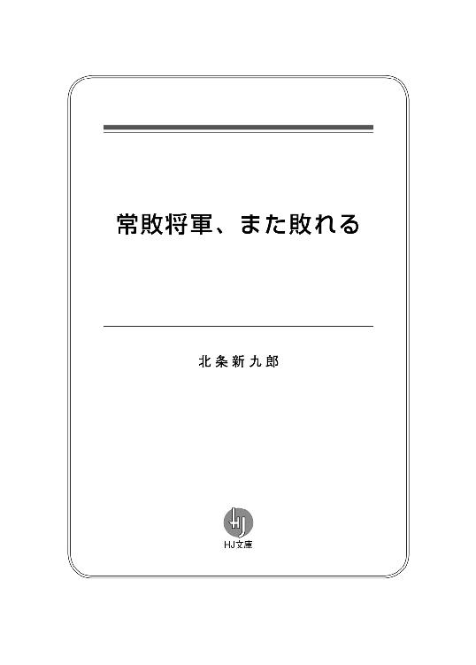

| 常敗将軍、また敗れる (HJ文庫) | |
| 北条新九郎 | |
| ホビージャパン (2018) | |


プロローグ
統一帝国が崩壊して30年。世界は乱世を迎えていた。弱者は強者に刈り取られ、強者は更なる強者に屈服する。今日味方だった者が明日は敵となり、敵同士だった者が利益のために手を結ぶ。信用も安寧もない時代。
求められているのは圧倒的な力。あらゆる戦に勝利する無敗の才である。
そんな時代において、ある異色の傭兵がいた。20年に渡り戦場を駆け抜け、幾つもの死線を潜り抜けた男である。強く、疾く、賢い戦士。勿論、そういう者は他にもいる。ただ、彼が名を馳せていたのは、こう呼ばれていることが由縁でもあった。
『常敗将軍』と。
「ドゥ・ダーカス!? あの『常敗将軍』を呼び寄せると!?」
ヘイミナル王国王城の会議室で、軍司令官サクラビィ将軍が驚嘆の表情を晒した。
「戦に出れば必ず負けるという......。しかも、その数は計り知れない。最近でも、『セライバン攻城戦』では篭城していた城塞を落とされ、『ルーベルンベの戦い』ではみすみす敵に渡河を許し、敗北の要因を作った。奴の成すことは全て味方の敗北へと繋がる。そんな男を我が国に招くというのですか!?」
サクラビィのそれは叫喚に近かった。他の将軍たちも同じ感情である。皆が皆、その発言元、デイル・バルフォーンを見た。老齢な将軍たちからすれば、35歳というのは若造の類であろう。その端整な面持ちに整った顎髭からは、戦からは掛け離れた匂いがしてくる。それでも彼が平然としていたのは、王弟という立場のためだけではなかった。
「彼ほど大戦を経験した者が、我が国におるだろうか。あの経験は、ヘイミナルにとっていかなる財宝よりも価値があるもの。決して蔑ろには出来ないはずだ。幸運にも、私は彼への伝手がある。今すぐにでも使者を送るべきだろう」
淡々と答えるデイル。感情を込めない言葉は主観を廃し、相手を冷静に説き落とす力がある。
今、ヘイミナル王国は隣の大国ザルツボルグの侵攻を受けていた。救援も望めない窮地を前に、王国の首脳たちが知恵を絞り合っていたのだが、デイルのこの提案はその内の一つである。
「現在、我が国に侵攻しているザルツボルグ王国軍は２万。それに対して、我が軍は精々６千というところ。しかも、万の軍勢と戦うのは初めてのことだ。片や、ドゥ・ダーカスは万の軍勢と戦ったこともあるし、率いたこともある。それに、ダーカスは嘗てザルツボルグにいたこともあり、その内情にも詳しい。これ以上相応しい人物は他にはいないだろう」
それに関しては、将軍たちも反論は出来なかった。ヘイミナルは小国である。この広大な大陸から見れば、点のような弱小国家だ。そんな国に名のある傭兵を呼ぶこと自体、夢のような話。
その案に乗ってもいいだろう。幾人かの将軍がそう思った時だった。
「とんでもない、有り得ぬ選択だ！」
デイルの二つ隣の少女が否定をした。立ち上がり、テーブルを激しく叩きながら、彼を睨みつけてくる。
「常敗将軍だと？ そんな者がいたら勝てる戦も負けてしまう。負け癖のついている人間など、我が国には必要ない！」
齢は17。長い髪を纏め上げ、豊胸を軍服で覆い隠す。その鋭い視線は将軍たちにも劣りはしない。彼女もまた美しい面持ちだったが、その言葉には若者らしい勇壮な覇気があった。その立ち振る舞いは男と見紛うばかりである。国王の唯一の子供故に、後継者として育てられていたからであろう。
「今必要なのは、敵を完膚なきまでに叩く獅子の如き闘志である。ザルツボルグの侵攻理由は言い掛かりに近く、それ故にヘイミナル国民の反発は実に大きい。我が軍の士気は高いのだ」
彼女の名はシャルナ・バルフォーン。王国の王女である。
「陛下、このシャルナが直接軍を率いて敵を打ちのめしてみせましょう。どうか、私に出陣を命じて下さいませ！」
諸人の注目は、その二人の間へと集められる。そこに座るは、この国の絶対意志、国王モルフラン・バルフォーン。
その口から放たれるのは、
ゴホっ――。
「ゴホ、ゴホ、ゴホ......」
「父上！」
咳。激しい咳だ。シャルナは慌てて国王の背を擦ったが、それでも止まず。寧ろ、弱々しさを晒す結果となる。堪らず、その場にいた全員が立ち上がった。デイルを除いて。
「だ、大丈夫だ、シャルナ。少し胸の機嫌が悪いだけのこと」
モルフランは病を得ていた。すっかり痩せ細り、50近い年齢であるのに老人のような白髪になっている。見た目からして、平癒からは程遠い状態だった。この会議にも無理を押して参加しているよう。それでも、自らの務めを果たすべく、その口を力なく開ける。
「皆の者、シャルナの言う通り、この戦争はザルツボルグの言い掛かりによって始められたものだ。我が国に非はない。しかし、それが乱世なのだ。小国は常に強国の事情に左右される。我々に出来ることといえば、彼らの機嫌を伺うことと、もがき抗うことしかない。そのことに怒る者もいるだろう。逆に失望する者も......。だが、これだけは心に留めておくのだ」
モルフランは、もち得る全ての気力を込めこう言った。
「国民を苦しめる選択だけはしてはならぬ。ヘイミナルにとっての勝利は血を流さないことだ」
誰もが耳を傾け、誰もが口を閉じる。その言葉は決して異論が許されるものではなかった。ヘイミナル首脳部は粛々とそれを受け入れる。......納得したかは別として。
そして、それが絶対意志としての最後の命令でもあった。その後、国王は舞台を去る者としての後始末をする。
「以後はシャルナとデイルに全権を任せる。皆も二人の指示に従ってくれ」
「はっ！」
当然であった。対ザルツボルグ会議とはいえ、この権利委譲が今回の主議題だったともいえる。
結局、その日の会議は国王の容態の心配もあってそれまでとなった。
その夜、シャルナとデイルは国王の私室に呼ばれた。イスに深く腰掛けるモルフランの前に、娘と弟が立つ。
「シャルナよ、お前が国王代理だ。国家を担う立場、決して軽はずみな行動はするな」
「それは私に出陣するなということですか？」
「感情に身を任せるなということだ」
「しかし、危機が迫っている以上、王族が先頭に立たなくて国が護れるでしょうか！ 私は国家の代表として......」
「ならん、王は鎮座してこそ王だ。......それとも私の言うことは聞けぬか？」
シャルナは口を噤んだ。拳を握り、反論の言葉を必死に押さえつける。この若人を納得させるのは難しいだろう。父もそんな娘の性を知っているからか、溜め息をついて退席を命じた。
「嫡子として立派に育てたつもりだったが......困ったものだ」
シャルナが出て行くと、モルフランは更に大きな溜め息をついた。
「デイルよ、後見人としてアイツを支えてやってくれ。無理をしないようにな」
「畏まりました」
「あの子に、お前のような冷静さが少しでもあれば。いや、愚痴っても仕方がないな」
「王者として立派に育っているかと」
デイルは微笑みながら褒めた。ただ、それが引き金というわけではないだろうが、突如モルフランの口調が険しくなる。
「デイルよ」
攻撃的というべきか。弟を睨みつけながらこう忠告した。
「お前は冷静で賢い。その判断に誤りはなく、国外事情にも詳しい。それ故にお前の下に集まる人間も多いだろう。だが、それは国内を乱すことにもなる」
「人質としてザルツボルグに長くいたからでしょう。人との接し方を覚えましてな」
「そう、お前はその人生の半分以上をザルツボルグで過ごした。今思えば、あそこにいさせたのは正しかったのだろう。お前はよく手紙を送ってくれて、ザルツボルグや周辺国の実情を伝えてくれていたからな。......ただ、考え方も自然とザルツボルグ寄りに傾いているのではないか？」
「考え過ぎでしょう」
「だといいがな」
王に安堵はない。
「シャルナは過激で国粋主義だ。片や、お前は恭順派でザルツボルグにも理解がある。両者に権限を与えたのは、その吊り合いを考えてのこと。どちらか一方だと国は滅ぶだろう」
「そうならないよう務めます」
そう言うと、デイルは敬礼をしながら頭を下げた。だが、やはり王に安堵はなかった。冷めた眼差しを返す。
「デイル、娘と王国を頼んだぞ」
それでも期待の言葉を口にするのは、弟の才を認めていたからだ。ヘイミナルにはなくてはならない男。そして、デイルが大人しく嫌味を受け入れていたのも、それを知っているからだった。
「それでは、お身体を大切にして下さいませ、陛下」
粛々と部屋を退出する姿は忠臣そのもの。
その後、鼻で笑ったのは佞臣そのもの。
デイル・バルフォーンには、誰にも明かせないある計画があった。
勿論それは、ヘイミナルの未来のための方策である。
ただ、そのためにはどうしても彼が必要だったのだ。
常敗将軍、ドゥ・ダーカスが。
こうして、ヘイミナルは王国存亡の戦いを迎えた。
第一章 常敗将軍、現る
レナックスは、ヘイミナルの王都であり最大の都市である。田畑と藁葺き屋根ばかりが目立つ質素な王国にあって、この街だけはタイル屋根に石畳の道路と、大国に劣らない生活基盤が整えられていた。そして、街の中央には立派な王城がそびえ立っている。国土の中央にあり、それでいて難攻不落の城塞に囲まれた王国の心臓部。ヘイミナルの全てと言っても過言ではない都市である。
その街が、今異常な賑わいを醸し出していた。これから戦乱がやってくるというのに、人が増える一方なのである。ザルツボルグ軍を恐れて逃げてきた地方民に、ザルツボルグ方面への足止めをくらった旅商人たち。そして、防衛の為に各地から集められた王国兵など。
ただ、そんな中にある異質な者たちがいたのだ。ヘイミナルの風土に馴染めておらず、それでいて周りに殺気を振り撒いている連中。重装の鎧を着た者から、野盗と見紛う粗暴な人間まで。共通しているのは、皆偉丈夫だというところ。戦を求めて国外からやってきた傭兵である。
正直、市民たちからは歓迎されていない。ああいう類は、街中で何かと問題を起こすからだ。だから政府は、早々と彼らをレナックス城の目立たない裏庭へと集めた。
「傭兵か......」
そこの壇上に立ったベルミドは、鬱陶しげにその者たちを見下ろしていた。彼はデイル麾下の軍人だったが、その意に反して傭兵を統括する役目を与えられていたのだ。
「こんな連中にヘイミナルを任せられるのか」
ハッキリ言って烏合の衆である。連帯感などありもせず、愛国心など更にない。望むのは勝利ではなく金だけ。今もベルミドが目の前に立っているというのに、思い思いに談笑し、思い思いに喧嘩を始める始末だ。
「何人だ？」
「５０４名です」
彼の隣の部下が答えた。それでも、今のヘイミナルには貴重な戦力なのだ。受け入れなければならない。
ベルミドは５百余名に宣言する。
「静まれい、私はこの傭兵団を統括する王国軍のベルミドである。以後は私の指示に従ってもらう。まずは、それぞれの戦績に合わせて部隊を編成する。諸君らには自己申告をしてもらおう」
それは真っ当な判断だと彼は思っていた。しかし、反応は鈍い。いや、反感まで。
「ああーん!? 面倒臭せーな」
「このままでいいじゃんかよー」
「一々割り振るなんて聞いたことねーぞ」
あちこちから噴出する異議。それが絶え間なく出されるから、ベルミドは叱責する暇も与えられなかった。そしてこう思う。「くそ、案の定この様だ。こんな連中が本当に役に立つのか？」と。
されど、部隊の割り振りはデイル直々の命令だった。ベルミド自身もその判断には賛成していたのだが、
「ええーい、静まれい。勝手な発言は許さん。貴様らはヘイミナル軍として戦うのだぞ。指揮官の命令に従え！ この俺の命令に従え！」
彼の技量がそれを成せないでいた。不満はやがて罵倒の嵐となる。暴動すら起きそうなほどに。
だが、ある男の大声がそれを止めた。
「あーあ、見っともない連中だ。こんな奴らと一緒に剣を握らなければならないとはなー！」
若い男だ。齢は17、８というところ。それでも、荒くれ者共相手に自信満々な笑みを見せつけている。
「どうせ、申告出来るような経歴を持ち合わせていないんだろう。貴様らの空威張りはもう満腹だ。疚しいと思ったらとっとと逃げてもいいんだぜ？」
「何だと、ガキが！」
近くにいた大男が詰め寄った。齢も体躯も彼より遥かに上。しかも、抜き身の剣を威圧するかのよう見せ付けてくる。だが、少年に変わりはない。
「聞こえなかったのか？ 自分から言えないってことは、どこぞで敵前逃亡でもしたんだろう。そんな恥をかくぐらいなら、今の内に辞退した方がいいと思うぞ」
「テメェェェェェェェェェ！」
大男は剣を振り上げた。......が、そこまで。決して下しはしない。何故なら、
「うっ......」
男の首を10本の剣が囲っていたからだ。少年の部下たちによって。
場は整った。彼は意気揚々と自らを売り出す。
「よーし、まず俺から自己紹介しよう。俺の名はアイザッシュ・ドムロ。ドムロ傭兵団の団長である。手下50名と共にヘイミナルの危機に参上した。......ベルミド将軍！」
「ムっ」
「我々の数々の戦功は貴方の耳にも届いていよう。我らは王国に忠誠を誓う。是非、先鋒を命じて下され。その暁には、獅子の如き働きでザルツボルグの弱兵を討ち滅ぼしてみせましょう！」
そのアイザッシュの宣言は自信に満ち満ちていた。それだけ彼の名は轟いていたのである。場はどよめき、大男も身を引かざるを得ない。同業者たちは思い思いにこう口にした。
「あれがドムロ傭兵団か。若いとは聞いていたが、皆10代ぐらいだぞ」
「それでも、この辺の戦では大抵名が上がる。この前のサバラの戦いでも幾つも首を獲ったらしい。勇猛だって話だしな」
「しかも50人も連れてくるとはなぁ。ここの中じゃ一番の大所帯だろう」
誰もがアイザッシュを認めていた。続けて名乗り上げる者が出ないほどに。彼の戦功と競う真似など出来やしなかったのである。
そして、ベルミドもその実力と若い意気に喜んでいた。
「うむ、貴様の話は聞いている。活躍を期待するぞ」
意外にクズばかりではなかったと、彼も満足そうな笑みを浮かべている。
その後は、事務的に事が進んでいった。傭兵たちは列を成し、事務員に己の経歴を申告する。初めは気が進まなかった連中も、今では渋々応じていた。よくよく考えれば、報酬を貰うには避けては通れないことなのである。中には過大に申告する者もいたが、そういうのは激戦地を宛がわれる。お勧めは出来ない。
そして、登録が終盤になった頃だった。列の後尾で揉め事が起きる。
二人組の男が、前に並んでいるフードの男を呼んでいた。
「おい、お前。お前だよ、チビ」
その男は小さかった。実に小さかった。１６０糎弱しかない。気配を消すように混ざり込んではいたが、偉丈夫だらけの中ではやはり目立ってしまう。それでも肝が据わっていたのか、長身の男たちを堂々と無視してみせた。
「おい！」
気が立った男の一人が、荒々しくそのフードを取る。......と、その途端、その苛立ちは綺麗さっぱり消え去った。笑みを浮かべてしまうほどに。
「へへ、やっぱりな」
フードの中から現れたのは、長く美しい桃色の髪。しなやかで、まるで女のような整った下げ髪だった。
いや、女なのである。しかも、かなり若い。まだあどけなさも残っている。
しかれど、彼女はそれすらも覆い尽くすほどの美貌を誇っていた。白く柔い肌に、薄桃色の唇。前髪は滑らかに靡き、男たちに囲まれているというのに碧い瞳からは全く怯えを感じさなかった。どこぞの田舎娘とは思えない。
「戦争ごっこをしたいなら外の空き地でガキ共がやってるぜ、お嬢ちゃん」
「それとも本気で戦う気か？ そんな貧相な身なりでよー」
甘ったるい声で諭す男たち。片や、その目は言葉とは裏腹に、彼女の身体をじっくりと舐め回していた。コートの奥にあろう柔い肌を想像しているのか。その上、他の傭兵たちも興味津々に集まってくる。
「なんなら、俺が護ってやろうか？ 専属の護衛になって面倒を見てやるよ。戦場でも......ベッドの中でもな」
そして、男は笑いながらその美しい肌に手を伸ばす。
すると......落ちた。
その手が。
「へ？」
続けてその首も。
「うおぉ！」
悲鳴を上げたのは野次馬たちだ。男の仲間の方は絶句しているだけ。喉を突き刺されていたから。
一瞬である。息もつかない早業。それを淡々とこなした少女は、悠々と剣に付いていた血を振り落としていた。その剣も、少女の小さい身体に合わせた細い特注品のよう。明らかに只者ではない。
「な、何だ、お前......」
野次馬の一人が聞いた。
だから彼女は正直に答える。
「ティナ・ヴァサームント」
「ヴァサームントぉ!?」
驚愕は驚天動地となる。一人の男より発せられた「ヴァサームント」という単語が、ドミノ倒しのように５百余人に広まっていく。いや、その外、王国の者たちにも感染していった。その反応はアイザッシュの時以上のもの。
「ヴァサームントって、あの『ヴァサームントの騎士団』か!?」
「世界最強の傭兵軍団。一人雇うのに10人分の報酬が必要で、その働きは20人分に相当するという」
「あの強大な統一帝国が滅んだのも、ヴァサームントの騎士団との戦争が遠因だとも言われている......」
その名声は、地元で鳴らしていたドムロ傭兵団など足元にも及ばない。アイザッシュもそれを知っているから、年下の少女に畏敬と対抗心を剥き出しにしていた。
大の男たちが恐々と道を空けると、ティナの前からは列が消える。気遣いに甘え、彼女は颯爽と進み事務員の前に立った。
「ティナ・ヴァサームントです。戦歴は無し。これが初めての従軍です」
「え？ ......あ、はい。それで......」
「私は修行中の身。報酬は他の方と同じように」
それだけを伝えると、早々と去る。
その後は、嵐が過ぎ去った後かのような異様な静けさが漂っていた。傭兵たちは雑談すらせずに、淡々と受付を済ませていく。死人も出たが、所詮は雇われ外国人。お陰で、王国としても快調に終わりを迎えられそうだった。
そして、事務員は名簿帳を見ながら最後の一人を受け付ける。
「はい、次の方。戦歴は？」
「多くて......。最近のだけでもいいですか？」
「ええ」
「『リザ・トライアム戦争』、『セライバン攻城戦』、『ルーベルンベの戦い』、『クラックラック内戦』。あとは......この間あったシュレイブ王国とロンドー王国の小競り合いも入れていいか」
「はは、随分ご活躍だったんですね。よく死ななかったものだ」
事務員は茶化した。本気にしていなかったから。それでも彼は笑って答える。
「それだけが取り柄ですから」
「お名前は？」
「ドゥ・ダーカス」
「......え？」
事務員は顔を上げた。そこにあったのは、屈託のない古傷だらけの笑顔。
「ドゥ・ダーカスです」
男はもう一度言った。
「ドゥ......ドゥ、ドゥ、ドゥ、ドゥ......」
青ざめていく事務員の面。その覚束ない口から吐かれるのは、決して口にしてはならない不吉な名......。
「ドゥぅぅぅ・ダぁぁぁカスぅぅぅっ!?」
その声があまりにも大きかったからか、今度はドミノ倒しではなく一瞬で傭兵全員に広まった。感情も含め。
「なにぃぃぃ!?」
「ダーカスだぁ!?」
その反応はティナの時以上のもの。ただ、それは驚愕というより悲鳴に近いものがある。
「あ、あの常敗将軍だと!?」
「死神、ドゥ・ダーカス......」
「何で......よりにもよって」
......など、これまで相手を称えていた彼らも、今度ばかりは口数も少ない。絶望した顔を晒している。例外といえば、怒りを示しているアイザッシュと一心に見つめるティナぐらいか。
１７７糎と決して大柄とは言えない背に、顔や手から覗く古傷だらけの肉体。一見すれば他の傭兵と何ら差のない男だ。ただ、それでも伝説の傭兵らしい不可思議なところもある。
それは顔。戦歴20年の男なのに、どう見ても齢は30前後にしか見えなかった。当然、別人や成りすましの可能性もあるが、よくよく考えればそれは低い。好き好んで不名誉な男の名を使うだろうか。
やはり、常敗将軍その人なのである。
沈黙......。場からは熱が消え、寒々しい風の音だけが鳴り響いた。
「ど、ドゥ・ダーカスだな」
そこにベルミドがやってくる。怒りというか、恐れというか、空笑いというか、言葉では言い表せない表情でその笑顔の男に命じる。
「デイル殿下が貴様をお待ちだ。ついて来い」
その応接室は個人面談用の小さな一室だったが、城下町を見渡せる王城の特等席でもあった。但し、そう度々使っていいところではない。重要な人物を相手にするときか、若しくは聞かれたくない話をするときだ。
窓を開けるデイル。その風を浴びながら街並みを見下ろす彼の顔には、いささか安堵が混じっていた。
「よく来てくれた、ダーカス。本当にありがとう」
背を向けたまま、ソファに座る彼に謝辞を述べた。
「我々の仲ではありませんか、殿下。たとえ世界の果てにいても駆けつけますよ」
「10年ぶりか......。貴様は全く変わっていないな」
ダーカスの顔を見るデイル。老けたのは彼だけか。
「いえ、これでも傷は増えているんですよ。色々なところで戦いましたから」
「貴様の活躍は嫌でも耳に入る。伝説の傭兵の一人だ」
「けれど、誰もが歓迎しているわけではない」
「そうだ。残念ながら軍部は貴様を嫌っている。正式に招待出来なかったのは申し訳なかった」
「仕方ありません」
「だから、貴様に預けられる兵もあの傭兵たちだけだ」
「結構です。しかし、それでもよく傭兵の管理を任せられましたな」
「私に反発しているシャルナ王女ら武官たちは国粋主義者だ。傭兵など信用していないのだよ」
「成る程」
そして、デイルは笑顔を消してこう請うた。
「ダーカス、私は数いる天才傭兵たちの中でも、貴様を最も評価しているつもりだ。今回の戦争も貴様でしか乗り越えることは出来ないだろう。だが、王女や王国軍が嫌っている以上満足な支援は敵わない。それでも、ヘイミナルの未来のためにどうか力を貸してくれ」
やっと見せた彼の真剣な顔。必勝の意志と不退の覚悟を込めたその言葉に対し、ダーカスは敬礼で応えた。
「このドゥ・ダーカス、殿下の御心に従い、必ずやザルツボルグを追い返してみせましょうぞ」
「うむ」
感謝を込めて、デイルは退席する彼を最後まで見送る。
そして、閉められた扉に向け、こう再び言い聞かせた。
「そう、貴様でしか成しえん。常敗将軍である貴様でしか......な」
王弟の策謀が、また一歩前進した。
集められた傭兵たちは、王城の側にある宿舎で寝泊りすることになる。普通なら、傭兵は戦うその日まで各自で宿屋に泊まったりするものなのだが、ヘイミナルは愛国心が強い国である。余所者を嫌う市民らの感情を鑑みれば、致し方ない処置でもあった。
それでも、ダーカスはデイルの配慮で特別に別棟の個室を与えられていた。25平米ほどの一室で、その広さや豪勢さから察するに、相当気遣ってくれているのだろう。
そこに意外な来訪者が訪れる。
「君は......」
「ティナ・ヴァサームントです」
扉を開けると、彼女が一人立っていた。日が落ち切った頃で、この時間の私用の訪問は少々異質である。しかし断る理由もなく、ダーカスは何事もなく招き入れた。
部屋中央のソファに腰掛ける二人。ティナはコートを脱ぎ、腰の剣を外す。
「ヴァサームントということは、首領の一族の者か？」
ダーカスは緊張を解すべく、まず世間話から始めた。
「そうだ、ヴァサームントの騎士団の首領、ローディアス・ヴァサームントの第十子にして五女だ」
「齢は？」
「15」
「ヴァサームントの騎士団はただの傭兵団ではない。小さいながらも国家だ。そして男は皆、傭兵として出稼ぎに出る。その前段階として、15歳から修行の旅に出るというのは知っていたが......。まさか、ヴァサームント家では女もそれに当てはまるとはな。噂に聞いていたとはいえ、実際この目で見るまでは信じられなかったよ」
「我が家は傭兵国家の首長だ。家族全てがその務めを担えなければならない」
力強い口調だ。戦士の意志を感じる。この少女には間違いなく最強傭兵団の血が流れていよう。
「ヴァサームントか......。嫌な名前だ。商売敵だし、戦では何度も苦汁を舐めさせられた。しかも、君の父上には二度も殺されかけている」
「しかし、まだ生きている」
ティナの声が少し弾んだ。どうやら、それが用件だったよう。そのままこう続ける。
「貴様はこれまで父ローディアスと二度、長兄シャルクとは一度戦っているはず。そして、どの戦にも負けた」
「うむ」
「しかし、生きている。父は言っていた。これまでの戦歴の中であれほど手応えのない男は初めてだった、と。兄は言った。あの戦いの自分はまるで牧羊犬だった、と」
「フ、酷い言われようだ」
「本当にそう思っているか？」
ティナが睨んだ。ダーカスは冗談だとばかりに微笑む。
「父や兄が相手のことを語るのは少ない。貴様は間違いなく伝説だ。私はそれを見極めたい」
「どうしろと？」
「私を側に置いてくれ」
初めて思慮するダーカス。顎を擦りながら、品定めするようにティナの全身を見回した。
そして、こう締める。
「つまり、俺に服従するということだな？」
少女は......頷く。
一見、平然と頼んでいるようにも見えるが、これは彼女にとっても冒険であった。無礼な男を早々と殺してしまうほどの潔癖ぶりであるのに、出会ったばかりのダーカスに尽くすというのだ。されど、仕方がない。ティナは修行の身。この旅で、訓練では決して手に入れられない『何か』を得なければならなかったのだ。
それに、他にも理由がある。
「元々宿屋に泊まる気だったのだが、どうやら傭兵たちは皆、大部屋に詰め込まれるらしい。連中と連夜を過ごすなんて真っ平だ」
その答えには、ダーカスもつい噴き出してしまった。上司もそういうことならと歓迎する。
その代わり......。
「ところで、俺に服従するってことは、夜の相手もしてくれるんだろうな？」
ダーカスは少女の胸を眺めながら言った。15歳相応のまだ未熟ではあったが、服の上から見ても実に美味しそうである。
そして、ティナも当然のようにそれに嫌悪感を晒した。だが、言った手前覆すわけにはいかない。この男の側にいられる降って湧いた好機なのだから。
「望むのなら......」
「結構だ」
その言葉に、ダーカスはニヤ笑いで頷いた。
「但し、その時はケジメをつけてもらわなければならん。私も処女だからな。故郷の父と兄に挨拶してもらう。......最悪、首だけでも」
「......結構だ」
その言葉に、ダーカスは空笑いで頷いた。
「ダぁぁぁカぁスぅ」
そこに走るは野太い呼び声。ダーカスが眉をひそめてその元を見ると、入口にはベルミドが立っていた。顔面からは憤りが漏れている。
「デイル殿下からの命で、俺は貴様の副官に任じられた」
「ベルミド殿」
「王国軍の俺が、募兵に応じた一傭兵の副官にだぞ！」
足で詰め寄り、身体で詰め寄り、顔で詰め寄る。鼻先が触れそうなまで迫るベルミドに、流石にダーカスも苦笑いしながら身を引いた。
「まぁまぁ、落ち着きなされ。よしティナ、最初の命令だ。ベルミド殿にお茶......いや、酒をお出ししろ」
しかし、彼の怒りも理解は出来る。デイル麾下とはいえ、彼も王国軍人であり、本心では傭兵を毛嫌っているのだ。信用していない。なのに、その統括を命じられた上に、突然現れた男の副官に落とされるとは......。不満が溜まらないはずがなかった。
席に着き、出された酒をがぶ飲みしているベルミドを、ダーカスは不憫な想いで受け入れる。
「そう悲観なされるな。貴殿の役目は傭兵たちの監視役。私が変なことをしないかどうか見張るのが務めですぞ。重要な任務ではありませんか」
「フン、自分で言うか」
「けれど、デイル殿下の下にいる以上、傭兵に関わる仕事が来るのは分かっていたはず。今更嘆くこともありますまい」
「うっ......むぅ」
ベルミド、抗弁出来ずまた酒をがぶ飲み。
「そもそも、何故武官の貴方がデイル殿下の下におられる。今、ヘイミナルはシャルナ王女の武官ら武断派と、デイル殿下の文官ら文治派とで分かれているはず」
「俺の家は代々文官を輩出していてな、親父は農務局の役人をしていて、その流れで殿下の下にいるんだ。軍人になった俺が異端なんだよ」
「成る程、そうなれば軍に居場所もありますまい」
「チっ、一言多い奴だ」
空になった杯をテーブルに叩きつける。そして、ダーカスを指して叫んだ。
「そもそも、何で貴様なんだ！ 伝説の傭兵なら他にもいるだろう。『ダル・ヴァーン』に『隻眼のルド』、『ヴァサームントの騎士団』に『三略のベルクート』も。......そして、常勝と名高い『トルメニクスの白豹』。不敗の名将はたくさんいる！ なのに、よりにもよって悪い方で伝説になっている男がやってくるなんて......」
「まぁ、そう都合良く伝手があるものでもありませんし。さぁ、ティナ。お酒を注いで」
脇に控えていたティナが、持っていた酒瓶でベルミドの杯に注ぐ。当然、不満面で。最初の命令が酌取り女とは......。
「しかし、ベルミド殿。貴方はこの境遇にご不満かもしれませんが、デイル殿下は貴方の実力を買ってこの任務に抜擢なされたのですよ」
「何？」
「武断派と対立している以上、この傭兵５百は実質デイル殿下の全戦力です。デイル殿下麾下でそれを任せられるのは、貴方しかいなかったということでしょう」
その言葉が、ベルミドの身体から熱を引かせていく。
「一応、私が指揮官ということになっていますが、所詮は外部の人間。王国軍の一員として戦うにも、貴方方の後ろ盾は欠かせません。ベルミド殿、どうかこのダーカスにお力添えを頂けますよう心からお願い申し上げます」
そして、深く敬礼をするダーカスを目にすると、ベルミドの不満と酔いは完全に冷め切った。慌てて返礼する。
「い、いや、こちらこそ、お恥ずかしい姿をお見せしました。......不肖ベルミド、非力ながらも副官として貴殿をお支え致す所存。何卒、宜しくお願い致します」
こうして、彼は誇り高きヘイミナル軍人に戻った。ダーカスにとって無くてはならない軍部との取次ぎ役である。
翌朝。この日から、伝説の傭兵ドゥ・ダーカスの本格始動となる。部屋を出た彼が向かう先は、傭兵たちの宿舎。
ダーカスは侍らせているティナに聞いた。
「よく眠れたか？」
「私は熟睡しない」
「癖か？」
「そう仕込まれている」
「結構だ」
「貴様だって同じだろう？」
そう言われると、ダーカスは苦笑いをして正直に明かした。
「そりゃ、剣を抱いて寝られていたらな」
あの部屋にはベッドは一つしかない。つまり、二人は同じベッドで寝ていたのだ。そこにティナが剣を抱えて就寝したのだから、隣に寝ていたダーカスは気が気でなかっただろう。傭兵二人を瞬殺した手口を鑑みれば、指先一つでも触れたら、意志に関係なく反射的に刺し殺しにきていたはず。だが、そんな危険まで犯して、何故一緒に寝たのか。
「なら、何故私と一緒に寝た？」
「勿論、ソファよりベッドの方が疲れが取れるからな。二人とも休めた方がいい」
「それだけか？」
軽蔑の眼差しを向けるティナ。されど、老練な上司はそんなことも意に介さない。
「休める時に休んでおく。戦争の鉄則だ」
彼のその言葉に邪さは感じられなかった。彼女の心を僅かばかり安堵が包む。
「やっと傭兵らしい言葉を聞けた。正直、貴様の人格に疑問があったからな」
「人格？」
「女に関しては下種な連中と変わらんだろう」
「いやいや、ヴァサームントが異常なだけだ。あそこの兵は世界一規律が厳しいからな。普通の人間なら性欲を曝け出す。何せ、いつ死ぬか分からない職業だからな」
「生存本能というやつか」
「そういうことだ」
そして、二人は３棟ある宿舎群に着いた。傭兵たちはここに詰め込まれているらしい。その内の一つの戸口で、ベルミドの部下が出迎える。
「おはようございます、ダーカス将軍」
「おはよう。早速傭兵たちに挨拶したいんだが、全員いるか？」
「はい、４５５名全員です」
「ん？ ５百余人じゃなかったのか？」
ティナが問い返した。彼女が殺したのは二名のはず。あまりにも減り過ぎだ。
すると、部下は目を逸らし、それでも務めだからと言い辛そうに答える。
「いや、その......ダーカス将軍がいらっしゃるということで、辞退した者が多数出まして......」
「50人も逃げ出したのか!?」
少女は驚き、呆れた。常敗将軍がいるとはいえ、まだ開戦前である。人間一人の存在で判断を覆すことに信じられなかったのだ。
されど、この指揮官に動揺は全くない。
「予想より残ったな」
ダーカスは中に踏み入る。
そこは仕切りのない倉庫のようだった。あるのは屋根と外壁とズラリと並ぶベッドだけ。そこで男たちが博打なり喧嘩なりで好き勝手に過ごしていた。ただ、汗臭さのあまりティナが眉をひそめている。
「諸君、注目ー！」
そうダーカスが宣言すると、荒くれ共は苛立った視線で応えた。
「この度、お前たちの指揮官になったドゥ・ダーカスだ。以後は俺の指示に従うように」
そうダーカスが宣言すると、荒くれ共は意気消沈して目を伏せた。
流石のティナも徐々に理解し出す。雑兵とはこれほど軟弱なものなのだと。
それでも、中には虚勢を張る者だっていた。
「ドゥ・ダーカス！」
一人の大男が剣を手にして立ち塞がる。
「貴様の下手糞な指揮では、いくら命があっても足りん。すぐにヘイミナルから出て行け。俺に殺される前にな」
そして、剣先をダーカスの鼻に向けた。されど、老練な上司はそんなことも意に介さない。忠告し返す。
「聞こえなかったのか？ 俺は指揮官だと言った」
「聞こえなかったのか？ 俺は出て行けと言った」
「ティナ、コイツを殺せ」
大男は死んだ。
また、あっという間に。
ダーカスは喉を突き殺された大男を前にして、改めて傭兵共に宣言する。
「いいか、貴様ら外国人がいくら死のうが、ヘイミナルにとっては痛くも痒くもない。いや、寧ろ死んでもらった方が払う給金が減って助かるぐらいだ。所詮は道具。愛国心の強いここでは当てになどされていないし、任される仕事もクソみたいなものばかりだろう」
ダーカス、大男を片足で踏む。
「しかし、俺は貴様らを生きて帰してやるつもりだ。ヘイミナルが俺たちを蔑ろにするのなら、俺たちも戦争に勝敗を求めん。ただ淡々と任務をこなし、この国が滅びそうならとっとと逃げるだけだ」
ダーカス、大男を両足で踏む。
「貴様らは無駄に命を落とすことはない。貴様らがここにいるのは生きるため、生活のためなんだからな。俺は20年以上戦場におり、何十という負けを経験してきたが、まだ一度も死んではいない。一度もだ！」
ダーカス、両手を仲間たちに振りかざす。
「俺といれば生き残れる。生き残って、このヘイミナルからがっぽり金をせしめようではないか！ 生き残りたいなら俺に従え。俺を信じろ！」
そして、それを握り締めた！
「お前たち、このドゥ・ダーカスと共に戦場を駆けるか!?」
......。
静寂......。
次いで熱狂！
更には宿舎を覆う圧倒的な歓声！
「うおおおおおおおおお！ ドゥぅ・ダぁーカスぅ！」
傭兵たちの彼を呼ぶ声には、もう恐怖も憤りもない。活力が漲った叫びが、４５４人を一つの仲間と認めさせ、ドゥ・ダーカスの背中を目指すところと定めさせた。
側で見ていたティナは、ただただその光景に目を奪われる。
それは、彼女が初めて見た生の兵士の姿だったのかもしれない。
一通り仲間たちとの挨拶を済ませたダーカスは、来た時と変わらない晴れ晴れとした表情をしていた。宿舎を出て、その顔と同じ晴天の空を眺める。
「しばらくは晴れ日が続きそうだな」
傍らのティナに言った。しかし、彼女の顔は逆に曇っている。
「どうした？ ティナ」
「いや......あれが傭兵なのか、と」
「そう、あれは......」
そこに、ダーカスへの呼号が割り込んだ。
呼んだのはドムロ傭兵団のアイザッシュ。唯一、先ほど呼応しなかった男だ。
「ダーカス、先に伝えておくべきだと思うから、今言っておく。俺は貴様を認めん！ 貴様の考えはあまりにも利己主義的で、望んでヘイミナルを敗北に導いている」
その暴言を前に、ティナが腰の剣に手を当てた。殺すよう命じられると思ったから。だが、若武者はそれに構わず続ける。
「俺は最強の傭兵を目指している。ヴァサームント以上のな。だから、当然今度の戦にも勝利をもたらすつもりだ。もし、貴様が命惜しさにこの国の足を引っ張るような真似をしたならば、俺が後ろからその首を斬り落としてやる！」
アイザッシュからの宣戦布告。彼は他の傭兵にはない勇ましい気概を持っていた。若さ故か、実に素晴らしい。見事である。......だが、それは異様でもあった。
それに対し、ダーカスは清爽な顔のまま、こう答えた。
「一緒に朝飯でもどうか？」
この日も城下は相変わらず賑わいを見せていた。大通りは人でごった返し、店頭には溢れんばかりの品が並んでいる。どこからともなく子供たちの笑い声も聞こえてきた。戦争の匂いはしない。彼らに実感が湧かないのか、はたまた王国の勝利を信じているからか。だが、結構なことだ。騒乱とは程遠い。
ダーカスたちは、その内の一軒の飯屋で朝食を取っていた。丸テーブルに腰を掛け、パンとスープとパスタを味わっている。
「傭兵とは実に脆い。まるで子供だ」
そうぼやいたのはティナ。隣でスープをすすっている指揮官を見る。
「ダーカス、本当にあんな連中で戦うのか？」
「あれが普通なんだ。傭兵に限らん、人間とは単純な生き物なのだよ」
「しかし、あんな連中ではすぐに壊乱してしまう」
「そうさせないのが俺の務めだ」
それでもティナは納得出来ないでいた。尤も、彼女の育った環境を考えれば当然とも言えるが。
「アイツらは傭兵に向かん。そもそも、ダーカス一人の存在で逃げ出すのが理解出来ない。自分の臆病振りを貴様に押し付けているだけだろう」
「何言ってやがる。誰が好き好んでボロ負け将軍の下にいるかってんだ」
アイザッシュだ。ティナの向かいにいた彼がパンを食いながら反論した。
「負けるってことは死ぬ確率が高いってことだぞ。誰が付いていくものか」
その弁にティナも応じる。
「アイザッシュと言ったな。兵卒は任務を選べる立場でも、作戦に口を出せる立場でもない。求められるのは、どれだけ忠実に動くかだ。感情に翻弄されるなど、もってのほか。兵士として失格だ」
「それは指揮官たちの都合のいい理論だ。自分の手柄のために、兵卒を苦もなく殺していく。失えば、また補充すればいいとでも思ってるんだろ。けどな、俺らが戦っているのは、そんな奴らのためではなく自分や家族のためなんだ。そんなんじゃ誰も付いていかねぇよ。下の方から見限っていくさ」
「それが兵士として失格だというのだ。戦場では仲間に背を護られながら戦うもの。兵が逃げ出し陣形が崩れれば、あとは一方的に嬲られるだけだ。自分の感情に身を任せれば、多くの仲間を殺すことになるんだぞ」
憤怒で立ち上がるアイザッシュ。
「それは、側面を叩かれるヘボ指揮官が悪い！」
激昂で立ち上がるティナ。
「戦場とは不安定要素の塊だ。絶対などない！」
そして、そのままダーカスを見る。
「ダーカス、貴様はどう思う!?」
突然話を振られたので、彼はパンをかじったまま止まってしまった。それから、口の中のものをゆっくりと飲み込み、茶をすする。
「まぁ、座れ」
二人が着席すると、歴戦の勇士はこう言い放った。
「その通りだ」
「「どっちの!?」」
「どっちもだ」
ついハモってしまった若い二人も、その答えには何も言えなかった。解せないでいる部下たちに、ダーカスは軽い講義を始める。
「ティナ、お前の考えは間違っていない。実に効率的で、勝率も生存率も高いだろう。流石はヴァサームント家の子女だ。若くとも将才はキッチリ叩き込まれているらしい。......しかし、それはヴァサームントの騎士団においての鉄則だ」
「......」
「人は快楽に弱く、臆病だ。心を制御するには訓練がいる。だが、傭兵とは傭兵になりたいと思った途端、傭兵になってしまうんだ。食いっぱぐれの農民や戦うことしか出来ない暴れん坊がなるもの。読み書きなど到底敵わず、法にも鈍感。覚えられることといえば、剣や槍を持つことくらいか。あとは前にいる指揮官に付いて行くことぐらいだな。お前の言う陣形を覚えることなど望めやしない。そして、学がないから分かりやすいものに縋る。それが『運』や『縁起』だ。俺を嫌うのも、また負けるかもしれないという『厄』のせいなんだ」
疑問が解消されたにも拘らず、ティナは口を開けられなかった。自分の無知を責めているというより、当惑に近いだろう。
続いて、ダーカスの視線はアイザッシュに向けられる。
「ただ、さっきも言った通りティナに間違いはない。彼女がそう考えてしまうのは、ヴァサームントの騎士団の中で育ったせいだろう。彼らは普通の傭兵とは違う。幼い頃から戦士になるべく育てられてきた腕達者たちばかりだ。お前はヴァサームントの騎士団を見たことはあるか？」
「いや」
「連中は戦うためだけの人間だ。それ以外は何もしないほど。だから、剣技も馬術も体力も、そして戦争のための学も一流だ。ティナの剣技を見ただろう。あれはまだ未熟だが、それでも普通の傭兵では刃が立たん」
ティナの眉間が僅かに動いた。
「だが、ヴァサームントが最強と言われている理由は、その腕のせいではない。氷のような精神をもっているからだ。彼らは恐れを知らず、情ももたん。......昔、ある二つの国が戦争をしたことがあったが、どういうわけか両方にヴァサームントの騎士団が派遣された。しかも、戦場で出会ってしまう。それでも、二つの部隊が取った行動は『戦う』だった。お前は友人を殺せるか？ 恨みなどない家族を殺せるか？」
「......」
「彼らはそれをした。躊躇せずにな。そういう連中なんだ、ヴァサームントの騎士団とは。そして、ティナはそういう連中を指揮するよう育てられたんだ」
疑問が解消されたにも拘らず、アイザッシュは口を開けられなかった。自分の無知を責めているというより、当惑に近いだろう。
結局、若い二人は同じ感想に落ち着いた。未知の世界を前に戸惑いばかりが先行してしまったが、それでも得たものだってある。
ティナはこの旅の意味を、アイザッシュは世界の壁の高さを知ったのだ。
そして、ダーカスは二人の素質を見抜く。
午後からはヘイミナルの会議が開かれる。シャルナやデイルが参加する本格的な対ザルツボルグ会議だ。ダーカスは、その会議室の隅に座らせてもらっていた。
「敵軍の司令官が判明致しました。ザルツボルグ王国第五王子アーバルト・ディスカスです」
参謀がそう報告すると、場が騒然となる。
「王子自らとなると、敵は本腰のようですな」
「第二王子のクラクスもサラマド公国を攻めている。ザルツボルグ王は息子たちに戦功を与えたいのだろう」
「しかし、両面作戦をこなせるとは......ザルツボルグの戦力は強大ですな」
「厳しい戦いになりそうだ」
思い思いに口にする将軍たちの言葉は、知ってか知らずか弱気なものばかりだった。続けて別の参謀も報告する。
「近隣国の援軍要請に対する返事も芳しくありません。皆、ザルツボルグと敵対することを恐れているかと」
将軍たちの顔に影を落とす。シャルナの表情も険しく、まるで睨むように軍司令官を見て問うた。
「サクラビィ将軍、迎え撃つ方策は？」
「はっ、敵の目標はこのレナックスに間違いありません。そしてレナックスに辿り着くには、ザルツボルグとの唯一の街道を押さえたシャグラー要塞を抜く必要があります。我が軍は、そこで全力をもって迎え撃つ所存です。要塞の防護力をもってすれば、少なくとも半年は持つことでしょう。敵は大軍故に、長期の出兵は敵いませんからな。恐らく２ヶ月で撤退するかと」
「うむ、シャグラー要塞が我が国の生命線だ。決して抜かれるわけにはいかない。ただ、こちらの兵糧はどうだ？」
「それに関しては十分備蓄があります。最悪、このレナックス丸ごと一年は篭城出来るほどです。市場の方も安定し、今のところ市民の生活に影響はありません」
「父上の政のお陰だな」
満足そうに頷くシャルナ。将軍たちにも必勝の念が生まれてきたか。
そこに、空気を読まずに彼が手を上げた。
常敗将軍である。
「ど、ドゥ・ダーカス殿、何か？」
参謀が指名する。この時初めて彼を見た者も、ここには多かった。
「知っているかもしれませんが、一応ご報告をと。今回の敵軍の将にユアン・マルハルドがいると耳にしました」
「何だと？ 本当か!?」
サクラビィを始め、幾人かが声を上げた。ただ、知らぬ者もいたようで、その内の一人であるシャルナがサクラビィに問う。
「誰だ、ソイツは？」
「ザルツボルグ一の名将と呼ばれている男です。まだ歳若く戦歴は浅いですが、参戦した戦い全てに勝利を収めています。無敗の将軍です。......しかし、信じられない。奴はクラクス子飼いの人間だ。アーバルトの麾下にいるはずがない」
その疑問は当然だったから、ダーカスも頷きで応える。あくまで「耳にした」程度の情報。
そこで、シャルナがついでとばかりにダーカスに聞いた。
「ドゥ・ダーカス、貴様の意見を聞きたい。この我が軍の戦術はどうか？」
「では、末席から失礼致します。私、ドゥ・ダーカスは、シャグラー要塞を捨てこのレナックスに篭城すべきと愚考致します」
「何だと？」
「シャグラー要塞は確かに鉄壁ですが、それはザルツボルグも承知の上のこと。恐らく、落とす算段を用意しているかと。最悪、迂回される可能性もあります。私としては、絶対死守のレナックスにて市民と共に立ち向かうのが最上の策と考えております」
「レナックスに？」
「レナックスは王国の心臓部なだけあって、固い城壁に囲まれています。街ごと囲んでいる故に、篭城能力はシャグラー要塞より優れているかと。兵士たちにとっても、純軍事施設である要塞より、王都の方が生活基盤が整って居心地も良いと思います。但し、街が巨大過ぎるために、それを護るにも大兵力が必要となってくる。もしシャグラー要塞で敗れ王国軍を失ったならば、この城壁も意味を成さなくなってしまうでしょう。戦わずに降伏です」
「黙れぇ、余所者が！」
サクラビィが叫んだ。
「貴様は市民の心情を無視している。ここで篭城だと？ ここの市民は、長い間に渡り戦争を経験していないのだ。不安と恐怖に陥るのは明白！」
「ご尤もですが、それで不利な戦術を取ってしまうのは......」
「不利ではない。我が軍の首脳部が導き出した最善の策だ。レナックスで迎え撃つだと？ それはつまり外部と遮断されるということだぞ。通商国の我が国にとって死活問題だ！」
他の将軍たちも同じ気持ちだったろう。次々と文句を垂れる。
「フン、所詮は外国人だな」
「あまりにも消極的戦術だ」
「常敗将軍という名の通りだな」
それでもダーカスが平然としていたのは、こういう場に馴れていたからであろう。自分の案が採用されるとはハナから思ってはいない。発言したのも、最低限の務めからだった。それを唯一知っているデイルは、心の内で笑ってしまう。
ただ、意外なことが起きた。
シャルナがダーカスを指して命じる。
「ドゥ・ダーカス、あとで私の元に来い」
彼もこれには驚いた。
ダーカスが呼ばれたのは、あろうことか王女の私室だった。窓際にあるソファに座らされしばらくの間待たされていたが、隣の部屋から私服の彼女が出てくると、彼は立ち上がって出迎えた。
「座れ」
向かいに座った王女に従う。当然二人っきりではない。一人の侍女が王女に茶を持ってくると、他の給仕と共に部屋隅で待機した。因みに、ダーカスは既に茶を頂いている。
「ダーカス、貴様はザルツボルグとの開戦理由を知っているか？」
「ヘイミナルの王位問題とだけ」
「そうだ。元々ヘイミナルはサラマド公国などと共に、ザルツボルグを盟主とした主従関係を結んでいた。しかし、やがて彼の国はこちらの内政にまで干渉し始めたのだ。その最も足る例が王位継承問題だ。ザルツボルグ王は父が病に伏せたのを見て、次期国王に自分の息子を指名してきた。そして、拒否すればすぐにこの軍事行動だ。元々そのつもりだったのだろう」
「それでも、デイル殿下が交渉でよく粘ったとか」
「ああ、ザルツボルグに関しては叔父上が詳しい。確か、旧知の仲とか？」
「はい、あの方がザルツボルグで人質生活を送っていた時、私も彼の国に招かれていたことがありました。立場上お互いの接点はありませんでしたが、その分、個人の付き合いをもてたと思います」
「叔父上は、貴様ならヘイミナルを救えると考えておるようだが、貴様の戦略はそれほど画期的なのか？ あの２万のザルツボルグ軍を打ち破れると？」
「私はただ、持ち得る力を尽くして雇い主に応えるだけです」
「常敗将軍らしい言い逃れだな」
「ええ、その通りだと思います」
その言が彼女の癇に障った。
「所詮、貴様ら傭兵はそんなものだ。勝敗を求めない。ヘイミナルの存亡など興味ないのだろう！」
「とんでもない。傭兵だって負け戦など求めておりません。報酬目当てである以上、勝利が望ましい」
「それ以上に求めているのが、生き残ることだ。形勢が悪くなればすぐに逃げ出す。貴様もそうやって生き残ってきたのだろう」
「否定はしません」
「......叔父上は貴様に何を求めているのか」
呆れる王女。立ち上がり、ベランダに繋がる大窓の前に立つ。
「そう、叔父上だ。貴様は叔父上の考えを知っているのか？」
「ヘイミナルを護りたいと願っているのでは？」
「甘いな。あの男は狡猾だ。自分の目的のためだったら大儀すら利用する。誰にも本心は明かさない。......ただ、それに最も近い人間はいる。それが貴様だ、ドゥ・ダーカス」
ここに来て、ダーカスはやっと自分が呼ばれた意味を理解した。
「表立ってはいないが、叔父上は文官共を取り込んで、嫡子である私に反発をしている。あわよくばと次期国王を狙っているのだろう」
「まさか」
「私には三人の兄がいた。だが、皆夭折している。そして、最後の兄が亡くなった３年前、私は次期国王として王国を背負うことを決心したのだ。それ以来、スカートを履くのも止めた。叔父上にもザルツボルグにも屈しない」
シャルナはダーカスを見て、こう願う。
「私に手を貸せとは言わない。だが、叔父上を信用するな。ヘイミナルのためだけに働け」
ダーカスはシャルナを見て、こう答える。
「私がここに呼ばれたのは、偏にヘイミナルの危機を救うためです。お約束致しましょう、王女殿下。必ずやザルツボルグを追い返すと」
彼は傭兵である。約束は必ず守る。
そして、依頼以上のことには決して手を出さないのだ。
第二章 シャグラー要塞防衛戦
翌日、ヘイミナルは遂に行動に移す。
シャルナの閲兵後、王国軍５千がシャグラー要塞へと出陣した。威風堂々、隊列も乱さず皆凛々しい顔つきで、城壁の門をくぐっていく。市民たちは戦勝を祈って彼らを見送った。
それを遠くから歯痒そうに見つめるのはアイザッシュ。側にいたダーカスに詰め寄る。
「俺たちはいつ出陣だ？」
「予定はない。このまま王都の防衛だ」
「戦場はシャグラーだろう！ こんなところでは功は立てられない！」
「我々の役目は我々の役目を務めることだ。功を焦ることではない」
それでも納得出来ないようで、アイザッシュは外壁を叩いてその悔しさを晴らしていた。
「勇ましい男ですな」
ダーカスの右傍らにいたベルミドが呟く。しかし、ダーカスは歓迎していないよう。一方、左傍らにいたティナが、アイザッシュの代わりに質問を続ける。
「シャグラーには既に５百が配備されているから、これで５千５百だな。しかし、王都を残りの５百と傭兵５百で護らせるとは。傭兵の使い方を間違っているのではないか？」
「今回は野戦はない。忠誠心の低い傭兵を要塞内に入れるのが不安なのだろう。反乱を起こされて門を開けられでもしたら、目も当てられない」
「では、ここに留まってどうするつもりだ？ 戦争が終わるまで留守番か？」
「それで済むのなら結構だが......。マルハルドがいるという情報が確かなら、シャグラーの戦いは厳しいものになるだろうな」
「その男は強いのか？」
「ああ、特に攻城戦の名手で、少数精鋭で敵の脆弱な箇所を攻めるのを得意としている。機動力はザルツボルグでも随一だ。剣の腕もある。もし出会ったら打ち合わず逃げろ」
ティナの眉間が明々と動いた。
「ダーカス、昨日も言っていたようだが、私の剣の腕を見くびっているな？」
「ほう」
「私はヴァサームント内で５人、ここに来るまでの旅で12人殺している。全員戦士だ。決して遅れをとったことなどはない！」
憤激する彼女が、剣の柄に手を当てながら抗弁する。感情的になってるからか、ダーカスは本当に抜くのではないかと気が気でならなかった。
「分かった、分かった。お前は強い」
しっかりしているようでも、やはりまだ子供のようだ。
そこに、衛兵を連れた麗しき少女が現れる。
「で、殿下!?」
王女シャルナの登場に、ベルミドが大声で叫んだ。次いで、慌てて敬礼。ダーカスたちもそれに続く......のだが、
「王女殿下ぁ！」
ベルミド以上の声でそう呼んだのはアイザッシュだった。彼女の前に立ち、直立不動の敬礼で応える。
「殿下におきましては、ご、ご機嫌麗しゅうございます。わ、私は、この度傭兵として応募致しました、ドムロ傭兵団のアイザッシュ・ドムロと申します」
「ん」
「このアイザッシュ、今度の戦では莫大な戦果を王女殿下に捧げる所存。ザルツボルグの弱兵など、私の槍の前では案山子同然のことでしょう。粉骨砕身の働きを、どうぞご期待下さいませ！」
勇ましい。実に勇ましい男だ。だが、そう褒めていたベルミドは流石に眉をひそめ、同じくティナも呆れるように見つめている。平然顔なのはダーカスだけか。
それでもシャルナは素直に受け入れた。
「その意気良し。傭兵とは思えぬ心構えだ。任せたぞ」
「はっ！ ありがとうございます！」
挨拶を済ませると、彼女はダーカスに向かう。
「本来なら私自身が出陣したかったが、父と叔父上がいる限りは敵うまい」
「いえ、ご英断です。殿下が王都におられるだけで、10万の市民たちに安寧をもたらすでしょう」
「フン、下手なお世辞だ。それで、王都防衛はお前たち傭兵の肩に掛かったわけだが、戦場から離れているとはいえ決して警戒は怠るな」
「承知しております」
「貴様は常敗将軍だ。それでも生き残り続けているということは、危険に敏感なのだろう。その嗅覚をもってレナックスを護れ」
「畏まりました」
すると、それだけを言って彼女は帰っていってしまった。どうやら釘を刺しに来たらしい。
「あれが国王代理のシャルナ王女か。若いな。大丈夫か？」
僅かながら危ぶむティナ。それは誰もがもつ当然の感想だったろう。......が、
「何てことを言うんだ！ 失礼だぞ。そもそもお前の方が年下だろうが！」
アイザッシュが噛み付いてきた。必死に。
「な、何......。王女に鼻の下を伸ばしていた奴に言われたくないわ！」
「なっ!?」
慌てて鼻の下を隠すも、それが図星であることを証明してしまう。彼が周りを見回すと、ダーカスもベルミドも呆れ果てているばかり。
「成る程な。やけに活躍を求めていたのは、あの王女様がいたからか」
「ち、違う。断じて違う！ 俺は......」
ダーカスたちもそれ以上は追及せず、その純心に気遣って場を後にした。
取り残されたのは思春期の少年。彼はその拭うことの出来ない真っ赤な悔しさに苦しむと......また壁を叩くのだった。
その夜、ダーカスはティナ相手に自室で茶をすすっていた。
「不満のようだな？」
ティナに聞くと、彼女は杯を置いた。勿論、晩酌のことではない。
「アイザッシュではないが、私とて戦場に立つつもりでここにいる。ただ、自分たちの出番が来るということは、シャグラー要塞を突破され、ヘイミナルが今より不利な状況に陥っているということ。私はまだ勝てる内に出番が欲しいのだ。王国もそうするべきだろう。......その不合理が受け入れ難い」
「出番が来た時には否応にも負け戦だな。まさに常敗将軍だ」
「まさか......貴様はこういう状況でしか戦ったことがないのか？」
「流石にそんなことはないが、戦況が不利なことは多いな」
「敗戦請負人か......」
その問いに、ダーカスは微笑みで応える。祖国でもなく立場もない雇われ外国人なら、不名誉な仕事でも恙無く行えるだろう。ティナも常敗将軍の本性が少し見えてきた。
「成る程、貴様のような男が求められているのも分かる」
そこにベルミドがやってくる。デイルからの手紙を携えて。
ダーカスはそれに目を通すと、すぐにアイザッシュを呼び寄せた。
四人が揃うと、指揮官は早速部下に問う。
「アイザッシュ、貴様の部下は馬に乗れるか？」
「あ？ ああ、20人ほどな」
「よし、それを含め、あと30人騎兵を用意する。明日......いや、明後日の朝、それでシャグラー要塞に向かう」
「な？ 何故!?」
ベルミド当惑。恐らく正規軍人だからだろう。軍部との折衝は取れていないはず。
「デイル殿下の情報網がマルハルドを確認したらしい。ザルツボルグ通のあの方の知らせなら、まず間違いないだろう」
「しかし、だからとて僅か50騎で何をなさる気か？」
「戦争を終わらせる」
ベルミドはそれ以上問えなかった。だが、彼以上に当惑した者が声を荒らげる。
「反対だ！」
そう叫びながらテーブルを叩いたのはアイザッシュ。よく物に当たる男だと、ティナは呆れてしまった。
「王女殿下のお言葉を忘れたのか!? レナックスを護るよう命じられたのだぞ！」
「勿論だ。ベルミド殿に４百を預け残していく。俺自身はここにいるよう命じられたわけではないからな」
「そんなこと！」
「アイザッシュ、お前は不満だったんだろう？ ここの留守番は」
「そ、それは......だが、王女殿下が直々に......！」
「また『王女殿下』かー」
ティナが呆れたように呟くと、少年は顔を真っ赤にさせ口篭った。そして、ダーカスがトドメを刺す。
「お前こそ言ったではないか、莫大な戦果を王女殿下に捧げると。ここにいてそれが成せるか？」
「う」
「親愛なる王女殿下の期待に応えるには、まずは敵と相対しなければな」
「......わ、分かった。そうだな」
早々と手懐けられるアイザッシュにまたまた呆れつつも、ティナもまたダーカスの腹の内が読めないでいた。あの知らせからの一転の覆し。......いや、というより確信を得られるまで待っていたのかもしれない。その男の存在を。
「それほどの男なのか？ マルハルドとかいう奴は」
「前に戦ったことがある。強い男だ」
それ以上は語らず。それが彼女の戦意を更に燃え上がらせた。
ティナがこれまでの旅で相手にしてきたのは、どれも取るに足らない雑魚ばかり。だが、今度の戦ではやっと自分の実力を計れるのだ。ティナ・ヴァサームントが世界にどこまで通じるのか。そして、ヴァサームントの騎士団を率いるに相応しい将才を持ち合わせているのか、と。
静寂なる若きティナの心中は、まだ見ぬ強敵に想いを馳せていた。
シャグラー要塞はレナックスから東にあり、歩兵の行軍で３日、馬なら１日掛からずに着く距離にある。王都に近く、正に絶対防衛線と言えよう。そして、そう呼ぶに相応しい難攻不落の要塞でもあった。
統一帝国以前に建てられた巨大な防壁。両脇にそびえ立つ山々が天然の要害となり、迂回を困難にさせている。レナックス・ザルツボルグ間の街道を塞ぐ関所でもあり、要塞の正門を突破しない限りは決して西には向かえなかった。ヘイミナル軍部が自信をもつだけのことはある。
そして、ダーカスたちは今その裏側にいた。
「サクラビィ将軍にお会いしたいだと？」
しかし、当然ながらその反応は悪い。西門にて門番たちの足止めを受けていたが、入城出来る気配は一向に来なかった。
「傭兵共が来るなど聞いていない。去れ」
終いには、守備隊長が手で払う始末。
結局、ダーカスもごねることなく下がり、ダーカス隊は要塞後方の山麓に野営することになった。
「何だ、アイツら。見下しやがって」
腰を下すと、早速アイザッシュが悪態をついた。隣にいたティナも同じ気持ちだろう。入城出来なければ戦いに参加出来ないのだから。
それでも、当のダーカスは平然としていた。若い部下たちがやらないので、自分で火を起こしている。
「どうする気だ？ ダーカス」
「そうだな、お茶にしよう」
アイザッシュの問いにもその返し。二人の苛立ちは遂に上司へと向けられる。
「私たちはこのまま蚊帳の外か!?」
ダーカス、吼えるティナに持っていた茶葉を奪われた。
「あ、お茶......」
「何がお茶だ。そんなことより要塞に入れなかったんだぞ。昨日丸一日騎兵の訓練に宛てたのにだ。どうするつもりだ!?」
「いいんだ、入れると思っていなかったからな」
そう言ってダーカスが茶葉を取り返すと、部下たちも少しは落ち着きを見せてきた。
「なら、何故西門まで行った？」
「俺たちの存在を知らせるためだ。今はそれで十分」
「予定通りだと？」
「そうだ。ほら、お前ら湯を沸かせ。上司に仕事させるな」
常敗将軍である。決して負け惜しみではあるまい。その意図が読めなくとも、今はそれに従うしかないだろう。ティナは渋々ポットに水を注いだ。
その時だった。
「おおおおおおおおおおおおおおおおおお！」
その場に喚声が走る。大きくはない。だが、ずっしりとした低音がそこにいた者たちの身体を隅々まで震わせた。発信元はシャグラー要塞。
解せないでいるティナとアイザッシュも、次のダーカスの言葉で否応にも身を引き締めた。
「始まるな、戦争が」
東からの来訪者。
ザルツボルグ軍２万の到来である。
夕刻前に到着したザルツボルグ軍は、そのままシャグラー要塞前で陣地を構築し始めた。長距離行軍、その上もうじき日が沈むことを考えれば、本格的な攻城戦は明日からとなるだろう。
城壁上のサクラビィは、相手の野営仕度を眺めながらそう判断した。
「遂に明日から戦争が始まるな。大敵相手の戦は10年ぶりだ」
「しかし、サクラビィ将軍が現役の内で良かった。貴方がいる限りは、ザルツボルグも簡単には手が出せないでしょう」
取り巻きの将軍の一人が言う。彼の言葉通り、サクラビィはヘイミナル第一の将軍だ。統一帝国時代から戦場に立ち、幾多の戦争を経験している。白髪頭と岩のような肌が、その膨大な戦歴を物語っていた。その上、ザルツボルグ軍にも詳しい。
「私は度々ザルツボルグの傘下でヘイミナル軍を率いていた。連中の戦い方は熟知しているし、ここの防備も完璧に施した。天変地異でも起こらぬ限り、この要塞を突破するなど不可能だ」
その上、この老将に油断はなかった。
「とはいえ、警戒は怠るな。何か異常があればすぐに知らせろ」
ただ、それが全ての者に伝わっているかは別だ。
参謀の一人が今更ながら報告する。
「そういえば、２時間ほど前にダーカスの傭兵部隊がここに来たそうです」
「何？」
「僅か50騎ほどで。予定になく命令書も無かったので追い返したそうですが」
「......そうか」
その知らせにはサクラビィも口を閉じるだけ。考え込むように顎に手を当てた。
彼が今案じているのは、ダーカスが足を引っ張ることだ。自分たちの指揮下にないダーカス隊の行動は、不安要素でしかない。だからとて、追い払うにも労力はいるし、ましてや敵として扱うわけにもいかず。頭痛の種だった。
「も、もし何でしたら、まだ近くにいるでしょうから呼び戻しましょうか？」
参謀が気まずそうに提案するが、
「いや、放っておけ」
サクラビィは断った。所詮は大事の前の小事。些細なことで予定が乱れるのを嫌ったのである。
日が沈むと、辺りは暗闇に包まれる。要塞からも離れているダーカス隊にとって、焚き火と微かな月明かりだけが自分の命を繋ぐ生命線だ。
あれ以来、大きな音は聞こえず。お陰で森閑とした時間を過ごせ、多くの兵が身を休めさせていた。されど、アイザッシュだけは違う。
「くそ......どうするんだよ、ダーカス。何をすればいい？」
彼の心は勇み立ったまま。自分でもどうしようもないのだろう。その逸る気持ちを、茶を飲んでいるダーカスに向けた。しかし、
「今は休め」
「チっ、敵が来てるんだろう？ 寝ていられるか」
「それでも休め」
返ってくるのは上司の突き放した言葉。やがて少年の我慢は噴出し、貧乏揺すりとして身体に現れてしまう。ダーカスもこれには呆れる。
「お前はいつもこうなのか？ 何度か戦場に出てるんだろう。見ろ、ティナは初めての戦だというのに、落ち着いているぞ」
剣を抱いて寝転んでいる彼女を指して言った。
「いつもじゃねーよ。今回は......ホラ、大戦だろう？ ２万もの大軍相手にするのは初めてだしよ。武者震いってヤツだ」
「......」
「それに、そんな大軍がすぐ側にいるんだぞ。暢気に寝ていられるか」
彼は、手振りを交えてそれっぽい言い訳を並べた。されど、ダーカスの冷たい視線は消えず。いや、寧ろ増している。
「王女様にいいところを見せたいだけだろう。本人に会った時なんて、あんなにはしゃいじゃってさ」
そう突っ込んだのは、寝ているはずのティナだった。
「は、は!? ふ、普通だろう、それぐらい。自分の国の王女様に出会ったんなら」
「自分の国？ お前、ヘイミナル出身なのか？」
ダーカスが問うと、アイザッシュは歯切れの悪い面を晒す。
「だからこの戦争に意気盛んだったのか。傭兵らしからぬ愛国心だったからな。しかし、そんなヤツが何故傭兵なんかになったんだ？」
バレてしまっては黙っていることも敵わず。少年は神妙に明かした。
「俺の家は代々猟師でな、ヘイミナルの田舎で細々と暮らしていたんだ。俺も生業自体は別に嫌じゃなかったから、普通に家業を継ぐつもりでいた。３年前までは」
「ほう」
「ある日、地元に王族の行幸が通りかかったんだ。俺も村人たちに紛れて野次馬に行ったんだが、その王族というのがシャルナ王女殿下だった。美しかったな。俺なんかに向けて笑顔で手を振ってくれた。その時から、俺は殿下に尽くしたいと思ったんだ。......しばらくして、殿下が嫡子に指名されたと聞いた。俺は軍人になってか弱い殿下をお支えしたいと思ったが、所詮は学のない田舎者。どんなに頑張っても一兵卒で終わるのは目に見えていた。だから、俺は傭兵の道を選んだんだ。傭兵は完全実力主義の世界。それに、名を上げれば殿下の目に留まるかもしれなかった。この戦争は......いや、この戦争のために俺は傭兵になったんだよ」
それがアイザッシュの異様さの理由だった。
頷くダーカス。彼はいつものように平然とした面で、その話を受け入れてくれた。......が、普通の人間なら呆れるところ。
「結局、女のためか」
ティナが凡人を代表して吐き捨てた。
「な、何が悪い!?」
「悪くはない。だが、そのせいで周りが見えなくなっている。こういう奴に限って早々と死ぬんだ」
「テメェ！」
「ティナの言う通りだ」
更にダーカスも苦言を呈す。
「アイザッシュよ、俺はその気持ちを否定はしない。そういう分かり易い理由は好きだ。だが、心配なのはそれ故に愚直になること。今のお前からは、勇ましさより無謀さしか感じられん」
アイザッシュは歯を食い縛り、拳を地面に叩きつけた。その通りだと自分でも自覚しているからだろう。されど、いざ戦場に来てみれば気持ちが逸るばかりで、何もしていなくても精神を削られているようだった。初めての経験である。王女と直接話したのもあろう。
「ど、どうしたらいい？」
「こればかりは慣れだな。今は必死に耐えることだ。前に出まいと必死にな」
上司も結局我慢しろとしか言えず。だが、我慢とは実に苦痛を伴うもの。特に、経験の浅い若者にとっては拷問のようなものだ。
「無理だ」
「目を閉じ、口を閉じろ。今はそれだけでいい」
傭兵を知り尽くしているダーカスも、仕方なく具体的に命じる始末だった。
何はともあれ、やっとお茶の時間を楽しめる。少年が黙ったのを見届けると、彼は月を肴に一杯......
「ダーカス」
アイザッシュがまた口を開いた。ここまで来ると、ティナはもとい、ダーカス自身流石に苛立ってくる。
が、試しに視線を送ってみると、そのアイザッシュからは少年の面持ちが消えていた。
「足音が聞こえる」
「足音？」
「馬の足音だ。幾つも。そこそこいるぞ」
ダーカスも、続いてティナも耳を澄ますが、聞こえてくるのは木々の囀りと部下たちの雑談だけだ。それでも、アイザッシュは自信満々に要塞とは反対方向を指す。そこはシャグラー要塞の要害を成している山の一つだった。
「猟師の家は耳が命なんだ」
ダーカスの決断は早い。
「アイザッシュ、山の上の見張りと合流して確認して来い」
「分かった」
「ティナ、部下たちに出立の準備を伝えろ」
「ええ」
彼がそう判断を下したのは、長年の勘からか。はたまた、怨恨に呼び寄せられているからか。
ただ一つ言えることは、彼がまた一歩、敗戦に近付いたということ。
本戦より一足先に、ダーカスの戦争が始まる。
真夜中の進軍は危険を伴う。馬が踏み外し転倒することもあれば、その結果命を落とすことも有り得る。しかも、灯り火を禁じられているため、頼れるのは月明かりしかなかった。貴重な戦力である。道の整った平野部だというのに、彼らの行軍は慎重に慎重を期していた。......されど、理由はそれだけではない。
ティナが指揮官に問うた。
「少し遅過ぎやしないか？」
この速さは、走るというより歩きである。
「ダーカス、確かに寄せ集めの傭兵たちだが、このぐらいは基礎の基礎だろう」
「いいんだ、これで」
「わけを聞こうか？」
「一つに馬を疲れさせないため。二つに足音を聞かれないため。三つに......」
と、それをアイザッシュが指でシーっと止めた。敵の音が聞こえるのだろう。
「近い。１粁もないぞ」
「よし、止まれ」
終いには行軍を止めてしまう。ティナにはもう理解出来ず。
「何故、止める。敵が近いんだろう!?」
「いいんだ、これで。ところでアイザッシュ、お前は目にも自信があるか？ あの明かりは何だと思う？」
ダーカスが指すのは、平野に浮かぶ霞んだ光。
「あれは......集落、村だな」
「結構だ」
それっきり。あとはただその光を見つめるだけだった。
「ダーカス、何をする気だ？」
アイザッシュも解せないでいるよう。いや、他の全ての者が意味を分かっていないはずだ。それでも彼らは兵士である。上官に反意を伝えるにはまだ早い。
そして、それがやってきたのは20分後だった。
「来たな」
そう断言したダーカスの視線の先にあるのは、あの村の明かり。
いや、気のせいか前より明るく見える。
......。
......っ！
燃えているのだ。
村が。
若い二人がそれを察すると同時に、ダーカスは大声で下命する。
「全軍、進むぞ。遅れるな！」
剣を抜き、天高く掲げると、ダーカス隊は先ほどが嘘のように轟音を上げて駆け進んだ。本当に真逆である。暗闇の中の進軍だというのに、先頭を行くダーカスは全速力で馬を走らせた。
誰もが必死に手綱を握り、太股に力を込める。速度を上げろと言っていたティナ自身でさえ、付いて行くのでやっとなほど。それでも何とか隊列を成せているのは、偏に先頭のダーカスが道を見極めて進んでくれているからだ。
「これより敵軍に突っ込む。斬ることより、離れないことを優先しろ。脱落すれば死ぬしかない！」
その言葉に、皆が皆、槍を固く握り締めた。
やがて、燃え盛る村が見えてくる。どこにでもある農村だ。藁葺き屋根の家々が至るところに建っており、その規模から察するに村人も数百人程度はいよう。そして、少なからず悲鳴が聞こえてくる。
「吶喊！」
ダーカスの咆哮に導かれ、烏合の50騎は一直線に村へと突入する。
そして、遂に敵を見た。
最初の相手は松明を持った二人の歩兵。火付け役だろう。が、通りすがりのダーカスとティナの一閃で、早々と首を跳ねられる。次いで、その先にいるのは百近い歩兵の群れだ。
「このままザルツボルグ軍を掻き乱すぞ！」
敵の反応は鈍い。否、所々に驚嘆や怯えが見える。つまり、奇襲が成功したのだ。ヘイミナルの槍が一方的に敵を貫いていく。
歩兵の群れに、縦横無尽に突撃を繰り返すダーカス隊。例え大軍であっても、一度守勢になれば立て直すのは難しい。その上、騎兵と歩兵の差もある。離脱と突入を繰り返すこちらに対し、敵兵たちは個々に逃げるしか道はなかった。
それでも、アイザッシュの面には悲痛さが表れていた。
「くっ」
敵兵を討ち続ける中で時折目に入るは、惨殺された村人たちの死体。それが彼に心痛をもたらし、同時に戦意を滾らせるのだ。
「このおおおおおおおおお！」
女子供の骸を見た時、このヘイミナルの民は禍々しい憤怒を叫んだ。
......しかし、妙だ。
あの異様さに真っ先に気付いたのも、やはり百戦錬磨のダーカスだった。
「ここまでだ」
彼は突如突撃を収め、ダーカス隊を村から離脱させる。
「待て、ダーカス。まだ敵が残ってるんだぞ！」
遠ざかる村を見ながら、アイザッシュが異議を唱えた。
「村にはまだ生存者も！」
その通りだろう。だが、村にいようがいまいが、もうそれが敵わなくなったことに彼は気付けていなかった。
「思い出せ、アイザッシュ。貴様はその耳で何を聞いた？」
「っ！ ......馬か!?」
それが現れる。ダーカス隊の４時の方向から来るは騎兵の群れ。
「連中、騎兵を村の外に待機させていたんだ。異変が起きた時用の予備部隊としてな」
ダーカスはその卓越した判断力で、挟撃の危機を回避したのだ。されど、難局は終わらず。
敵の数は百。この暗闇でも、こちらに負けない速度で追って来ていた。
「向こうも速い。精兵か？」
「戦うんだろう？ 逃げてどうする!?」
ティナ、アイザッシュと次々に口にするが、二人の前を行くダーカスは既に全て呑み込んでいる。そして、その判断も。
「いや、今日はここまでだ。全力で逃げるぞ」
「何故!?」
「敵の方が強いからだ」
その敵が、ダーカス隊の右手に合わせてきた。同じく先頭が敵の部隊長らしい。こちらの速度に合わせ、徐々に近寄ってくる。
互いに剣を握ると、あとは射程に入るのを待つばかり。ただ、打ち合う前に敵の部隊長がこう口走った。
「まさか、本当に貴様だったとはな。ドゥ・ダーカス」
名前を呼ばれれば、同じく名前で応えなければなるまい。ダーカスも剣を構えながら相手を褒め称えた。
「相変わらず素早いな、マルハルド」
その部隊長の名はユアン・マルハルド。聡明な頭脳、華麗な剣技、卓越した指揮、そして美麗な面持ちを合わせ持った、ザルツボルグの貴公子である。彼の主人、第二王子クラクスの後ろ盾もあり、齢24にして王国内では名声を博していた。
「あの奇襲、そしてこちらの伏兵を察知しての早期の退避。貴様しかいないと思っていたぞ、ドゥ・ダーカス。ヘイミナルに招かれたという風聞は本当だったようだな」
「貴様もな。本軍の野営に合わせた、寡兵での山越え。シャグラー要塞の連中は、すっかり本番は明日だと思い込んでいる」
剣先をダーカスに向けるマルハルド。いきなり斬りかからなかったのは、正面から正々堂々と遣り合うべし、という彼の意志表示である。
「ドゥ・ダーカス、貴様には借りがある。覚えているか？ セライバン攻城戦を。裏手から攻めようとした俺の部隊は、完全に敵の虚を突いていたはずだった。しかし、どういうわけか貴様の部隊だけが待ち受けていた。今回みたいにな」
「あれも見事な采配だった。城外での野戦に敗れて壊走したと見せかけて、そのまま城に攻め込んだのだからな。たとえ思いついたところで、誰にでも実行出来るものではない」
「お陰で、俺は増援を得なければ突破出来なかった。華々しい完勝を逃したのだ！」
まずは挨拶代わり。マルハルドの斬撃がダーカスの頬を掠める。
「貴様に受けた屈辱、今ここで晴らす。ドゥ・ダーカス！」
続けて、返った剣先がその前髪を靡かせた。
先頭で繰り広げられる激しい斬り合い。というより、それはマルハルドの攻勢一方だった。ダーカスは敵の剣を受けようともせず、ただただ身を翻して躱し続けるだけ。それを後ろから見ているティナは気が気でなかった。
「何故、斬り返さない!?」
自分が相手にしていた敵兵を斬り落とすと、彼女はマルハルドへと向かう。
「手を出すな、ティナ！」
構わず。マルハルドの後方から渾身の一閃を振り放つ。......が、
「小娘が！」
マルハルドの応剣が、その細い剣を明後日の方向へ追いやってしまう。完全に力負けしていた。ティナも何とか剣の柄を掴み続けたが、代わりに胴ががら空きになってしまう。
「邪魔だ、死ね！」
そこに、追い討ちの刺突が
......
外れた。
「うおっ!?」
的確にその細い腹を狙ったはずなのに、マルハルドの剣先は脇腹の服を斬り裂いただけだった。何故か？ それは、
「ダーカス!?」
ダーカスがマルハルドの馬を斬ったからだ。その体勢が崩れていく。死角に対して敏感なこの男も、自分の馬にまでは気が回らなかったのだ。
剣で首を貫かれた馬は、絶命すると同時に主人を外へ放り出す。更に、先頭を失った敵騎兵隊も追撃を止めざるを得なかった。
「おのれ、ダーカス！」
健在さを示すべく、すぐに立ち上がったマルハルド。されど、敵は既に遥か彼方に......。一瞬の隙を突かれ、彼は復讐の期を逸したのだ。......いや、あれは自分のミスというより、敵の方が優れていたというべきだろう。そう思い直すと、彼の怒りもすぐに収まっていく。
「流石、常敗将軍。負け上手よ」
マルハルドは改めて自分の敵を知る。相手は伝説の傭兵なのだ。勝つのは容易くとも、殺すのは至難の業。楽観は即、死に繋がる。
こうして、ダーカスら傭兵部隊はマルハルド隊から逃れることに成功したのだった。
しかし、それは紛れもない敗戦である。敵を察知し攻撃しながら、追い払われたのだから。
ドゥ・ダーカス、ヘイミナル・ザルツボルグ戦争緒戦にて、敗北を喫す。
その後、ダーカス隊は元いた野営地に帰還するが、その『怒り』はまだ収まってはいなかった。
「ダーカス！」
到着早々、アイザッシュがダーカスに詰め寄った。襟首を掴むほどの乱暴なやり方に、ティナが慌てて引き離そうとする。だが、大の男には敵わず。それ以前に、彼の怒りの理由が分からなかった。
次の言葉を聞くまでは。
「貴様、あの村を囮に使ったな！」
ティナの手が止まる。それはヘイミナル国民として当然の憤怒であった。
「それがどうした？」
ダーカスも平然とそれを認め、目の前のガキを押し返す。だが、その言葉が彼に剣の柄を握らせた。
「どうしただと!? あそこにはな、女子供もいたんだぞ！ それをみすみす殺されたんだ。防げたのに、逃がすことだって出来たはずなのに......。彼らを殺したのはザルツボルグじゃない。他ならぬ貴様だ！」
「それがどうした？」
「ぐっ！」
剣を抜くアイザッシュ。ダーカスの胴に一心を込めて振り下
「うぐふっ！」
吹き飛ぶアイザッシュ。ダーカスに容易く躱されると、制裁の拳を顔面に打ち込まれた。青二才には剣すら不要だ。
そして、上司はいつもの平然面で倒れた部下を見下ろす。
「俺はザルツボルグを追い払うためにここにいる。それが俺の仕事だ。そのために、最も効率のいい方法を選んでいるだけのこと」
「貴様は外国人だから平気で国民を捨てられるんだ！」
「あの犠牲のお陰でレナックスが救われると思えば、王国にとっても益だ」
「比べられるか！ どちらも大切な命だ！」
と、途端、ダーカスの表情は険しくなった。
「指導者という立場にいるものは、全てにおいて優先順位をつけなければならない。どっちも必要、どっちも不要など、それはガキの理論でしかない。決断能力のないただの我が侭だ」
「っ......」
「今のお前を支配しているのは、平民としてのただの願望だ。与えられる側としての思想しかない。覚えておけ。指揮官としての絶対の資質は、何を得て、何を捨てるかを自分で判断出来ることだ」
アイザッシュは俯いた。次いで、自分の部下たちを見た。皆、心配そうに彼を見つめている。
「アイザッシュ......」
その心痛を理解出来たからか、ティナが珍しく手を差し伸べた。されど、アイザッシュは自分の力で立ち上がる。その男気は、彼女に支えてもらうほど脆くはなかった。
けれど、傷もまた浅くはない。彼はそのまま野営地の奥に進むと、黙って身を休めるのだった。
翌朝、シャグラー要塞では遂に本戦が始まる。
一斉に要塞へと迫るザルツボルグ兵たち。万を越す大軍が、横一列同時に石の防壁へと向かった。咆哮を上げることで、恐怖を克服し勇気を備えさせる。一度走り出せば、壁にぶつかるまで決して止まりはしない。だが、それは抵抗を受けないからでもあった。
ヘイミナル軍が動き出したのは、敵が外壁に取り付いてからのこと。高さ20米の壁の真上から、矢と石の雨をたっぷりと敵方に浴びせるのだ。
梯子で登ろうとする敵兵に矢を浴びせ、矢で応戦しようとするものには巨石をぶつける。上と下。どちらが有利かは、重力というものを知っていれば誰にでも分かること。一見すれば、それはほぼ一方的な虐殺でもあった。
だからとて、ヘイミナルに慢心などはない。祖国の命運が掛かった一戦に気を抜く愚か者は存在しなかった。敵は大軍。幾ら殺しても、その勢いに衰えは見えない。
ザルツボルグ軍の怒涛の攻勢に、ヘイミナル軍の鉄壁の防御。初戦から両軍は激しい攻防を繰り広げていた。
ヘイミナルはよく戦っている。一糸乱れず、計画通りに。兵の多くも、まだ焦りには程遠かかった。......司令部を除いて。
要塞司令部にてその報告を聞いたサクラビィは、今日初めて汗をかいた。険しい顔を更に強張らせて、伝達係の参謀を睨む。
「後方で戦闘だと？」
「は......はっ、昨夜未明、５粁先の村が襲われており、それに対して我が軍が迎え撃ったそうなのですが」
「ザルツボルグの別働隊だと......。その部隊の詳細は？」
「今のところ数も不明でして......どこから現れたのかも」
サクラビィ、思わず舌打ちをする。
「それで、迎え撃った我が軍というのは？」
「それも......。今朝方、哨戒部隊が生き残りの村人から聞いたことでして」
サクラビィ、今度は呆れたとばかりに参謀から離れていった。そのまま窓に寄って外を眺める。そこから見えるのは、両軍の命を賭した殺し合いだ。だが、既に別の場所でそれが起きていたというのだ。司令官であるサクラビィの思惑の外で。
そんなことをする奴は、一人しか思い浮かばない。彼は参謀に振り向くと、たった一言、それもハッキリとした口調でこう言い放った。
「ダーカスを呼べ！」
要塞司令部に召集されたダーカスは、たった一人で将軍らと対面した。侮辱と嫌悪の眼差しを一身に浴びる光景は、さながら公開処刑を彷彿とさせるが、ダーカスの態度には一辺の怯みもない。目の前に殺気立ったサクラビィが立とうとも、普段通りに敬礼で応えた。
「ダーカス、貴様、昨夜何をした？」
「村が襲われていたのでその救援に」
「何故、こちらに知らせない？」
「火急の事態でしたので。それに今朝早く伝令を送ったのですが、また門番のところで追い返されたようでして」
サクラビィがその担当参謀を睨むと、彼は俯いてしまった。
「敵は要塞を避け山越えしてみせたというのか。我々に気付かれずに」
「確認出来ただけで歩兵百に騎兵百。全て軽装でして、その指揮官はマルハルドです」
「本当か!?」
「はい。恐らく、大々的な野営準備を目眩ましとして、少数精鋭による迅速な山越えを試みたのでしょう。もしかして、遥か前からあの本隊と別行動を取っていたかもしれません。単独行動は奴の得意分野です」
考え込むサクラビィ。ザルツボルグ軍に詳しい彼なら、マルハルドの実力もよく知っている。頭痛の種だ。それが既に要塞の裏側に侵入しているとは。
「このままではレナックス間との通信を遮断される。すぐに討伐軍を出さねば」
そこにすかさずダーカスが立候補した。だが、その数字には誰もが呆れることになる。
「でしたら将軍、私めに２千の兵をお与え下さい」
「２千だと!? ２百の兵に２千!?」
場がどよめいた。それでもダーカスは臆しない。
「確認出来たのがあくまで２百なのです。恐らく全部で５百はいるでしょう。奴が最も好む数です。補給が現地での略奪でしか望めない以上、決して大軍ではありませんし、これ以上、山越えして増えることもないと思われます」
「それでも２千も必要と言うのか？」
「奴の名が未だ皆様方全員に知れ渡っていないのは、偏に小隊の部隊長として見なされているからです。奴は敢えて大軍を率いないだけ。その実績と実力は十分にあります」
「つまり貴様でも勝てないと？」
「マルハルド隊は軽装の機動部隊。神出鬼没で、それを見つけ出すにはどうしても頭数がいります。２千が最低限度です。それ以下ですと、バラバラに探索すれば各個撃破されるし、まとまって動けば決して追いつきはしない。王国を蹂躙されるだけです」
理には適っていた。しかし、２千はあまりにも大軍である。ここには５千５百しかいないのだから、要塞の防備にも影響が出よう。サクラビィもすぐに決断することは出来なかった。
そこに他の将軍が意見を述べる。
「司令官、傭兵如きの意見に耳を傾ける必要はありません。私めに１千をお与え下さい。忽ちマルハルドとやらを討ち果たして見せましょう」
「うむ......」
部下たちを見る。皆、そちらの意見の方に賛成しているよう。
そうだ。今回率いるのは正規軍。用兵の違いや士気などの影響を考えれば、傭兵より正規軍人の方が相応しいだろう。それにやはり、２千の離脱は大き過ぎた。
「よし、貴様に１千を預ける。マルハルドを討って来い」
サクラビィのその決断を称え、その場に歓声が起きる。結局、これが王国の意志なのだ。
「ダーカス、抜けた分は穴埋めしなければならない。貴様の50騎を要塞の防備に宛てる。構わんな？」
「畏まりました」
自分の献策を退けられても、彼は平然としたまま。『噛ませ』という自分の役目を無事終えると、ひっそりとその部屋から出て行くのであった。
その日から、ダーカス隊は要塞の防衛に当たった。アイザッシュが望んだ通りの敵主力との戦い。傭兵たちもその強大な敵を前にして、威勢と覚悟を叩き込んで入城を果たす。
......。
......しかし、現実は全くの逆だった。
彼らが配置された場所は、戦場から遠く離れた西門区画。自分たちを追い返したあの場所だ。
「結局、門を潜っただけかよ！」
アイザッシュが叫ぶ。ティナも口にはしないが、不満を募らせている。戦況に影響を及ぼさないであろうここに置かれたのは、やはり傭兵を信用していないからだろう。それに各区画の長たちとしても、要塞の構造を知らない傭兵は助けというよりただの荷物だ。邪魔者でしかない。こうなるのは当然だったのである。案の定、同じ区画に配置されている正規兵からは、冷たい視線を送られていた。
それでも野営よりはマシだろう。ダーカスが軒下のベンチに腰を掛けていると、そこにティナがやってきた。
「どうした？ ティナ」
「私ではマルハルドに敵わないか？」
「そんなことはない。お前が決して敵わない相手ではないさ」
「なら、お前が私の立場だったら、どう戦う？」
「戦わん」
「え？」
「俺は必ず勝てる相手としか戦わん。だからお前の父や兄とは戦うのを避けた。そして生き延びた」
「それが、常敗将軍として名を馳せた理由か？」
ダーカス、頷く。そして、彼女を隣に座らせた。
「俺は負けても失うものはない。献策を用いられないことも良くあるし、勝てない戦に駆り出されることも多々ある。それでも、俺はただ自分の務めを全うするだけだ。最善の選択でな」
「なら、献策を受け入れさせることが、その最善だったら？」
「その時は呑むようにさせる」
「どうやって？」
「あらゆる手を使って」
ティナは考え込む。だが、考え込むほどにこの男の本性が分からなくなる。だから、ここはハッキリさせなければならなかった。
「ダーカス、貴様が只者でないのは昨夜の戦いでよく分かった。父や兄がお前を評するのも理解出来る。......しかし、何故だ。何故、負けてばかりなのだ？ 相手が常に名のある将軍だったわけではないだろう。強国に招かれることもあっただろう！」
「そりゃ、俺だって勝ったことぐらいはある」
「何故だ!?」
思わず彼は眉をひそめる。それほどティナは必死だったのだ。きっと、この旅で見出すべき答えの一つだからだろう。ダーカスは、仕方なく一言だけこう口にした。
「勝ち戦に俺の居場所はない。それだけだ」
その言葉はティナを更に苦しめることになった。
つまり、勝つ気がないということ？
なら、この戦争も負けると考えているのか？
では、何故参加したのか？
分からないことだらけ。
沼から抜け出すどころか、より深みに沈み込んでしまったかのよう。
答えを知るには、まだ側にいる必要がありそうだった。
戦争は順調に進んでいた。まだ開戦から一週間とはいえ、要塞が突破される気配など微塵も見せず、兵士たちの士気も満ち満ちたまま。敵の攻勢も変化が見られず、当初の予定通り２ヶ月は持ち堪えられるだろうと、多くの者が思っていた。
ただ、そう思わない人間が三人、とある部屋にいた。ダーカスとサクラビィ、あとその参謀である。
ダーカスが呼び出されたのは二度目。今回は小さな個室で、人払いもしてある。彼が前回と同じように平然とした面で扉の前に立っていると、窓の外を眺めていたサクラビィが状況を明かした。
「マルハルド討伐部隊１千が壊滅したらしい」
「そうですか」
ダーカスに変化はない。サクラビィも予想していたようで、つい鼻で笑ってしまう。
「フン、貴様もそれ見たことかと溜飲を下げていることだろう」
「まさか。貴重な兵力を失ったのです。それを喜ぶ者がおりましょうか」
「......そう、貴重な兵力を失った。私の指示でな」
彼はやっとダーカスを見た。そして、その知恵を求める。
「ダーカスよ、貴様ならこれからどうする？」
「要塞を放棄するしかありますまい」
参謀が「なっ」とつい漏らしてしまうも、代案があるわけではないのですぐに口を閉じた。そもそも、代案があればダーカスが呼ばれることもない。サクラビィに至っては、予想していたのか無反応だった。それに甘え、ダーカスは続ける。
「今から更に２千の兵を供出するのは、流石にここの防備を薄くし過ぎることになります。レナックスとの経路を遮断されたままでは、抗戦も不可能でしょう。通信が切られ、補給も滞る。シャグラー要塞以西なら安全と思っていた村々も襲われ続けるでしょう。王都でも不安がっているはず。孤立したここはいずれ陥ちます」
「そうだな。......それで、手順は考えてあるのか？」
「はい、決死隊５百名余を殿として、４千を帰還させます。愛国心をもつことに名高いヘイミナル兵ならば、安全に退避出来るまでここを死守してくれるでしょう」
「フン、皮肉に聞こえるな」
「但し、その決死隊の長は貴方でなくてはなりません。サクラビィ将軍」
「な、何だと!?」
参謀が口を挟んだ。それに対しても、彼は粛々と説明する。
「サクラビィ将軍は王国軍の象徴。共に戦ってくれるのなら、決死隊の士気は大いに保たれることでしょう。それに、王都にも面目が立ちます。将軍の判断が敗戦の理由である以上、どこかで責任を取らなければならない」
「ふざけるな！ だからとて、貴様の２千でマルハルドを討てた保証もあるまい！」
「その通り。将軍の判断は間違っていた。そして私の判断は分からない。『間違い』と『分からない』では『分からない』の方が正しいのです。軍人は常に最善を選ばなければならないのですから」
「き、貴様......」
「止めろ」
サクラビィが止めた。
「ダーカスの言う通りだ。私は責任を取らなければならない」
「し、将軍」
「しかし、心残りなのは正面対決では何ら問題ないことだ。寧ろ、優勢。それがたった５百に台無しにされるとは......」
「マルハルドは攻城戦の名手です。全ては計算の内でしょう」
「つまり、正面攻撃は囮だったと？」
「はい」
ここに来て、サクラビィもついに肩を落とした。
「参謀、直ちに決死隊の選定と撤退手順を作成しろ」
「はっ」
「今すぐにだ」
「は、はっ！ 失礼致します！」
参謀は敬礼で応えると、すぐに出て行った。
そして、改めて二人っきりになる。
「ダーカスよ、貴様は本当にヘイミナルを救えるのか？」
「ザルツボルグを追い返すのが私の務めであり、その行動はただそれだけのためにあります」
「ならば、貴様に託すしかあるまい。今でも気が進まぬがな」
ただ、サクラビィは最後に一言言っておかなければならなかった。
「決して違えるなよ」
その命に、ダーカスはただただ敬礼で応えるのみ。
翌日の夕暮れより、ヘイミナル軍は帰還させる４千を３部隊に分けて、順次出発させた。故郷へ帰れるというのに、兵たちはここに来た時とは真逆の意気消沈ぶりを晒している。寝耳に水の知らせだったのだから、当然ではあるか。いや、実際はそれ以上のものがあったはず。勝っていたと思っていたところにこの命令。その内心は想像以上に困惑していよう。
案の定、それはこの男も同じだった。
傭兵の中で、唯一アイザッシュだけが塞ぎ込んでいる。馬上で俯き、手綱を握る手にも力はない。今にも馬の揺れで落馬しそうだった。戒めたところで治りはしないだろうから、隣のティナは落馬に巻き込まれないよう少し距離を置いた。
現在は、レナックス到着予定日前日の昼。ダーカス隊は、帰還部隊最後の第３陣１千と共に撤退の行路を進んでいた。徒歩の正規軍を横目に、悠々と馬に乗っていた彼らであったが、正規軍からは妬みすら受けていない。アイザッシュと同じように俯いていたから、こちらに気付いていないのだろう。侮辱する元気もないか。
ティナは、そんな彼らの代弁をするかのようにダーカスに話し掛ける。
「まさか、主力の正面戦闘に勝ちながら負けを喫するとはな。兵士たちも歯がゆいだろう」
「たまにあることだ」
「敗因は？」
「マルハルドの実力を計り損ねたこと。いや、シャグラー要塞に篭ってしまったことか。最初からレナックス篭城を決め込んでいれば、要塞以東の村人たちも王都に避難していただろうに。若しくは、ザルツボルグ軍も村を皆殺しにする必要がなくなるか。あれは、ヘイミナル軍をシャグラー要塞から誘き出すための挑発行動だからな。どちらにしろ、被害を最小限度に抑えられた」
「では、これからどうやって戦う気だ？」
「それを決める権限は俺にはない。その場その場に合わせて、最善の行動を取るしかあるまい」
ティナは溜め息をついた。次いで問う。
「私にもっと戦う機会は訪れるだろうか？」
「機会？」
「万の大軍との大戦だというのに、今のところやったことといえば、村の救出の失敗だけ。あとはずっと邪魔者扱いだ。その上、知らない内に大敗を喫している。正直、肩透かしを食らっているんだ」
「現実はそういうものだ。無敵のヴァサームントの騎士団がいようと、使い方を間違えれば負けることもある」
その言葉にティナは噴出した。
「そう言うとは、やはり貴様は自分の力に自信があるのだな」
「一応、これまで生き残ったからな」
「貴様の武器は、その危険に対する嗅覚か」
「......そうだな、それを得るまでに、随分身体を虐めてしまった」
彼は傷だらけの手を見ながらそう呟いた。
そして、その嗅覚が何かを感じ取る。ダーカスは急に周囲を見回し始めた。
「どうした？」
ティナも倣って遠くを見る。だが、最初にそれに気付いたのは、ずっと下を向いていたアイザッシュだった。
「９時の方向、人馬の足音だ」
俯きながら口にする。左手に広がるのは平原地帯。その地平線からは小さな影が顔を出し始めていた。
更に、
「３時の方向は人のみ」
部隊の右手からも似たような群集。よく見れば、その後方には狼煙が上がっていた。
「罠か!? 数は!?」
「両方とも２百ずつ！」
顔を上げたアイザッシュの目には、勇烈たる戦意が蘇っている。手綱を強く握り締め、腰の剣を抜いた。後ろもそれに倣う。されど、それをしているのはダーカス隊だけ。
ダーカスはあらん限りの声で全軍に知らせた。
「敵襲だ！ 左右より挟撃！」
正規軍に起きるどよめき。それを黙らせるべく彼は続けた。
「全軍、迎撃を整えろ！ 敵は少数だ。左方は槍衾を構え、防御に徹する。右方は敵が踏み込み次第、逆包囲をかけるぞ。これより割り振りをする。まずは第２小隊は......」
「止めろ！」
それを止めたのは、ここの部隊長だった。馬で駆け寄ってくると、鼻先を指してくる。
「どういう権限で命令している!? ここの長は私である。傭兵のやり方を言われても、部下が混乱するだけだ」
その言葉には筋が通っていた。ダーカスは抗弁せず、その代わりこう吐き捨てる。
「ならば勝手にされたし」
ダーカス隊は、そのまま正規軍から離脱した。
すると、左方の敵の騎兵百騎が方向転換し、ダーカスらを追い始める。その素早い部隊捌きは、ティナにも見覚えがあった。
「マルハルドか!?」
「恐らく、俺だと気付いての行動だろう」
「迎え撃つか？」
「当然、逃げる」
ダーカスは迷うことなく逃走を選ぶ。が、それを許してくれるほど、敵は甘くはない。その速度は、前回以上の高速。昼間ということもあるし、この一週間でここの土地にも慣れたのだろう。マルハルドの精兵部隊との地力の差が現れ始めていた。
そして、今回はその速度をもって大回りし、こちらの進路を塞いできた。
逃げられず。正面からぶつかるしかない。ダーカスは下命する。
「全員、よく聞け！ 決して打ち合おうとするな。あそこを突破し、レナックスに帰還することだけを考えろ！」
「はっ！」
「行くぞ、吶喊！」
活路を求め、ダーカスは咆哮を上げる。
両軍は真正面から激突した。その先頭は隊長同士。指揮官対決だ。
「ドゥ・ダーカス！」
「マルハルド！」
両者の剣の打ち合う音が、戦闘開始の鐘となる。
両騎馬軍は乱戦に突入した。
「貴様の敗戦の戦歴も、今日この戦いで終止符をつけてやろう」
マルハルドの剣技は凄まじい。馬上だろうとも、上下左右好きなところから斬りつけられる。前回の競り合いとは違い、向かい合った戦い。自由は利いていた。
それでも、ダーカスは打ち合うことを避けた。着替えを嫌がる幼児のように逃げ回り、衣服を犠牲にして躱し続ける。剣で受け止めようとすらしない。その姿には、将としての威厳は全く無かった。
「ダーカス、その判断は間違っていない！」
マルハルドの豪剣がダーカスの服を斬り裂く。
「俺の剣には誰も耐えられんからな！」
返した刀で、今度は篭手を叩き割った。
それを見かねて、アイザッシュが割って入る。
「貴様がマルハルドか!?」
敗戦の元凶に、ヘイミナルの少年は滾りに滾った怒りの闘志を打ちかます。......も、その渾身の一太刀が、マルハルドの受けで圧し折れてしまった。刀身が真っ二つに割れ、飛んだ剣先がアイザッシュの頬を掠める。
「雑魚が出しゃばるな！」
そして、その首に豪剣が襲い掛かる......ように見せかけて、翻してはダーカスの馬に噛み付いた。
ダーカス、躱せず。部下を救うべく、剣を振り放っていたから。案の定それは読まれており、逆に彼は自身の馬を屠られてしまった。
「同じ手は二度と食わん！」
マルハルドに見下ろされながら、大地に転げ落ちる常敗将軍。足を失い、馬上の利も失った。逃走はもう敵わない。
「先日とは逆になったな、ドゥ・ダーカス」
余裕の笑みを見せるマルハルドを他所に、彼は周りを見渡した。最初の強行突破の目論見は既に潰され、もう完全な乱戦状態に入っている。部下たちも必死に抗戦しているが、敵の精強さと数を前にしては、その刃に掛からざるを得なかった。今、戦の流れはマルハルドに完璧に握られている。
それでも、ドゥ・ダーカスの戦意に衰えはない。剣の柄を握る力は更に増し、その鋭い眼光には未だ生気が保たれている。窮地は彼の住処なのだ。
早速、マルハルドが利を生かして騎馬突撃をかます。８百瓩の巨体が地鳴りを上げて迫り来れば、誰であろうと恐怖心が芽生えるだろう。戦場においては馬そのものも武器となるのだ。
しかし、それは雑兵に限る。ダーカスは冷静に寸前で避けると、擦れ違い様に馬の股に剣を突き立てた。......浅い。されど十分。通り抜けた馬は悲鳴を上げて足を止めてしまった。下馬も止むを得なし。
「ちっ、流石にしぶとい」
だが、同じ舞台に引き摺り下ろされたマルハルドに焦りはなかった。確信しているのだ。自分が最強なのだと。そして、ダーカスもまた彼の実力を認めていた。
ユアン・マルハルドの剛力は異常だ。互いの体格はさして変わらず、顔に至っては傷だらけのダーカスとは対照的に端整な面持ちを晒している。なのに、その力は２米超の巨漢から発せられているようだった。持っている剣も重く頑丈に作らせた特注品だろう。奴にしか使えないもの。
「この剣が気になるか？ 俺が作らせた。重量も普通の２倍はあるだろう」
その思惟を見定めてか、マルハルドは笑みでもって答えた。
兵の喚声と馬が上げる砂塵の中で、二人は剣を構える。
「誰であろうと俺と打ち合うのは不可能だ。しかし、ドゥ・ダーカス、逃げ道はもうないぞ！」
初手はやはりマルハルド。......いや、攻め手は常にマルハルド。放たれ続ける豪剣に、ダーカスはいつも通り後退しか選べなかった。
「またか......。流石、常敗将軍だな！」
半ば呆れながら叫ぶも、その攻めに緩みはない。若き貴公子の攻勢に、古兵はただただ怯えるように逃げるだけだった。しかれど、それにも限界がある。ここは乱戦のど真ん中なのだ。
周囲で戦っている騎馬たちの壁に追い詰められ、ダーカスも遂に退路を失った。近寄り過ぎれば、馬に蹴られて命も落とそう。
「俺の剣に掛かるか、馬に蹴られて死ぬか、好きな方を選ばせてやる！」
マルハルド、猛烈な横一閃。回避望めず、ダーカスは剣の腹に手を添え、刀身の芯でもってそれを受け止めた。完全無欠。正確無比。それは、今考えうる限りの最高の防御だった。守りに関しては彼の右に出るものはいるまい。
そして、折れた。
「うぐっ」
吹き飛ばされたダーカスが地面を転がっていく。剣に叩かれ、大地に叩きつけられ......それでも、彼はその反動を使ってすぐに立ち上がってみせた。ここは戦場である。起き上がらなければ、即殺される。
ゆっくりと歩いてくるマルハルドに対し、ダーカスは表情一つ変えず無くなった剣先を向けた。だが実際のところ、彼の身体はその折れた剣先と同じはずだ。全身痛みで嘆いていよう。
「我慢するな、老いぼれ。それとも、歳で痛みに鈍くなっているのか？」
マルハルドも豪剣を構え応える。
「呆気ないものだ。それに味気ない。伝説の傭兵がこれから逝き絶えるというのに、何も込み上がるものがないのだからな。所詮、貴様は負け続けたただの老兵。今までは経験が補ってくれていたようだが、圧倒的な才気の前ではそれも無意味だ」
「......」
「しかし、貴様の全てを否定しているわけではない。敗戦とはいえ、その長い戦歴は誰もが認めるところ。俺もドゥ・ダーカスを討った男として名を残そう」
「......」
「世代交代というわけだ。安心して逝くがいい！」
豪剣が振り上げられる。......と、
「ティナ、今だ！」
ダーカスがマルハルドの後ろに向け叫んだ。後ろ、つまり死角からの急襲である。マルハルドも戦勝を前にして完全に不意を突かれたようで、慌てて身構えていた。......尤も、それがハッタリだと気付いたのはすぐのこと。
更に折れた剣を投げつけると、ダーカスは一目散にその場から逃げ出した。マルハルドがよく喋ってくれていたお陰で、馬群の隙間から逃げ道を見出していたのだ。
「だ、ダーカス！」
その後姿はまるでコソ泥のよう。見返すことすらせずに走る様は、見事なまでの腰抜けっぷりを表していた。負けが得意とはいえ、彼は一軍の将。あまりにも見っともなさ過ぎる。これにはマルハルドも呆れを通り越して怒りを覚えた。
「それが伝説の傭兵の振る舞いか!?」
マルハルド、追う！
「そこまでして生にしがみ付くか！」
追う！
「せめて俺を返り討ちにしようとは思わぬか!?」
追う！
「恥を知れ！」
追う！
二人の距離が縮んでいく。ダーカスは逃げ足も一品であったが、傷ついた身体がそれを拒んでいるのだ。それに、マルハルドの身体能力の高さもあろう。これまで表情を変えなかったダーカスも、これにはつい焦りを見せてしまった。
「ティナ、今だ！」
右側の馬群を見ながらまた叫ぶ。或いは、マルハルドの足が緩んでくれるか。そう願ってのハッタリだった。しかれど、前に言った通り奴に同じ手は二度も通じない。
「右手に何がある？ よそ見していていいのか!?」
古参の無防備な背に、新鋭は悠々と豪剣を振り翳した。
......が、下せず。
いや、というより、振り上げたらそのまま真後ろに引っくり返った。二人の間に乱入した馬体に吹き飛ばされたのだ。
「ダーカス！」
そう叫んだのはその馬上にいるティナ。右手ではない。他の騎馬たちを無理やり抉じ開けての左手から割り込みだった。
差し出されたティナの手を掴むと、ダーカスは彼女の後ろに乗る。そして、戦場を抜け出した。
「馬を......馬を寄越せ！」
立ち上がったマルハルドは、慌てて部下たちに催促した。終いには、半ば分捕る形で引き寄せる。相手は二人乗り。すぐに追いつくだろう。だが、
「マルハルド将軍！」
部下の一人がダーカスが逃げた方向を指す。
彼が逃げる先には......多数の人影。軍勢である。その先はレナックス方面であるから、つまり、ヘイミナルの援軍だ。
マルハルドはその光景に堪らず眉間にシワを寄せた。彼は期を逸したのである。また逃げられたのだ。これで３度目か。
「なんたる不運。いや、奴の強運か」
少なくとも、あの騎馬の乱入はダーカスにとっても慮外だったはず。生き残ることに関しては、神が手助けをしているのか。
「くそ、少々熱くなり過ぎたな。......しかし、十分な戦果は頂いた。これより本隊に合流する！」
援軍を前にして、マルハルドは冷静に、そして迅速に撤退を命じた。
「連中は引き下がるようだ」
ティナは後方を見ながら言った。
「大丈夫か？」
次いで、後ろの彼に言う。
「ああ、助かったよ」
「どうやら、貴様もあの蛮力には敵わないようだな」
「身体に堪える」
ダーカスの吐く言葉は実に弱々しかった。ティナもつい憂慮してしまうほど。
「本当に大丈夫か？ 怪我は？」
「肉が悲鳴を上げている。10代のお前とは違って、身体が硬いんだ」
「幾つなんだ？」
「もう数えていない」
そう言うと、彼はティナの頭に溜め息を吹きかけた。
やがて、例の援軍と合流する。その先頭にいたのは、
「ご無事で何よりです。ダーカス将軍」
ベルミドだ。援軍はダーカスが残していった残りの傭兵部隊である。
「申し訳ありません。私の一存で部隊を動かしてしまって」
「いや、見事な判断だ。君に託して正解だったようだな」
「ありがとうございます！」
よほど嬉しかったのか、ベルミドは満面の笑顔で敬礼した。
更に、残りのダーカス隊も合流してくる。ただ、全員満身創痍だ。生き残れたことに対する喜びなどなく、皆が皆、疲れ切った顔を俯かせていた。アイザッシュも例外ではなく、未だ折れた剣を握り続けている。生存者は20余名。
「半分以上やられたか......」
ティナが苦々しい顔で呟いた。やはり、今回も敗北と言っていい無残な惨状である。その上、まだ安堵は敵わない。
「ダーカス将軍、まだ正規軍が襲われております。直ちにこの部隊を指揮して救援に向かわれては!?」
ベルミドが彼方にいる帰還部隊１千を指して言った。本隊は未だマルハルド隊に襲われたままで、ここから見る限りでも劣勢なのは明らかだった。マルハルド本人が合流すれば壊滅も必至だろう。
レナックスを護るための貴重な戦力が擦り減らされていく。ヘイミナル兵なら迷うことなく飛び出すところ。だからベルミドもそう進言した。
されど、ダーカスの答えはその身なりと同じものだった。
「いや、もう遅い。寧ろ囮になってくれている今の内に、我が隊は王都に帰還する」
「し、しかし......目の前で友軍が」
「この４百ちょいで助けに行ったところで奴らには敵わん。これまでの戦いでよく分かった」
生き残りの20余名の姿を見れば、ベルミドもそれ以上抗弁は出来なかった。
そして、ダーカス隊は皆殺しにされている仲間たちを背に、一路帰途についたのだった。
ドゥ・ダーカス、ヘイミナル・ザルツボルグ戦争第２戦でも、敗北を喫す。
第三章 ドゥ・ダーカスという男
しかれど、王都に戻ったとしても、必ずしも安堵出来るとは限らない。敵は外ばかりではないのだ。帰還したダーカスを待っていたのは、軍部による糾弾である。
レナックスに到着すると、彼は休む間もなく対ザルツボルグ会議に招集された。しかも、今度は隅ではなく、会場のど真ん中の席だ。その向かいにはシャルナとデイル、更に上級の将軍たち。その上、ダーカスを囲む武官たちからは、殺気立った視線も注がれてくる。この扱いは正に裁判の被告人のよう。
そして、もう一つ違ったところがあった。それは彼の隣にティナがいるということ。遠征部隊の副官も同席させるように命じられたので、ダーカスは彼女をそれに照らし合わせたのだ。
早速、向かい席の将軍の一人が質問を始める。
「ドゥ・ダーカス、貴様に尋ねる。何故、勝手にシャグラー要塞に赴いた？」
「シャグラー要塞の戦線に参加したかったのです。傭兵部隊は王国軍の指揮系統には入っておりませんので、問題はありますまい」
答えるダーカスはいつものように平然顔。疲れを見せず淡々と言い放った。
「問題ないだと？ 貴様の部隊が現れたせいで、戦線では混乱が起きたと聞いているぞ！」
「それは何かの間違いでしょう。初め、我が隊は要塞への入城を認められず、外で待機しておりました。その後も西門の前に置かれるなど、大局に関わるような配置は受けておりません」
「お前らの存在自体が現場の予定を狂わせたのだ。分かっているのか!?」
別の将軍がテーブルを叩きながら叫んだ。
「そう仰るが、影響自体は左程ないかと......」
流石にそれは言い掛かりだろうと、ダーカスも眉を八の字にしてしまうが、その人を食ったかのような表情が、更に将軍たちの癇に障ってしまった。
「影響がない？ 戦争とは綿密な計算の下で行われるものだ！」
「極力不安要素を取り除くのは、軍人として当然の責務。貴様はそれを邪魔したんだよ」
「いいか、戦場において最も厄介なのは、無能な味方だ。貴様のような奴だよ、ドゥ・ダーカス！」
次々と放たれる暴言の数々。ダーカスもそういうのには慣れていたが、やはり気分のいいものではなかった。感情的な言葉には、ただただ黙って耐えるしかない。
しかし、隣の若き少女は違う。人生経験の少ない彼女に、それを望むのは酷な話だった。鬱憤が溜まっていったティナは、将軍たちが言葉を途切らせた瞬間、こう呟く。
「たった50名の味方が来たぐらいで揺らぐようなら、ハナから勝てるわけがない」
大きくはない。それでも透き通った綺麗な声が、会議室にいる全ての者に響き渡った。
......その結果、
「何だと、小娘！」
「傭兵共がそんな体たらくだから、こんな事態になったのだ！」
「責任転換する気か!?」
将軍たちの怒声が更に増しただけだった。罵詈雑言。その口の利き方から、女子供であることに至るまで、あらゆる罵倒を浴びせる。当然、ティナは我慢出来ず。言い返すどころか殴り掛かろうとまでした......が、ダーカスの手に遮られる。
「まぁ、落ち着きなされ、皆様方」
ダーカスのその口調は、まるで他人事のようだった。
「な、落ち着けだと？ そもそも貴様が......」
「将軍、これは対ザルツボルグ会議ですか？ それとも私を弾劾するための裁判ですか？」
「貴様に敗因があると言っている！ 聞いているぞ。要塞の裏手に回られた敵部隊から村を護れず敗退したそうだな？」
更に、別の将軍も。
「しかも、要塞から撤退中、襲われている味方を見捨ててきたとも。それが事実ならば、捨て置けん罪科だ！」
「何だと!?」
ティナが吼えた。が、ダーカスがまた抑える。
「将軍方、さっきも言った通り、私はデイル殿下によって招かれた傭兵部隊の指揮官です。王国軍とは何ら関係をもたない、私設の軍隊なのですよ。その部隊がどこで何をしようと、貴方方が干渉する謂れなどないのです」
「何ぃ......」
「村を護ることは私の任務の中にはありません。王国軍を護ることも私の任務の中にはありません」
「なら、何がある!?」
「ザルツボルグを追い返す。ただ、それだけのために私はここにいる。そうですな、デイル殿下？」
ダーカスの請いで、皆の視線がデイルへと向けられると、これまで黙っていた彼はハッキリと頷いてこう言い放った。
「その通りだ。ダーカスと傭兵部隊は、私個人の麾下にある。不満があるのなら、私を通して頂こう」
その言葉が、場から怒気と苛立ちを奪い取っていく。王弟の正論には誰も言い返せなかった。
そこに、最悪の知らせが届く。
「シャグラー要塞が陥落しました！」
皆閉口していたから、その伝令の叫びは否応にも判然と聞こえてしまった。激昂から沈黙。沈黙から落胆。短い時間で、会議室の空気は激しい変わり様を見せる。
「サクラビィ将軍は？」
デイルが冷静に問うた。
「最後まで陣頭に立たれていたようで、名誉の戦死に......」
その言葉で、幾人かがつい嗚咽を漏らしてしまう。王女シャルナも同じ気持ちだろう。それでも、彼女は膝の上で握り拳を作りながら、必死に口を噤んでいた。これが国王代理に許される唯一の悲しみ方か。そして、それを隣で見ていたデイルは、小さくほくそ笑んでしまう。
しばらく続く淀んだ沈黙。誰も会議を進めようとはしない。哀悼を捧げているからか、それともそんな気力すらもなくなってしまったからか。だが、現実は一刻を争う事態なのだ。ダーカスが申し出る。
「皆様方に提案がある」
皆、力なく彼を見た。
「私がザルツボルグと交渉してみましょう」
「交渉!?」
「残った我が軍の戦力は、傭兵含めて４千弱。その上、王都はシャグラー要塞より護り辛く、隣国からの救援の当てもない。完全に孤立してしまう。こうなった以上、交渉でしか事態の打開は望めないでしょう。私もザルツボルグに伝手があります。ヘイミナルの使者として命じて頂ければ、敵陣営に赴きましょうぞ」
その提案は、つまりヘイミナルが敗北を認めるということだ。頭を下げて、許しを請うということ。当然、すぐには受け入れられない。
「とんでもない、正義は我々にあるのだぞ！ こちらが頭を下げるなど認められるか！」
「その通り。それに、そんな態度を取れば相手を付け上がらせることにもなる！ 弱みを見せることなどない！」
「今、王都は怒りに満ちている。市民10万が一致団結さえすれば、必ずやザルツボルグを撃退することでしょう！」
将軍たちの異議、抗弁、反論。場に熱が蘇り、再びダーカスへの糾弾が始まる。......と思われたが、
「将軍たちの言葉は信じられんな」
それを真っ向から叩き返したのはデイルだった。
「貴様ら軍部は、シャグラー要塞で無残な敗北を喫したくせに、まだそんな大言を吐くのか。自分たちは何度でも機会を与えられる。そう思っているのか？」
「で、殿下......いや」
流石に王弟相手では、彼らの意気も弱まってしまう。軍の象徴であるサクラビィがいないのも大きいのだろう。しどろもどろに口を閉じる彼らに、デイルは睨みながら話し続けた。
「武官の案では駄目だった。ならば、次は文官の出番というのが筋だろう。軍事力では敵わぬとハッキリした今、取れる手は他しかあるまい。そもそも、貴様らは感情しか口にしていないではないか。気分で戦争をしている気か？ 相手を好き嫌いで判断しているのか？ それが貴様らの言う綿密な計算なのか!?」
渋い顔を俯かせる将軍たち。
「ただ、具体的な作戦があるというのなら聞いてやらないこともない。さぁ、誰か案がある者はいるか？」
場を見渡すが......当然のように誰も発言しなかった。
「なら、ダーカスの案で問題ないな。王女は如何か？」
最後にシャルナに問う。彼女も反論の余地は持ち合わせていなかったが、それでも素直に頷けないでいる。若さ故か。
「それとも、王都を焦土とし、ヘイミナルを滅ぼすか」
それだけは決してあってはならないこと。その王族の誇りも、全てはヘイミナルと国民があってこそなのだから。結局、どんなに悩んでも、どんなに噤んでも、他に選択はなかった。
「分かった。ダーカスの案を認めよう」
そして、そのシャルナの決定をもって、今回の会議は幕を下ろすのだった。
将軍たちが肩を落として退席する中、ティナはダーカスに当然の疑問を問い掛ける。
「交渉の余地なんてあるのか？」
開戦前ならともかく、負けっぱなしでは降伏と何ら変わらない。将軍たちが異論を唱えるのも当然だ。
「相手次第だ。それを探りに向こうに赴く。俺はこれからデイル殿下と交渉用件を詰めるから、お前は先に戻って休んでいろ。疲れただろう」
「......」
「どうした？ ティナ」
「帰還して早々、休む間もなくこれだ。お前こそ、身体は大丈夫なのか？」
「心配してくれるのか？」
「死なれたら困る。まだお前の本性を見極めていないんだからな」
「そう思うのなら、あとで足でも揉んでくれ」
小さく笑うダーカス。彼は重そうな身体をゆっくり立ち上がらせると、静かに会議室を出て行った。その背中には、正に常敗将軍の名に相応しい哀愁が漂っている。
不安が過ぎるティナ。されど、何も出来ない。今はただ、彼を信じて付き従っていくしかないのだ。
その後、ティナも遅れて会議室をあとにすると、廊下の端に立っていた女中が近寄ってきた。
「ティナ・ヴァサームント様、王女殿下がご夕食を一緒にと仰られております」
「王女？ 私をか？」
突然の申し出。窓の外を見てみれば、既に日も落ちている。知人という間柄でもないのに、この時間での会見は異様だった。ダーカスを飛ばしての要請だろうから、あまり公にしたくないのだろう。
ティナは迷った。そして、すぐに答えを出した。
「分かった。直ちに向かおう」
少しでもダーカスの負担を減らしたい。父や兄が認めた伝説の傭兵である所以を見出すためには、自分自身も彼の手足になる必要があると考えたのだ。
ダーカスがデイルによって私室に招かれると、王弟はヘイミナル王族らしからぬ笑い声を上げてしまった。
「ご苦労だった、ダーカス」
ダーカスを先に座らせると、自ら酒の用意までするほど。
「......いや、貴様は酒より茶だったな。いい茶があるぞ。コセルン産の新茶だ。湯も沸いているようだしな」
上機嫌。デイルは実に上機嫌だ。会議では見せなかった本心を露わにし、傭兵の功労に報いている。王国が危機に瀕しているのに、それとは真逆の反応を見せていた。
片や、ダーカスは当然の如く平然としている。デイルの変容も気に留めず、粛々とカップを受け取っていた。
そして、デイルが酒を手に腰を掛けると、その喜びの理由を明かし始める。
「よくサクラビィを戦死させてくれた。これで軍部もデカイ顔は出来まい。それに５千５百の内、３千の兵を帰還させられた。撤退を進言したのも貴様だと聞く。少なくとも軍の崩壊は防げたし、レナックスで防衛戦が出来る余力も残せた」
「よく、などと......。残念な結果です。私は最善を尽くしたのですが、サクラビィ将軍とは相容れられなかったようで」
「その結果も自分が招いたものだ。諦めもつくだろう」
死者に献杯し、酒をすする。
「だが、その結果、ヘイミナルにとっていい流れになった。サクラビィは王女の後ろ盾だ。奴がいなくなれば、あの小娘は何も出来まい」
「ただ、王女をあまり見くびらない方が宜しいかと。若さとは行動力のことです。王国の権力が彼女にある以上、何かしでかさないか注意しておくことをお勧めします」
「そうだな。貴様の用心深さの言う通りだ。......それで、マルハルドが現れたそうだな。どうだった？」
「若いだけあって、日々日々強くなっています。剣技は元より、軍の統率も見事でした。子飼いなのでしょう、少数ながら兵も精兵です。10年もすれば、世界の名将の仲間入りかと。私も危うく死に掛けましたよ」
デイル、噴き出す。
「だが、死なない。それがドゥ・ダーカスだ」
その言葉に本人も笑みをこぼした。......が、そんな和気藹々も一瞬のこと。デイルはすぐに真剣な眼差しになると、ダーカスにこう問うた。
「それで、奴を殺せるのか？」
「......ええ、ご安心を。必ず殿下に奴の首を進ぜましょう」
敬礼で応えるダーカス。前は逃げ回ることしか出来なかったのに、その返事には必勝の念が込められていた。ただの気持ちの問題か、はたまた勝ち筋を見出したのか。それとも......。とにかく、聞いた方のデイルが少し困惑するほどの自信である。
「ならば、案ずることはないな。頼むぞ、この国は貴様の肩に掛かっている」
「畏まりました」
政敵が死んだとはいえ、王国の危機は更に増している。軍部が木偶の坊だと明らかになった以上、彼らヘイミナル王国が頼れるのは伝説の傭兵だけだ。
「ダーカス、いいな。決して間違いは許されんぞ」
今後は一つでもしくじれば、デイルの策謀も全て泡と化す。
ヘイミナルがどうなるかは、ダーカス一人の手に委ねられた。
王室用の食堂はそれはだだっ広く、高い天井も相まって開放感に満ちていた。長テーブルも何十人と座れそうであったが、それが使われているのは先っちょの部分だけ。
端の上座で食事するのは王女シャルナ。今晩の献立は、牛のステーキにクリームシチュー。ティナもその脇の席で同じものを頂いていた。
「口に合うか？」
王女が目を合わせずに問う。
「ええ、街の食堂と比べれば格別です」
「それは良かった」
......それだけ。若い女の子同士なのに、さっきからこんな単調な会話ばかりが繰り返されていた。大抵はシャルナからの問い。ティナも話し掛けたいという気持ちはあったのだが、ヴァサームントの娘とはいえ、おいそれと質問出来るような立場ではないと遠慮してしまっていた。
するとそれを察したのか、王女はその立場に関する話を始める。
「そういえば、貴女はヴァサームントの騎士団という傭兵団の出身らしいわね」
「はい、先祖代々傭兵の家系です」
「そこは一つの国家と聞いている。なら、貴女も王女ということね。だから畏まらなくてもいいわ」
「しかし......」
「名前で呼んでくれて構わないわ、ティナ」
「分かりました、シャルナ王女」
結構とばかりに頷くシャルナ。次いで本題に入る。
「それで、貴女を呼んだのはダーカスのことについて。側にいて色々見聞きしているんでしょうから、話を聞きたくてね」
「はい......ただ、あの男はどうも掴めなくて」
「立派に戦っていた？」
「それは、はい。彼の判断力と勘の良さは、流石伝説の傭兵と言えるものでした。的確で、間違いと言い切れるものはありません。剣の技術もあり、何より、初めて率いた烏合の傭兵たちを見事に率いてみせました。ただ、敵も精強だった故に、残念ながら力及ばず......」
「そうか。では、我が国の軍人たちと比べてどうだ？」
「比べるまでもなく......。ドゥ・ダーカスは世界中で戦ってきた戦士です」
その言葉を聞いて、シャルナはナイフとフォークを置いた。気を悪くしたかとティナは内心身構えたが、彼女は葡萄酒に手を伸ばすだけだった。
「つまり、あの男が軍を率いた方がいいと？」
「勝てるとは言い切れません。ただ、彼が司令官ならより効率的な戦い方が望めるかと」
「信じるのか？」
「......今のところは」
沈思黙考。シャルナはグラスを下ろすと、ただただその中の葡萄酒を見つめ続けた。その間、ティナも食事の手を止める。
長い......。悩んでいるのだ。彼女の性癖として、苦悩する時は必ず真顔で一点を見つめるというものがある。王国の嫡子として狼狽は見せられないという決意からだろう。先ほどの会議でも、ずっとそれをしてしまっていた。
されど、王に求められるのは何よりも決断力である。首脳である以上、彼女が指示をしなければ何も始まらないのだ。
意を決した王女は、ティナを見てこう提案する。
「この後、一緒に湯浴びでもどうか？」
「へ？」
レナックス城の王室浴場は40平米の広さで、奥側に10平米の四角い湯船が備えられている。他国と比べて決して大きいとは言えないが、大理石のそれは実に見事な出来栄えであった。そして、高窓から差し込まれる月明かりが、湯気に包まれた乙女の身体を神秘的に映し出している。
二人っきり。侍女もいない完全な私的な空間では、ティナとて緊張をもよおすだろう......と思われたが......。
「ふぅ～」
彼女は肩まで湯船に沈めると、目を瞑り、その温もりに赤裸々な身を委ねた。気持ちいい......。故郷を出て以来の入浴である。数少ない娯楽故か、自然と頬が緩んでしまったのだ。それを、向かいで浸かっているシャルナが微笑ましく眺めている。
「気に入ってくれて何よりだ」
「え？ あ、いや、見っともない姿をお見せした」
「気にしないでいい。私も嬉しいのだ。こうやって同年代の女の子と気兼ねなく湯に浸かれるのが」
同年代どころか、他人と入ったのも初めてのことである。国王代理の立場があったからこそ、反対する侍従たちを押し切れたのだ。
「食事もそうだが、他人と一緒の方が楽しいと思わんか？」
「ええ」
シャルナも顎まで湯に浸すと、「はぁ......」と吐息をもらす。
「こんなに安らぐのは、嫡子に命じられて以来だ」
「若くして国家を背負われ、私も感服致しております」
「皆、そう言う」
その褒め言葉に、彼女は皮肉の笑いで応えた。
「確かに背負っている。背負ってはいるが......何も出来ない。私は無力だ。軍事に関してはサクラビィの後見が必要だったし、内政に関してはほとんど叔父の領分で手を出すことも敵わなかった。所詮、お飾りなんだ」
また吐息。しかし、今度は暗く重いもの。ティナも人を率いる立場の者として、その心情は理解出来た。
「悲観なさらないで下さい。皆、殿下と国家のために身を挺しております」
「ああ......。だけど、貴女が羨ましく思える。世界中を自由に回れるのだろう？ いや、それがとても大変だということは分かっているが、私も自由というものに興味があるんだ。王族という柵を捨て、一個人として生きてみたい、とな」
「私も生きて故郷の土を踏めるか分かりません。もしかして、次の戦で死ぬということも......。けれど、私はその時その時を全力で生き抜いていくつもりです」
「しかし、迷うこともあるだろう？」
「ダーカスは常々言っておりました。自分は最善を尽くすだけだと。私も自分の使命を全うすることだけを考えます」
「自分の使命......か」
そして、三度目の吐息。尤も、それは彼女の苦悩を吐き出すものだった。
ティナをここに招いたのは、自分の弱音を聞いてもらうため。悩みが解決しなくても、ただ頷いてくれるだけでそれは和らぐはずだった。けれど、ティナから聞かされた返事はそれ以上の教授である。
迷いは消し飛び、あとは決断を下すだけ。それによって波乱が起きようとも、自分にとって最善の道を進むだけだ。彼女の使命は、国王代理として責任を取ることだけである。
「ティナ、私は軍権をダーカスに一任するつもりだ」
「っ!?」
「所詮、我が国は小国。大戦の経験は浅いし、将器も敵の方が優れている。今、このヘイミナルにおいてザルツボルグと対等に戦えるのは、世界中の戦争を経験した彼しかいないのだ。例え、負け癖がついていようともな」
「シャルナ王女......」
「ただ、それを軍部に認めさせられるかが問題だ。連中は猛反対するだろう。説得するには時間が掛かるだろうし、私どころか父が言っても素直には従うまい。だから、このことはまだ心の内に留めておいてくれ」
確かに、こんな話題は侍従もいない風呂でしか敵わないだろう。しかし、何故そんなことをティナに？
「貴女には、それまでにダーカスを見定めて欲しいのだ。本当に信用に値するかどうかを。当然、彼には明かさずにな」
「私は余所者の上に、ダーカスの副官ですが？」
「余所者なら公平な判断が出来るだろうし、側にいるのなら見極めもし易いだろう。ただ、貴女と彼との間に情のようなものがなければの話だが......」
「......ありません。私が彼の側にいるのは、伝説の傭兵と言われる所以を見つけ出すためです」
「なら、問題ないな」
ティナはしばし黙り込んだ。恐らく、それが上司に対する背信のように思えたのだろう。厳格な規則に縛られたヴァサームントの騎士団で育った身からすれば、反射的に拒否をしてしまうのは当然のことだった。だが、彼女はその言葉を必死に飲み込んだのである。
ダーカスとの関係はあくまで契約のようなもの。そして、今回の依頼はそれには反しないものだ。そもそも、軍権一任自体が降って湧いてきたようなもので、どう判断したところで、ダーカスの足を引っ張ることにはならないだろう。
「分かりました。お引き受けします」
それに、自分自身ダーカスへの評価が変わることはないと思っていた。王女にはいい知らせが出来るだろうと、この時は信じていたのだ。
その後、ティナが晴れやかな気分で部屋に戻ると、そこにいたのは裸の男だった。素っ裸。本当に何も身に着けてはいない。
「......」
言葉に出来ず。少女はただただそれを見つめ続けた。呆れた面で。
「何だ、お前どこに行っていたんだ？」
勿論、それはこの部屋の主、ダーカスである。濡れタオルで身体を拭いていたのだ。
「王女のところにいた。それよりパンツぐらい穿け」
「王女？ 何故だ？」
「夕食に誘われたんだ。それよりパンツぐらい穿け」
「随分遅くまで食っていたんだな」
「その後、風呂にも入ったんだ。それよりパンツぐらい穿け」
「風呂？ 風呂だと!? 俺が濡れタオルで我慢してるのに、お前は風呂か!?」
「とにかくパンツを穿け！」
......彼は渋々パンツを穿いた。次いで、ベッドの上でうつ伏せになるとこう命じる。
「身体揉んでくれ」
ティナもまた渋々応じる。愚痴をこぼしながら。
「はぁ......。何だかな......」
「ティナ、どうした？」
「前もそうだったが、もしかしてこれがお前の本性なのか？ 戦場や会議の時とは全く違う......何と言うか......見っともない感じな」
「どちらも俺だ。ところで、身体を揉み解すの上手いな。強烈で、身体中に響く。こんな技、一体どこで教え込まれたんだ？」
「騎士団に伝わる按摩で、戦闘後に仲間内でするものだ。いやらしい聞き方をするな」
世界に名立たる戦闘集団なら、独自の療法も持っていよう。ダーカスは初めて味わうその技に満足していた。
片や、ティナもこの男の身体に興味を寄せてしまう。20年の戦歴によって出来た傷跡の数々。顔にもあったそれが、全身に行き渡っていたのだ。その凡そが古傷である。
「随分、草臥れた身体ね」
「随分、酷使したからな」
「戦歴20年だっけ？」
「他人がそう言ってるだけだ。数えてはいない」
「掴めん男だ。実は子供どころか孫すらいるんじゃないのか？」
「かもな」
「それすら覚えてないのか？」
ティナは呆れながらダーカスの太股を揉んだ。
「どこかで誰かが俺のガキを産んでいるかもしれないしな」
「フン、娼婦ってこと？」
「それだけじゃない。こんな顔でもモテる方だったんだぞ。どんな烈女も、俺に掛かればただの女だ。試してみるか？」
「そんなことするより、これからの戦いに向けて体力を残しておいた方がいいんじゃないのか？ 落馬とマルハルドに一回吹っ飛ばされただけで、この様なんだから」
「見ていたのか？」
「だから助けにも行けた。けど、アイツは本当に化け物だ。まともな剣では受けも許されない。普通に圧し折られる」
「だが、お前の細剣は耐え切ったな」
「母から譲られた名剣だ。......あとは、私の腕次第だな」
「無理に相手をするな。戦争は生き残ってこそだぞ」
「それはお前の流儀だろう」
「俺の部下なら俺の流儀に従え」
常敗将軍ドゥ・ダーカスの流儀。その根本は、他人から見ればあまりにも不可解なものだった。ティナは前からもっていたその疑問を口にする。
「ダーカス......。お前は何故、傭兵を続けている？」
「ん？」
「負け続けているとはいえ、何十年も傭兵を続けてきたんだ。金には困っていまい」
「ああ、そうだな」
「長年敗戦を重ね、今では負けを許容している。名誉を欲しているわけではあるまい」
「ああ、そうだな」
「どういう内容であれ、お前の名は既に天下に轟いている。なのに、未だ流浪の傭兵だ......。何か、大きな目的があるのか？ なら教えて欲しい」
「......」
「国を手に入れることか？ お前は王になりたいのか？」
「......」
「それとも何者かの間者なのか？ その主人のために世界中を回っているのか？」
「......」
「常敗将軍として何十年も戦場で死に掛けて、一体何を求めている？」
「何も」
「え？」
「何も求めちゃいない。いや、今を満喫している。心地良いんだ」
ダーカスは本当に心地良さそうに笑みを浮かべた。
「傭兵になる理由は、人それぞれだ。生活苦から仕方なくなる者や、女にモテたくて背伸びをする者。大将軍を夢見て名誉を求める者に、生来の気質で暴れることが好きな者......。だが、その多くの者は、傭兵をその手段としてしか見ていない。だが、俺はこの生活が好きなんだ。これが俺の生き方。これ自体が俺の目標であり、既に達成しているんだ」
その言葉に、ティナはつい安堵の笑みをこぼしてしまった。彼の中に混じり物が潜んでいなかったことに。
「嬉しいか？ 俺が生粋の傭兵で」
「え？ あ、ち......うるさい」
つい顔を紅くさせてしまうティナ。そんな可愛らしい弟子に、師は自身の根本を明かす。
「ただ、もう一つ言うならば、俺を生み出したのはこの時代だ」
「時代？」
「自然現象のようなものだよ。俺が存在するのは、雨が降ったり風が吹いたりするのと同じ。この世の必然なんだ」
若いティナはあまり呑み込めていないようだった。流石にまだ難しかったか。そこで、ダーカスは彼女が興味を持ちそうなことを口走る。
「それと、人を......探し物をしている」
「探し物？ 何をだ？」
分かりやすい理由に、彼女が食いついた。......が、
「お前がもっと素直ないい子になったら教えてやろう」
それが餌だと気付いて、早々に顔を背けてしまう。子ども扱いするな！ と。尤も、そういう態度をしてしまうところが子供なのだが......。
その後、ティナはダーカスの足首を回しながら、今後の話に入った。
「それでダーカス、交渉の件だが、光明はあるのか？」
「向こうと会ってみないことには何とも......。まぁ、話ぐらいは聞いてくれるだろう」
「弱気だな。会議の時とは大違いだ」
「そんなに違わんよ。どっちでも事実を言っている。気に障るのは、その言い方の差のせいだ」
ティナは少し不安になった。結局は打開策など見つけていないということ。剣技も統率も一流とは言えたが、超一流には届かず。マルハルドには苦戦を強いられ、兵の率い方では父や兄と比べて見劣りがする。兵卒の差を考慮してもだ。伝説と呼べるのは、精々敵に対する敏感さぐらいか。撤退の判断の早さだけは素晴らしい。......されど、次の戦いでは撤退する先がない。
「次はケツを揉んでくれ」
「嫌だ」
ティナは物凄く不安になった。この男に軍権を任せて、本当に大丈夫なのだろうかと。
交渉が決裂すれば、もう終わりかもしれない。
シャグラー要塞陥落から４日後、遂にザルツボルグ軍がレナックスの前に姿を現す。１万５千の大軍が威圧するよう布陣した。小国を滅ぼすにはいささか大袈裟過ぎる数でもあったが、今回の戦争はどうしても勝たなければならなかったのだ。全てはザルツボルグ王の愛息のためである。
ザルツボルグの軍営の奥にある、一際巨大な天幕。何十という将軍たちが詰めているそこに、この戦争の根源が鎮座していた。
第五王子、アーバルト・ディスカス。齢22で、優男のような風貌をもつ美男子である。その細身の外見から判断するに戦争とは縁がなさそうで、どちらかと言えば文官、政治家のような佇まいをもっていた。実際、この戦が初陣である。しかし、その視線は氷のように冷たい。麾下の将軍たちも、常日頃から怯えるように接していた。覇者であるザルツボルグ王から溺愛されている彼には、誰も逆らえないのだ。
「殿下、我が軍の布陣が整いました。いつでも攻撃が可能です」
将軍の一人が報告する。
「そうか」
「......ご命令は？」
「待機だ」
少年のような美声が、場を更に刺々しくさせた。されど、ここで黙り込んでは彼らの存在する意味がない。意を決し、別の将軍が進言する。
「せ、僭越ながら......敵に時間を与えるのは良策とは言えません。聞くところによれば、シャグラー要塞での敗戦はヘイミナルにとって相当痛手だったようで、レナックスの街は今にも暴動が起きそうだとか。その混乱に乗じ直ちに攻撃に移れば、陥落も容易いかと。それに大軍である以上、兵糧の枯渇の心配もあります。時間が経てば経つほど、我が軍は不利になるでしょう......」
「待機だ」
即、却下された。考慮すらされない。その早さは、既に何かを決断しているかのようだった。されど、それは誰にも明かされず。
彼と将軍たちとの間には、明らかな壁があった。いや、将軍たちだけではない。ザルツボルグにおいてアーバルトが心を許す相手は、精々両親ぐらいなものだ。
そんな殺伐とする場に、あの男が颯爽と現れる。
「ユアン・マルハルド、只今着陣致しました！」
場を気にせず大声で宣言すると、彼は真っ直ぐとアーバルトの下へ進んだ。その登場に、将軍たちも微かに安堵を覚える。彼だけはアーバルトを恐れないからだ。気後れしないだけの戦果を挙げていると自負しているからであろう。王子の隣に立っていた参謀長のアックバーンも、跪いた彼を笑顔で迎えた。
「マルハルド将軍、よくぞ戻られた。単独で要塞を迂回し、長期に渡って後方を撹乱し続けたその働きは、我が軍にはなくてはならないものだった。先のシャグラー要塞戦の第一の軍功は貴公ぞ」
「はっ」
「流石はクラクス殿下の右腕。見事な働きである」
更に、周りの将軍たちも自然と賞嘆を上げてしまう。
「マルハルド伯爵の公子であるが、その武威は既に父親以上だろう」
「幼少の頃からその才覚を見出されていたからな。早い内に、世界に名立たる将軍となろう」
「何よりは、クラクス殿下の慧眼の素晴らしさだ。あの方の下には多くの智者が集まってくる」
その若獅子の活躍に、皆が皆、手放しで喜んでいた。
そして、アーバルトはその労を労う。
「ご苦労だった、マルハルド。しばらく休め」
「有難きお言葉。されど、戦争はまだ終わっておりません。今すぐにでも下命して下されば、直ちにレナックスの城門を開けて見せましょう」
「その必要はない。貴様は身を休めるが良い」
「......」
「命令だ」
「畏まりました。ご配慮頂きありがとうございます」
そこに伝令が舞い込んでくる。
「ヘイミナルより交渉の使者が参りました」
その知らせに、アックバーンは顔を綻ばせてしまった。
「案の定、音を上げてきましたな。これが殿下の狙いで？」
アーバルトを見るが、眉一つ動かさない。加えて進言する。
「しかし、ヘイミナルを滅ぼすことが我々の主目的です。会ったところで連中に時間を与えるだけ。得るものはないかと。追い返しましょう」
アーバルト、やはり眉一つ動かさない。代わりに伝令に問い返した。
「使者は誰か？」
「ドゥ・ダーカスと名乗っております」
場がどよめく。伝説の傭兵の名は、当然ザルツボルグでも轟いていた。しかも、嘗て雇っていたこともある。将軍たちはその真偽を論議し出すが、マルハルドが早々と言い切った。
「本物でしょう。実際、私はこの戦場で二度相対しております」
「ドゥ・ダーカスか。面倒な男だ。常敗将軍相手となれば我々の勝利は確定したようなものだが、奴はこちらの内情にも詳しい。接触するのは危険だ。殿下、ここは追い払うという......」
「通せ」
アックバーンの言葉を遮って、アーバルトはそう命じた。
「いや、しかし殿下！」
反対するも、睨み返されれば閉口せざるを得ず。
場は、今までと違う別の重苦しい雰囲気を醸し出していった。
ザルツボルグ軍が着陣したその日、ダーカスはティナとアイザッシュを連れ、交渉に赴いていた。敵陣ということで、若き二人は最大限の注意を払っていたが、やはりダーカス本人は平然としている。案内されながら敵中のど真ん中を突き進んでいた。
そして、王子の天幕の前でマルハルドと再会する。微笑んでいる彼は、まるで友人と対面しているかのような柔い仕草を見せた。
「次こそは次こそはと願っていたが、これでは手が出せんな」
その言葉通りに腕を組んでいる。
「それで、貴様と戦場以外で会ったのは初めてのことだが、まさか降伏しに来たわけではないだろうな？」
「何だと!?」
それに答えたのは後ろにいたアイザッシュだった。ティナに抑えられながらも、今にも殴り掛かりそうな拳を作っている。
「部下がガキと女とは、ヘイミナルでは随分な扱いを受けているようだな。勿体無い。だが、それは貴様の名前が招いたことだ」
「二人は優秀だ。君と同じくな」
そのダーカスの返しにマルハルドは鼻で笑ってあしらうと、部下に命じてダーカスたちから武器を取り上げた。
「願わくば、次こそ戦場で会いたいものだな、ドゥ・ダーカス」
道は開かれ、使者たちは天幕へと入っていく。それを見送ったマルハルドは、ダーカスの背が見えなくなると、途端にその顔をしかめた。こうぼやきながら。
「いけ好かない野郎だ」
この戦争で度重なる敗戦を経験しながらも、その態度には決して怒りも怯えも謙りもない。それが気に食わないのだ。勝者であるはずの若者は、敗者であるその古兵に苛立ってしまっていた。
だが意外にも、その時天幕の中では真反対のことが起きていたのである。ダーカスたちを迎えたのは、将軍たちの懐疑の視線と......アーバルトの微笑だった。
「久しいな、ダーカス」
「アーバルト殿下も、ご機嫌麗しゅう存じます」
その光景にアックバーンを始め、ザルツボルグ全ての者が驚愕した。何せ、アーバルトが本当に機嫌が良さそうだったからだ。笑みを見せるのは両親にだけと言われているほどの冷徹面の彼が、他人を微笑んで迎える。当然、皆、初めてその笑顔を見た。
「10年ぶりか。変わらないな、貴様は」
「殿下はご立派になられた。王者の風格を感じ取れます」
敵を褒めるダーカスの言に、若いアイザッシュが眉をひそめた。
「また再会出来るとは思わなかった。折角だ、前のように馬でも乗るか？」
「おお、結構ですな」
「殿下!? き、危険です！」
勿論、アックバーンの制止など聞かず。アーバルトは部下に馬二頭を用意するよう命じると、ダーカスと共に天幕を出て行った。
将軍ら困惑。ティナたちも困惑。されど、答えなど出ず。今はただ、その流れに従うしかない。
軍営に隣接している小さな草原で、ダーカスとアーバルトは馬を受け取った。将軍たちからは護衛を付けるよう請われるが受け入れず、二人は周囲の憂虞を他所に走り出した。
「どういうおつもりなのか......」
真っ白な頭髪を撫でるアックバーン。その心臓は跳ね上がるばかりで、生きた心地は全くしなかったであろう。ザルツボルグ王から愛息を任された身である以上、彼に何かあれば厳罰は必至である。
一方、ティナとアイザッシュも気が気でなかった。ダーカスはヘイミナルの生命線。彼が殺されでもすれば、その瞬間この戦争は敗北に喫するのだ。ただ、ティナにはもう一つの懸念がある。
「馬鹿な真似はするなよ」
隣にいるアイザッシュに小声で忠告した。
「何のことだ？」
「この交渉に付いていきたいと、ダーカスに腰を曲げて頭を下げていたな。あわよくば、アーバルトを暗殺しようと思ってのことだろう？」
アイザッシュ、答えず。つまり図星だということ。
「お前があんな風に懇願するのは異様だからな。つまり裏があるということ。だがな、それで何になる。王子一人を殺したくらいで、ザルツボルグは二度とヘイミナルに手を出さないとでも思っているのか？」
「だ、だけどよ」
「そこが田舎者の発想なんだ。王子を殺せば、来るのはそれ以上の報復だろう。お前の大好きな王女は殺されるぞ。惨い方法でな」
「う......」
「全く、短絡的だ」
ティナ、呆れてため息をつく。
「......俺はダーカスのことがよく分からねぇ。何で敵に向かって笑っていられるんだ」
「お前だって傭兵の端くれだろう。仕事が終われば敵味方も関係ない」
「けど、今は敵味方だろう。向こうがその気になれば簡単に殺されるんだぞ」
「今はダーカスを信じるしかない」
「何か策でもあるのか？」
「知らん」
今度はアイザッシュが呆れた。
「知らんって、それでも信じているのか？」
「そうだ」
「......まさか、惚れてるのか？」
「誰が!?」
その美しい怒声は、見事に周りに響き渡った。お陰で、敵の将軍たちの注目を一身に浴びる。
口をへの字にして俯くティナ。敵中で視角を狭める行為は決して褒められたものではないが、乙女はどうしてもその紅くなった顔を隠したかったのだ。
その頃、ダーカスとアーバルトは馬を歩かせながら思い出話に花を咲かせていた。
「殿下、まだ馬には乗られておられるので？」
「一日一回は乗り回している。部下共が気遣わしがっているがな」
「当然でしょう。戦場は何があるか分かりませんからな」
「ああ、『何』があるか分からんからな」
「確か、これが初陣のはずでは？ しかもヘイミナル攻めとは......」
「そうだ。父上は遂に決断されたのだ。私をヘイミナルの王にすべくな」
「やはり......。となると、ザルツボルグ王のお身体が」
「父上も御歳だ。その王位を継ぐのは兄のクラクスとなろう。だが、父上は私のためを想い、別の領地を宛がいたがっていった。それに選ばれたのが、このヘイミナルというわけだ」
『王位を譲れ』という要求から始まったこの戦争は、やはりザルツボルグ王家の事情によるものだった。ただ、ダーカスの反応は鈍い。まるでその内情を見通しているかのように。
「ザルツボルグ王は焦られたか。開戦してしまった以上、ヘイミナルの敵意は増すばかりです。最善の着地点から離れてしまった。ヘイミナルの王弟デイル・バルフォーンは王への感謝を忘れてはおりません。陛下はそのことを覚えて下さっているでしょうか？」
「ああ、父上は慈愛の覇者だ。だが、それ以上に私を愛されておられる」
「分かります」
ダーカスは徐にザルツボルグの軍営を見渡した。
「ここには１万５千というところでしょうか。残りはシャグラー要塞に置いて、後方の安全を確保している」
「そうだ。マルハルドの具申通りにな」
「中々手強い男のようで。されど、よくクラクス殿下がお貸しになられました」
「兄上から申し出たのだ。初陣の弟が心配なのだろう」
「......成る程」
「さて、交渉に移るとするか。そちらの要望を聞こう。ヘイミナル王国からのと、ダーカス個人からの、二つをな」
一息置くダーカス。彼は仰々しく敬礼してから本題に入った。
「では、お言葉に甘えて。ヘイミナルとしては、賠償金として45万５千ニルトを支払う用意があります。それで王国全土から撤兵を願いたいと」
「話にならんな。貴様もそう思っているんだろう？」
「これが、今のところヘイミナルの首脳部が出せる結論です」
「貴様からは？」
「殿下には、今すぐにでもヘイミナルを落として頂きたい」
その願いに、アーバルトは僅かにだが、それでも確かに瞠目してみせた。
「流石、常敗将軍と言うべきか。そのために貴様は手を貸すというのだな？ ドゥ・ダーカス」
目を逸らすダーカス。その先にあるのは彼の雇用主、王都レナックスだ。その煌びやかな都を一瞥すると、彼はハッキリと不退転の覚悟を表明する。
「それが、今考えうる最善の終着点でしょう」
旧知とはいえ敵の言葉。普通なら耳を貸さず、この件こそ笑い飛ばす要望である。そして、案の定彼は笑った。好意的な笑みで。
「よかろう。具体的な話を聞こう」
こうして、馬上会談はこの戦争の帰趨を決定付けていった。
交渉を終えたダーカスたちがレナックスに帰還する。三人が門をくぐると、門番はそそくさと門を閉めた。勿論、敵に対する警戒もあるが、問題は外ばかりではなかったのだ。
「酷い様だな」
呆れるように呟くティナ。彼女らの目の前で、レナックス市民たちが騒乱を起こしていたのだ。危機を実際に目にして、やっと彼らは慌て出したのである。
「市民10万が一致団結など、よく言ったものだ」
先の会議での発言だ。将軍たちの思惑とは裏腹に、市民は我先にと物資を買占め、中には略奪に走る者もいるようだった。軍が治安維持に努めているが、外敵への備えもあるため、それにも限界があった。
「それでも更に前の会議では、軍部もレナックス篭城は市民を不安と恐怖へと陥れると言っていた」
「なら、何故？」
「その時その時、自分にとって都合のいい言葉しか吐かないからだ。自分にとって都合のいい状況しか想定していない」
「呆れた連中だ」
と、ティナは視線を隣のアイザッシュに向けた。この男、ザルツボルグの軍営を出てからずっと浮かない顔をしている。この光景を前にしてもそれが変わらないのだから、彼女は気になってしまった。
「どうかしたのか？ アイザッシュ」
「え？ あ、いや」
その返事も切れが悪い。尤も、田舎者の懸念など大したことはないだろう。ティナもそれっきり聞き返すことはなかった。
その後、ダーカスは交渉の結果を報告をする。これまでとは違う小さな会議室で、シャルナとデイル、それに武官、文官それぞれ三人の少人数で会合を行った。
「結論から申しますと、こちらの要望は到底受け入れられないとのことです。敵の目的はヘイミナルの完全占領であり、撤兵は有り得ないと言われました」
その報告に、周りの臣下たちが溜め息を吐きながら問い返す。
「つまり、賠償金をいくら払おうが応じないと？」
「はい」
「せめて領土の割譲では？」
「それも難しいでしょう」
「なら、連中は本気で我が国を滅ぼす気なのか？」
「そのようです」
また溜め息。大きく、深く、嘆くように。シャルナも憂いながら尋ねる。
「やはり戦いは避けられないか」
「はい、こちらが全面降伏するまで兵を収めないでしょう」
「なら、篭城戦となるな。時間が経てば経つほどこちらが有利だ。兵糧も問題ない。ダーカス、勝算はあるんだろうな？」
デイルの問いに、ダーカスはハッキリと頷いた。その自信満々さが、臣下たちにも安心感を与え、任せてもいいと思わせる。......が、
「それはつまり長期戦ということだろう？ そんなもの、市民たちが耐えられるわけがない。今にも暴動が起きそうなんだぞ！」
反対したのは、王国の首脳である国王代理。彼女が頷かなければ何も始まらない。
「されど、城を出て決戦を挑んでも、勝ち目は万に一つもありますまい」
「だが、篭城を続ければレナックスは内から崩壊する。戦わずに負けるのだ！」
それにデイルが反論を返す。
「いえ、殿下。ザルツボルグ軍が現れて、まだ一日目です。市民たちのこの浮き立ちも、一時的なものですよ」
「しかし！」
「王都の兵糧は十分にございます。こういうときのために、私が蓄えさせておきました。レナックスの堅牢さと食料が十分あることを知れ渡せば、市民たちも安堵することでしょう。そうだな？ ダーカス」
「左様でございます」
シャルナが周りを見渡すも、反対しているのは彼女一人だけのよう。それでも納得出来ないのか、渋い顔を晒している。
「いけませんな、王女」
そこにデイルが忠告。
「お父上にも窘められたでしょう。貴女は血気盛ん過ぎるところがあると。どうも、市民の心情より自分の意思を尊重しているようですな」
「そ、そんなことは決してない！」
「ならば、出来るだけ血を流さないで済む篭城を選ぶのが筋というものでしょう。違いますかな？」
抗弁出来ず。
「では、篭城戦に賛成ということで」
認めるしかなかった。
その後は、ダーカスとデイルの独壇場である。二人が決めたことを周りが追従していく。王女はただ頷き続けるしかなかった。
会議後、シャルナは私室に戻ると、早々にベッドへ身を委ねた。来客がいるにも拘らず。
「し、シャルナ殿下？」
ソファに座っていたティナが、心配そうに立ち上がった。ここにいるのは、勿論呼ばれていたため。会議の後、二人で話し合う予定だったのだが、シャルナにはそんな気力は残っていなかったようである。
手招きに応じたティナがそのベッドに腰掛けると、シャルナはうつ伏せのまま言う。
「篭城戦に決まった」
「堅実かと思います」
「だが、私は気に食わん。打って出たかった」
「......まさか、殿下自身で？」
彼女は顔を上げるとティナを見た。
「私は王家の嫡子だ。国民の前に立たなければならない身だ。そうしないと示しがつかない。行動で示さなければ、誰も付いて来ないのだ......」
「そのようなことは。皆、殿下を敬愛しております」
「それは立場がそうさせているのだ。叔父上は政治の才能があり、国外のことにも詳しく、臣下の人心を掌握している。ダーカスに至っては、外から来た傭兵だというのに、今ではその軍才に国の命運が掛かっているのだ。......でも、私には何もない」
ティナもやっと察した。
「そのお二人は経験されているからです。外国へ行き、色々なものを見てきた。されど殿下はまだ若く、経験も浅い。仕方がないことなのです。誰も責めは致しませんよ」
「無力なのは確かだ。それが情けなく......辛い。ティナだって、剣の腕は達者なのだろう？ 私より年下なのに」
「幼い頃から仕込まれていましたから」
「私はたった３年前からだ。最後の兄が亡くなった時から、急いで国王に相応しい威厳を得ようと努力した。......しかし、もう分からない。何だか、疲れた」
「シャルナ......」
ティナは自然と彼女の手を握ってしまった。
「貴女の心痛は分かりますが、少々、気を張り過ぎだと思います。焦ったところで、いい結果が伴うとは限りませんよ。今は、今に合わせた最善を尽くすべきです」
「最善か......」
そして、シャルナもまたその手を握り返した。
「例え後方でも、貴女が凛然と立っていることが、４千の兵と10万の市民の精神的支柱となるのです。これが今の貴女に出来る、今の貴女にしか出来ないことだと思います」
「そうか......。そうだな」
ゆっくりと身を起こすシャルナ。ティナにお礼の微笑みを向けると、気を取り直して例の相談へと移った。
「さて、それで交渉だが、どんな様子だった？」
「彼はアーバルト王子と旧知だったようで、実に親しげでした」
「世間話でもしていたのか？」
「それが、すぐに二人っきりになってしまって。交渉で何を話したかは、全く......」
「相手も護衛も無しにか？」
ティナ、頷く。
「ザルツボルグに伝手があるとは聞いていたが、相当信頼されているようだな。しかも王子にだ。ティナ、他には？」
「いえ、特には......」
「奴の態度から察するに、この交渉が成立しないのは分かっていたようだ。となれば、どう戦うかも考えているはず。そのことについては？」
「すみません......」
ティナは首を横に振った。お陰で、シャルナは再び横になり、思案に更けてしまう。ただ、その答えを導き出すのに、そう時間は掛からなかった。受け入れ難いということに目を瞑れば。
「ティナ、お前はダーカスを信じるか？」
「え？ は、はい」
「何故だ？」
「今までの彼の選択は、全て最善だったと思うからです」
その通りだろう。負けつつも、決定的な敗北は避け続けてきた彼は、実に負け上手だった。常敗将軍の名は伊達ではない。されど、ティナの自信を前にしても、彼女の表情は浮かないままである。
やがて、ティナはその胸の内に気付く。
「ダーカスが敵と内通しているとでも!?」
身を起こすシャルナ。
「奴は決裂すると分かっていながら、交渉を提案した。しかも、自分が使者になると申し出ている。恐らく、ザルツボルグと接したかったのだろう。案の定、アーバルト王子と密談を交わした」
「で、でも」
「私とて信じたくはない。だが、奴に軍権を預けるには、その本心を見出さなければならないのだ。それが敵いそうな者といえば、やはり貴女しかいない。要は、奴への調査をもっと踏み込んで欲しい」
「......」
「時間もない。明日にも開戦だろう。常に側にいるティナなら、奴も心を許すはずだ。それに、彼を信じているんだろう？ この先の方針を聞かされていなくても」
シャルナの言う通りだろう。それに、何よりもティナ自身がダーカスを知りたかった。この戦争を凌ぐためには、彼の腹案を知る必要がある。但し、一つ問題があった。
「でも、どうやって？」
「それは......まぁ、ティナに任せる」
そんな術、ヴァサームントの騎士団でも習わなかった。
その夜、デイルは疲れた姪の代わりに、病床の国王の元を訪れていた。その手には茶袋がある。
「ご機嫌如何ですか、陛下。今日はコセルン産の茶をお持ち致しました。私が煎じた特製品ですよ」
「いらん」
弟が来たというのに、ベッドに横たわるモルフランは窓の外を眺めていた。目を合わせようともしない。その理由は、やはり現状に対する不満からである。
「レナックスが包囲されるとはな。不甲斐ない」
「敵は精強ですから、こうなることも織り込み済みです。大丈夫、ここは落ちませんよ」
「フン、どうだかな」
デイルは侍従に持ってきた茶葉で茶を入れるよう命じると、モルフランの横に腰掛けた。
「デイル、お前はドゥ・ダーカスとかいう得体の知れない傭兵を使っているようだが、この状況もそいつが招いたのではないのか？」
「決してそのようなことは。ザルツボルグに立ち向かえるのは彼だけです。この篭城も彼がいれば持ち堪えられるでしょう。尤も、王女は打って出ることを主張しましたがね」
「いかん！ シャルナを危険な目に遭わせるな！」
叫声と共に身を起こすも、モルフランはすぐに痛みで横たわってしまった。デイルが兄に毛布を掛け直す。
「ご安心下さい。私共も反対致しました」
「デイルよ、こうなった以上、我々の選択肢も限られてくるだろう」
「......」
「もし、ここが落ちるようなことになれば、シャルナを脱出させるよう手配してやってくれ。あれは、私に残された最後の宝だ」
デイルの眉間が僅かに歪んだ。
「そして、お前が降伏交渉に当たれ。ザルツボルグ王の覚えがあるお前なら、殺されることもあるまい。......ゴホっ......ゴホっ」
「......畏まりました。それでは、ゆっくりお休み下さいませ」
そして、デイルは粛々と部屋を後にする。眉間にシワを寄せながら廊下を突き進む姿は、覚悟を得た証であろう。
彼の計策がまた一歩、実現に近付いた。
同じ頃、自室に戻ったダーカスもまた、同じように眉間にシワを寄せていた。ベッドに腰掛けているティナを訝しげに見つめている。次いで、こう問い返す。
「揉んでやるだ？」
「そうだ、ほら横になれ」
ティナがまた按摩をしてくれるというのだ。疲れ切った身体にとって有り難いことではあるが......しかし、自分から施してくるのは初めてのこと。裏があるに違いないと、当然ダーカスは警戒していた。
「気にするな、来い！」
トロい男は嫌いとばかりに、強引に引き込むティナ。ぐずぐずしているダーカスをパンツ一丁にしてベッドに仰向けにさせる。
「ちょ、何をする!? うわぁ！」
そして、そのケツを鷲掴みにした。
「ほら、こうして欲しかったんでしょう!?」
強引に揉み解す乙女に、「ひぃ！」と声を上げるオッサン。実に異様な光景であった。理解出来ない。自らこんなことをして殺気立たせているティナもそうだし、ダーカスが怯えを見せるのも初めてのこと。
「何なんだ、お前は!?」
睨み返すダーカス。すると、彼も今までとは違う彼女に気付いた。いつもより薄着なのだ。上着はシャツ一枚で、豊満な胸元が露になっている。見応えのある光景ではあるが、今は危機感しか得られない。
伝説の傭兵ドゥ・ダーカスは恐怖の面で、こう叫ぶ。
「ま、まさか、俺を犯す気か!?」
「だ、誰が！」
やっと手が離されると、ダーカスも落ち着いて座り直すことが出来た。
「はぁ......ったく、ヴァサームントの騎士団ではそんなことまで教えているのか？」
「違う！ こんな破廉恥なことをするか！」
「じゃあ、何なんだ？」
全ては、シャルナの望みに応えるためだった。男から秘密を聞き出すには、女の武器を使って篭絡するのが定番ではあるが......ティナにそんな経験がなかった故に、いささか強引にことを進めようとしてしまっていた。
こうなってしまえば、もう隠し通すことも敵わず。その場凌ぎの言い訳も通じないだろう。ティナは真正面から探ることにする。
「そ、それは......その、お前の本心を聞き出すために......」
「本心？ 初め、お前は俺を見極めたいと言っていたが、そのことか？」
「そ、そうだ」
「......ふーん」
「それで、お前はこの戦いにどうやって勝つ気なんだ？」
「そんなもの、側で見ていればその内分かる」
「今知りたいんだ」
「何故だ？」
「そ、それは......知っておいた方がいいと思って」
「その必要はない。お前が知ったところで意味はないし、機密事項だ。俺とデイル殿下しか知らん」
「王女には知らせないのか？ 軍権は彼女が持っているはず」
「殿下は幼いし、理解し切れない。こちらの要請通りに動いてもらうだけだ」
「もし拒んだら？」
「その時は、その時だ」
この時、ティナの頭の中で次の会話のことが過ぎった。
「なら、献策を受け入れさせることが、その最善だったら？」
「その時は呑むようにさせる」
「どうやって？」
「あらゆる手を使って」
シャグラー要塞でダーカスと交わした言葉だ。その口調は、決して穏やかなものではなかった。つまり、シャルナのことを想えば、至ってはならないということ。彼女に対して情が生まれてしまった以上、見過ごすことは出来なかった。必ず、軍権一任を成さなければならない。
ティナは意を決する。
そして、改めて願った。
「それでも、私はお前が考えていることを知りたい」
「しつこい奴だ」
「お前に惚れているんだ！」
ダーカスは瞠目した。口まで半開きにしている。一方、ティナは平然を装い、怖気ず、更に身を迫らせた。
「後学のためにも知っておきたいんだ」
次いで、彼の手を優しく握り締める。
初めての行為ながらも、ティナは自分なりに上手くいったと自信があった。彼の惚けた面を見れば、意外と簡単だったと安堵し、また自分の容姿と才能を褒めてあげたくもなる。
これでヘイミナル内部の歪みは解消されるのだ。この『組織の調整』を修行の一つと思えば、いい経験だったとも思えるだろう。内心、乙女はそう満足していた。
しかし......ダーカスからの反応はない。惚け面を晒したままだ。ここまでお膳立てしたのに何もしないのは、男のくせにと呆れてしまうほどである。
呆れてしまう――。
......そう、呆れていた。
『惚けた』ではなく、『呆けた』なのだ。ティナもやっと、ダーカスに冷めた目で見られているのに気付いた。
「お前は諜報に向いていないな」
「へ？」
「顔が真っ赤だ」
そう言われると、乙女は取り乱しながら距離を置き、顔を両手で覆った。
「急にそんな態度をとっても、怪しまれるだけだ。今度はゆっくりと攻めるんだな。若しくは、交換条件を用意するとか」
「う......」
若い策は失敗に終わった。しかし、ヘイミナルを一つにし、ダーカスがシャルナを無理やり従わせようとするのを阻止するには、どうしても彼の本心が必要なのだ。内通疑惑があるまま軍権一任の件を明かすわけにはいかない。自分が二人の橋渡し役にならないと。
この時、ティナはそれはもう混乱していた。だから、こんなことを口走ってしまう。
「ま、待って、何でも言うこと聞くから！」
「え？ 何でも!?」
ダーカスがモロに食いついた。今度は彼の方から迫ってくる。
「今、何でもって言ったよな？」
壮年な男の視線がその柔い身体を舐め回していく。乙女の勘が瞬時にその危機を察した。
「えぁ......い、言ってない」
「いや、確かに言っ......」
「言ってない！」
そして、あろうことかティナの方から交渉を打ち切り、部屋を出て行ってしまう。それを見送ったダーカスは失笑してしまった。つまり、ティナは遊ばれたのである。
結局、彼女の策は完全に空振りに終わってしまった。廊下で落胆するティナに、焦燥が押し寄せてくる。
このまま、疑心と不安定の上で決戦に突入してしまうのだろうか。
第四章 野望、叶うとき
翌朝、ダーカスはティナを連れ、自分の陣地を見回った。彼の部隊に割り当てられたのはレナックスの西門で、厳重な防衛設備が備えられている要所の一つである。ただ、ここの城壁は街全体を囲っているため、シャグラー要塞ほどの高さはない。敵が数にものを言わせて彼方此方に梯子を掛けてくれば、早々と乗り込まれてしまうだろう。市街地からも離れているここは、激戦が予想されていた。
だから、ティナはこんな弱音を吐いてしまう。
「しかし、この巨大な街で４千弱というのは心許ない数字だな。もっと増やせなかったのか？」
「一応、募兵は掛けているらしいが、揃いも揃って自慢の愛国心が留守にしているようだ。ザルツボルグが占領政策を発表しているから、自分たちの身は保障されていると思っているんだろう。徴兵するにも暴動が起き掛けていたからな。それも難しい」
「それで、実際はどう戦うんだ？」
「普通の篭城だ。攻められたら護る。それだけだ」
「こちらからは本当に攻めないのか？ 機動部隊を組織して、敵本営に奇襲を掛けるとか......」
「そんなことが出来る将も兵もいない。返り討ちに遭うだけだ。ここは手堅く防戦に徹する」
「いつ攻めてくると思う？」
「昨日着陣したばかりだから、休みが欲しいはずだ。明日か、早ければ今夜だろう」
「夜戦だと？」
「奴はそれを好む」
「マルハルドか......」
そこに城からの使者がやってくる。相手はダーカスではなく、ティナ。シャルナからの例の件についての呼び出しだった。
「ああ、分かった。すぐ行こう」
彼女は即答するも、気が重い。今から詫び言を考えなければならなかった。
ダーカスと別れたティナは、肩を落としながら城へと向かう。軍権を預けるのなら、今日にでも決めなければならないというのに、全く情報がないのだ。シャルナだって、決心しているにしても何かしら理由が欲しいだろう。先ほども、せめて軍部を説得出来る一発逆転な作戦を吐いてくれればと質問したのだが、結局、彼が言ったのは極々普通の防衛戦だった。口が堅い。それとも、本当にそれしか作戦はないのか。
ティナがそんな苦悩に耽っていると、道中、何者かに立ち塞がられる。暴漢かと身構えるも、それは同じく肩を落としたアイザッシュだった。驚くことに、昨日からあのままだったよう。一睡もしていないようだ。
「アイザッシュ、どうした？ 貴様らしくもない。怖気付いているのか？」
「そうだったら、どれだけマシだったか」
吐く言葉にも、あの若々しい覇気はない。だが、意味もなくふらついていたわけでも、またなかった。
「ティナ、王女に呼ばれたそうだな？」
「ん？ ああ、相変わらず耳はいいんだな」
「頼む、俺も連れて行ってくれ」
彼は頭を下げた。
「いや、流石に私の意志で決められることでは......」
呼び出し先は、恐らくまた王女の私室だろう。ティナとシャルナの関係も、同じ年頃で似た身分の女の子だからこそ成り立っているのだから、田舎者の男にはあまりにも敷居が高過ぎる。追い払われるのがオチだろう。
それでも、彼は頭を下げ続けた。跪き、地べたに額を叩きつける。
あの常に粋がっていたアイザッシュが......年下の女相手に懇願をする。それがどういう意味かは、彼女も徐々に理解していった。
「アイザッシュ......」
私欲はなく、後ろめたさも感じない。彼のその態度には、私人を超えた大きな意志を覚えた。責務のようなもの。
その悲壮感に塗れた必死さに、ティナはどうしても応えなければならないと思ってしまうのであった。
そのことが、ヘイミナルの命運を決してしまうこととも知らずに。
一方、ザルツボルグ陣営の計画は、ダーカスの言葉とは裏腹のものだった。
天幕内で開かれる軍議において、アーバルトはレナックスの包囲を命じる。力攻めはしないというのだ。将軍たちはあからさまに不満顔を晒すが、異見は述べられず。参謀長のアックバーンも、恐々と進言した。
「レナックスには膨大な兵糧が蓄えられていると聞いております。長期戦は明らかにこちらの不利。どうか、お考えを改めて頂けませんでしょうか」
返事は返ってこず。
重くなっていく場。されど、その空気を読まずにあの男が進み出る。
「殿下、それでは遅過ぎます」
マルハルドが自信満々に諫言した。
「これまでも散々機を逸しているというのに、まだ相手に時間を与えるおつもりですか？ 優勢なのに消極的な作戦を選ぶとは、兵の士気に関わることですぞ！」
真っ向からの反対に、他の将軍たちは顔を強張らせるばかり。その勇ましさを前にされては、アーバルトも口を開かざるを得ない。
「勝敗は決した。これ以上、無駄な血を流すこともあるまい」
「否、敵の戦意は未だ衰えを見せず。ここで弱気を見せれば、一気に逆転される恐れもありましょう！」
「レナックスもまた堅牢だ。ここの攻城はシャグラー以上の被害が出よう。父上の兵をこれ以上失いたくはない」
「しかし、軍事要塞であるシャグラーのような防衛機能はありません。防備の弱点を突けば、容易く突入出来ましょうぞ」
アーバルト、一息置くと、笑みを見せてこう問うてみせる。
「そこまで言うからには、具体的な策があるのだろうな？」
「レナックスの防備で一箇所穴があります。傭兵部隊に警備させている西門です。基本、軍事機密である防衛施設には、外から来た傭兵を配備しません。入れたところで勝手の違いが分からず、防衛力も落ちることなるでしょう。何より、敵方に寝返られる可能性が高い。ヘイミナルはそれだけ追い詰められているのです」
「だが、そこの指揮官はドゥ・ダーカスだろう？」
「だからこそ！ 殿下、私めに奴を討つ機会をお与え下さい！」
そして、力強い敬礼をもってマルハルドは進言を締め括った。勢いを持っている人間の判断は信用が出来る。周囲の将軍たちが賛同の頷きをする中、アーバルトもまたその言葉を待っていたかのように口元を緩めた。
「......良かろう」
「有り難き幸せ」
「但し、期待を裏切るなよ、マルハルド」
「殿下には、最高の戦果を献上致します」
今のマルハルドの心胆にあるのは、ダーカスの首、その一点のみである。
当然、ダーカスもそれには気付いている。西門の上に立つ彼は、仁王立ちでもってザルツボルグ陣営の方向を睨み付けていた。
見回っていたベルミドがやってくる。
「ダーカス殿、部隊の配備は完璧です。急な敵襲にも対応出来るでしょう」
「それも、ここの武官である君のお陰だ。ご苦労だった」
「いえ、本番はこれからですからな」
「恐らく、敵の本命はこの西門だろう。ヘイミナルの命運は、我々の働き次第というわけだ。気を引き締めておくように」
「畏まりました」
ダーカスが天を見れば、既に日が傾き始めている。
「特に、今夜は警戒しておくように」
そこに、ここには似つかわしくない男たちがやってきた。傭兵だらけの場所で一際浮く、王国軍の兵士六名である。ダーカスを囲むようにして立つと、隊長らしい者が質してくる。
「ドゥ・ダーカスだな？」
「いかにも」
「貴様を逮捕する」
素早く拘束されるダーカス。彼は抵抗しなかった。
「ま、待て、どういうことだ!?」
唯一慌てたのはベルミドだったが、兵士たちは相手にせず。そして、ダーカス自身も彼を宥めた。
「構うな。貴殿は己の役目を全うするのだ」
「ダーカス殿......」
そんな言葉を聞かされては、ベルミドも連れて行かれる彼を見送るしかなかった。
起こりは１時間前のこと。
王女に献上したアイザッシュの言葉であった。
「内通!? ダーカス自ら言っていたのか!?」
応接室に響き渡るシャルナの驚愕の声。頭の片隅で予想していたとはいえ、やはり彼女には衝撃的なことだった。目の前で跪いているアイザッシュを睨みながら聞き返す。
「はい、アーバルト王子との乗馬から戻ってくる時、二人はこのような会話をしていました」
◇ ◇ ◇ ◇ ◇
「ダーカス、では予定通りに頼むぞ」
「ええ、私も形だけは抗戦しますが、あとは先ほど申した通りです。ヘイミナルは殿下に降伏致しましょう」
「結構、完璧だ。このアーバルトにとって、文句のない最善の戦果となろう」
◇ ◇ ◇ ◇ ◇
シャルナは隣に立っているティナを見た。彼女もその驚愕から強張った顔を晒している。それを否定する根拠が見つからないからだ。今は自分の意見を正直に明かすしかない。
「私は聞いていませんが、このアイザッシュの耳は確かです」
「予感が現実になったな。やはり常敗将軍というわけか」
二人から離れるシャルナ。窓に張り付いて城下を眺め、思索に耽った。
次いで、下命する。
「ダーカスを拘束する。処分を下すのは、この戦いが終わった後だ」
それに対し、ティナは必死に反対する理由を探した。けれど、無い。知っていることといえば、公私の差が激しく、実は助平なことぐらいか。ずっと側にいても、彼は身も心にも油断を見せなかったのだ。
そして、やがてそれは彼女に戦争のことすら忘れさせてしまう。ヘイミナルを裏切ったかどうかは、この際どうでもいい。知りたいのは、伝説の傭兵、常敗将軍ドゥ・ダーカスの戦場での軌跡である。その才覚を見出すために、ここにいるのだ。何も分からないまま、終わりたくはない。
少女は、自分に本心を明かさなかったダーカスを激しく恨んだ。
レナックス城から少し離れたところにある政治犯収容所、そこにダーカスは収監されていた。両手を縛られている程度の拘束であったが、外界との間を硬い鉄格子と看守が阻んでいる。
そこに、ティナとアイザッシュがやってきた。そのまま鉄格子越しの面会をする。こんな時でも、ダーカスは平然としていた。
「ダーカス、こんなことになってどうする気だ？」
ティナは、こうなった原因であるアイザッシュの密告には触れなかった。教えたところで何も変わらない。
「傭兵部隊は予定通りに行動すればいい。それもベルミドに伝えてある」
「ダーカス！」
その熱り立った声はアイザッシュだ。されど、その声に怒りや敵意はない。
「王女殿下は奇襲部隊を組織された。来襲した敵部隊を後方から撹乱する計画だ。俺と生き残りのドムロ傭兵団33名はそれに参加する」
「そうか」
ダーカスは内心反対のはず。それでも顔色一つ変えない。それが少年には気に食わなかった。
「何か言いたいことはないのか、ダーカス！」
その熱の正体は焦りだ。密告したことに責任を感じているのだろう。ヘイミナル国民である彼の行動は全く正しいはずなのに、何故か落ち着きが得られないのだ。それが態度に出てしまっている。
そんなアイザッシュに、ダーカスは一言助言した。
「死ぬな、アイザッシュ」
「フン」
「死ねば、王女を護れなくなるぞ」
その言葉が、彼に少なからず安らぎを与えた。
「......言われるまでもない」
そして、ティナにも一つ忠告を。
「お前は今のままで十分強い。これからも戦い続ければ、もっと強くなるだろう。但し、最強には届かん。あと、お前に必要なのは負けることだ。自分より強敵に出会ったら、勝つことではなく生き残ることを選べ。喜んで逃げろ。それが、常敗将軍ドゥ・ダーカスの真髄だ」
彼女が欲しがっていた、ダーカスの本心の一つ。けれど、その本質を理解することは敵わなかった。
「その時になれば分かる。ヴァサームントの騎士団なら、特にな」
そう言われても、彼女は怪訝な顔を晒すしかない。
「それと、ベルミドをここに来させてくれ」
そう付け足すと、ダーカスは二人に帰るよう促した。
アイザッシュの異変に何も言わなかったことから、彼はその密告に気付いていたのかもしれない。それなのに何ら口にしなかったのは、予想していたからか。若しくは、何か思うところがあったのか。どちらにしろ、今の彼は無力である。
その後、今度は入れ替わるようにデイルがやってきた。だが、その表情は固く、氷のような冷たい視線を囚人に浴びせている。
「やってくれたな、ダーカス」
「申し訳ありません、殿下」
謝っているというのに、やはり平然としているダーカス。
「貴様無くては、この危機は乗り越えられまい。王女が命じた以上、私の権限では釈放することも出来ん」
「防備は万端です。最善を尽くしました。あとは、天運次第かと」
そう言うと、デイルは不機嫌な表情を晒したままここを後にした。ダーカスもまた、表情を変えずに小窓から外を眺める。
「夜が来るな」
差し掛かる夕日をもって、やっとその顔は眩しそうに歪むのであった。
日没の暗くなった時間に合わせ、ヘイミナルは奇襲部隊を外へと発進させた。シャルナの見送りを受けながら５百の勇兵が出立する。
ティナもまた、西門の楼閣からそれを眺めていた。
「アイザッシュの奴め」
彼女の隣に立ったベルミドがぼやく。自分の使える兵が減ったのだから、いい気持ちにはならないだろう。そんな不機嫌な彼に、ティナは質問をしてみる。
「ベルミド殿は奇襲部隊には反対か？」
「あんな小手先が通じるとは思えん。各個撃破されるだけだ。事実、先日もダーカス殿の遊軍が壊滅しかかっただろう。ただでさえ少ない兵を無駄に消耗させるだけだ」
その言葉には筋が通っていた。
「ダーカス殿の言う通り、防御に徹するべきだろう」
「牢屋でダーカスは何と？」
「防衛戦の手順をおさらいしただけだ。私も彼の考えには同意している」
「貴方はダーカスを信じているのか？」
「当然だろう」
即答出来る彼がティナには羨ましかった。その理由が知りたい。
「何故信じられる？ 奴は拘束された身だぞ？」
「何故と言われても、側にいるお前は分からんのか？」
「ムっ」
「そうか。まぁ、まだ若いからかな」
確かに、疑っているティナもシャルナもアイザッシュも皆10代だ。だけど、そんなことが理由になるはずがない。ベルミドも無責任な男ではないので、若い彼女に詳しく説く。
「人間ってのは、信じたいものを信じようとするものだ。信じるためには、何が何でもその根拠を探し出す。中には、自分で作ってしまう者もいるだろう。逆も然りだ。俺も最初はダーカス殿を信じたくはなかった。常敗将軍だって言うのだから、卑屈な男なのだろうと思っていたんだ。けれど、実際は実に紳士的で、冷静、話の分かる男だった。だから信じようと思ったんだ。それが理由だ」
「人柄で決めたってことか？」
「俺は軍人だ。軍人はどんな命令にも忠実であるべきで、選ぶことなど望めやしない。そうなれば、あとは上司次第だ。信用出来る上司の下に付きたいと思うのが人情というものだろう？ 誰だって馬鹿や無能の下には付きたくはない」
ティナは頷けた。
「俺はな、親の反対を押し切って軍人になったんだが、そっちでは文官の家系の出身ってことで肩身が狭かったんだ。出世も望めず、悶々とした日々を送っていた。そんなある日、デイル殿下がザルツボルグから帰ってこられた。あの方は、帰国するとすぐに行政改革に取り組み、経済を急成長させ、人口も大幅に増やした。俺は素晴らしい人が現れたと感心したよ。政治には疎いが、あの方の下でなら喜んで働けると思った。その結果、今ではこうなっているというわけだ」
「つまり......上司のしていることが理解出来なくてもか？」
「軍人だからな。自分で考えることも必要だが、誰もが賢い人間ではない。俺もその一人だ。だったら、賢い上司にただただ従うべきだろう？」
「そう......そうか」
「お前は、あの死兵となって戦うヴァサームントの騎士団の出身だから、そういうことは分かってると思っていたんだがな」
そう突っ込まれると、彼女は黙って俯いた。
軍人が上司に忠実なのは、実に当然のこと。悩むまでもない。だが、雇われた傭兵という立場が、その基本的なことを忘却させていた。それに修行中の身というのもあるだろう。ダーカスを観察して、常にその意味を求め続けていた。部下であるのに、必要以上に考え過ぎていたのだ。
尤も、ベルミドのそれは、彼女個人に対する言葉だ。シャルナはダーカスの上司だから反逆を阻止するのは当然で、アイザッシュもここの国民だから外国人を疑うのも当然だった。
「ダーカス殿が言うには、今夜は特に警戒するべきだそうだ。気を引き締めておくように」
立ち去るベルミドを、ティナは見送ることも出来ず。それでも、昼間のダーカスのように、仁王立ちでもってザルツボルグ陣営の方向を睨み付けていた。
今は迷うときではない。戦うことだけに集中せよ。
でなければ、死ぬ。
その夜、西門は不気味なほどの静けさに覆われていた。多くの兵が城壁についているというのに話し声すら聞こえず、耳を煩わせるのはパチパチと鳴る篝火の音だけだった。全ては、ベルミドによるもの。彼が丁寧に見回ったお陰で、兵の末端にまで警戒心が行き届いていたのだ。まるで、西門そのものが息を潜めているよう。
ティナも、その一部として胸壁に身を預けていた。獲物を探す獣のように、黙って外を見つめ続けている。ただ、もう負けることの許されない決戦が迫っているというのに、その心は恐ろしいほど落ち着いていた。悩みを忘れたからかもしれない。それでも、疑いまでは完全には掻き消していなかった。
「来るのか？ 本当に」
少し気を抜くと、ダーカスの予測に疑いをもってしまう。
「いや、余計なことを考えるな」
苦悩は疲れを呼び、体力を奪う。ここは一心にするべし。されど、若い身ではそれも難しい。若者とは、疑問から始まり、答えを見つけては成長するものなのだ。
ただ、こんなにも心が揺らいでしまうのなら、アイザッシュの言う通り一層惚れていればとさえ願ってしまう。惚れた男なら無条件で信じていられたのにと。
「はぁ......何を言ってるんだか」
そのとんでもない妄想に、彼女はすぐに正気を取り戻した。惚れるにしても材料が足りない。剣技も用兵もそこそこでは、ヴァサームントの目には掛からないのだ。
「いかん、また変な迷いをもってしまってる。無心、無心......」
年頃の女の子だから仕方がないか......。
と、その時、彼女は平原の彼方にある何かを見た。小さく、僅かに動いたかのように見えた微かな影だ。普通なら見逃す。けれど、夜目の訓練を受けていたティナは、それが行軍中の部隊だと気付いた。すぐに指揮官室にいるベルミドに報告する。
「10時の方向、３粁？ 確かか？」
「ええ、間違いない」
「だが、その距離なら、今頃もう姿がハッキリ見えてもいい......いや」
ベルミドが窓から顔を覗かせると、音が聞こえてきた。行軍の音だ。ティナも慌てて外を伺う。
「本当に来た。数は!?」
「５百......というところか。まさか、マルハルドか」
奴が好む数字だというのは、ティナもダーカスから聞かされていた。恐らく、間違いないだろう。ただ、ベルミドは頭を悩ませた。
「５百......たった５百か。１万５千もの大軍からそれだけってのは妙だ。一応、軍司令部には報告するが、増援は望めまい」
「しかし、マルハルドは５百という数を好み、その上攻城の名手らしいが」
「ダーカス殿もそれは想定しているだろう。彼の言う通りにするだけだ。ティナ、お前もすぐに配置に付け」
言われるまでもない。ティナは返事より先に身体を走らせようとした。......が、あるものが彼女の目に留まる。
「あれは使えるのか？」
そうティナが指したのは、壁に飾られている装飾が施された弓だ。女子供が扱えるようなものではないのだが......。
「使えるのか？」
「子供の頃から仕込まれた」
流石はヴァサームントの子女である。
そして、遂に攻城戦が始まった。梯子を持ったザルツボルグ兵たちが、一斉に城壁に取り付いていく。防御側の死角を見つけ出し、楯を先頭に慎重に登っていった。
一方、ヘイミナル側は矢に火、油、投石で応える。傭兵たちにとっては不慣れな篭城戦ではあったが、ダーカスの手筈に従いよく戦ってみせた。事実、相手を全く寄せ付けない。胸壁に戻ってきたティナも、梯子を上るザルツボルグ兵を正確に射抜いていった。
「こんなものか？」
ただ、彼女は解せないでもいる。敵の動きがあまりにも慎重過ぎたのだ。攻城とは攻撃側に甚大な被害をもたらすものだが、敵の行動はまるでそれを恐れているようだった。それでは主目的である城門突破は敵わない。多少の被害に目を瞑りつつ、全力で攻めるのが常道だ。マルハルドがそれを知らないはずはないのだが。
攻城に参加しているのは半数ほど。残りの半数は後方で待機したまま。ただでさえ少ない数を更に減らしているのは、初篭城のティナからしても異様に思えた。
「何かあるな」
そう口にした時である。突如、敵が撤退を始めたのだ。素早く、手際よく、来た時と同じように早々と去って行った。それを目にして味方からは歓声が上がる。時間にして、僅か15分ばかりの戦い。
ティナは引いていた弓を戻すと、急いで西門の楼閣で指揮していたベルミドの下へ行った。案の定、彼にも笑顔はない。
「ティナか。お前はどう思う？」
指揮官代理は年下の少女に気後れすることなく訊いた。ヴァサームントということを評価してのことだろう。
「やる気が感じられなかった。あれは格好だけだ。......誘っているのかもしれない」
「野戦に持ち込もうと？ あんな見え透いた撤退に引っ掛かるものか」
だが、引っ掛かった者がいた。但し、撤退にではなく攻城にだ。
部下の報告で、二人は敵の動きを目で追った。その先にいるのは味方の軍勢。例の奇襲部隊である。
「アイツら、誘い出されたか!?」
ベルミドが苦々しく叫んだ。ここへの攻城を見て、敵の後方から挟撃しようと飛び出してしまったのだろう。敵の狙いは、西門ではなく奇襲部隊だったのだ。
「こうなったら、我々も出陣するしかない。それで挟撃すればマルハルドとてやれる」
ティナのその進言は、成功すれば逆転の一手となろう。されど、それは守備隊の原則を破るものだ。
「駄目だ。ここを動くわけにはいかない」
「しかし、このままでは奇襲部隊はやられるぞ！」
「どうせ伏兵が置かれている。ここへの攻城で奇襲部隊を釣り、奇襲部隊への攻撃で、ここの守備隊を釣る。罠に罠を張った二段構えだ」
「......ダーカスが言ったのか？」
「そうだ」
危機感に関しては超一流の彼が言うのなら、その通りなのだろう。
「じゃあ、アイザッシュは死ぬのか......」
ティナは戦友を思い浮かべた。決して仲が良かったわけではないし、田舎者っぽい直情さも好きではない。死んだところで悲しみもしないだろうが、それでも国と王女を想う直向さだけは好感がもてた。
彼方では、敵５百と奇襲部隊５百が激突する。その上、奇襲部隊の後方から更に敵の別部隊が姿を現した。
「あれが敵の伏兵か」
そして、無残にも挟撃されていく。
「ダーカス殿の言う通りだ。これまでの戦いの経験から、５百で全部だとこっちを勘違いさせるつもりだったのだろう。小手先が通じる相手ではなかったな。兎にも角にも、軍司令部には報告しなければ」
「ベルミド殿」
立ち去ろうとした彼をティナが呼び止めた。
「私は色々な場所でヘイミナル軍人というのを見てきた。彼らならこの惨状を前にして、助けに行けなくても心を痛めてしまうだろう。だが、今の貴方は平然としている。まるでダーカスのようだ。彼を心酔しているのか？」
「彼の言葉には筋が通っている。それに従っているだけだ」
「それだけか？」
「......ただ、牢屋でのおさらいの時、最後に彼にこう聞かれたんだ。『王と10万の市民のためなら、４千の王国軍を喜んで殺せるか？』とな」
「......」
「さっきも言った通り、私は軍部のはみ出し者だ。連中に対する情がないのかもしれない。でも、この戦争にはそれが必要だとも彼に言われた。そもそも敵は大国であり、勝てる見込みなど元々ない。それでも、それをひっくり返そうというのならば、多大な犠牲は避けて通れないのだ。今の私は自分の使命を全うするだけだ」
そう言い切り、ベルミドは去っていった。
ティナはやっと分かった。彼がダーカスを信じているのは、ダーカスが彼のことを理解していたからだ。ベルミドの『軍部のはみ出し者』という苦悩を見出し、そして慰め、更に褒め称えた。その結果、ダーカスは相手の本心を掴んだのだ。今思えば、最初の自室でのベルミドの面会でも、それをしていたではないか。更に、宿舎でも部下の傭兵たちの共感を得ている。
彼女がしたかったことを、ダーカスは既に成していたのだ。こうして、外国人である彼は自分のシンパを増やしていき、その軍を自分の色に染めていっているのだろう。これがドゥ・ダーカスのやり方。
伝説の傭兵。その名に偽りはなかったのである。
軍司令部にて奇襲部隊壊滅の報を受けたシャルナは、その白い顔を更に青白くさせてしまった。軍首脳部は、それを見捨てたとして西門守備隊の守備隊長代理ベルミドを召喚する。だが、呼ばれた彼は実に深沈な態度だった。
「ベルミド、友軍を見捨てた咎を、どう申し開くつもりだ!?」
責め立てる一人の将軍。されど、ベルミドは目すら合わせずこう答えた。
「私の任務は西門の堅守です。敵の伏兵が予想された中では、軽率な行動は取れませんでした。事実、伏兵は存在し、救援に向かっていれば西門は落とされていたことでしょう」
「軽率だと!? 仲間を見捨てることが軽率なのか!?」
「陛下と市民10万の命と比べれば......軽率でしょうな」
将軍たちは反論の言葉を失った。それ以上に、ベルミドの腰の据わった態度に驚いている。こんな肝の据わった男だったかと、首を傾げる者もいた。
そこに、唯一顔色を変えていなかったデイルが発言する。今、正に、ここで行動に移すべきだと彼が思ったからだ。
「ベルミドの判断は正しかったでしょう。心苦しかっただろうが、よく留まってくれた」
「ありがとうございます、殿下」
次いで、本題に入る。彼はシャルナを睨んだ。
「そもそも、私は奇襲部隊には反対だった。大軍の上、精強なザルツボルグ軍相手にそうそう奇襲が通じるとは思えなかった。そして案の定これだ。無駄な犠牲を生んだだけでしたな、王女」
「っう......」
「これは将軍方にも言えることだぞ。王女の発案はともかく、何故、軍事に長けていた貴様らは、それを反対しなかった!?」
黙る将軍ら。
「その甘い見込みで、貴重な５百が失われたんだぞ。貴様らこそ、申し開くことはないのか!?」
俯く将軍ら。
「何も言えぬか。結構。申し開きも出来ないほどの失態と認めるならば、貴様ら軍部は私の管理下に置く！」
つまり、軍権をシャルナからデイルへ移すということ。彼女が押さえていた唯一の力を政敵に奪われるのだ。当然、シャルナは驚き、慌てたが、
「若い王女には少々荷が重かったようですな。あとは私に任せて、ご安心なされ」
そう言われると何も言えなかった。
場の沈黙を承認と見なし、デイルは遂に全権を得る。彼はその秘めたる野望にまた一歩近付いた。
「それでは、私が陛下に軍権移譲を報告してくる。各々は堅守に務めよ。......それと、王女は城にお戻りになって身を休めて下さい」
彼女の居場所はもう軍にはない。
その頃、彼は夢を見ていた。いや、実際は思い出していたと言うべきなのだろうが、その過去は彼にとって夢のようなひと時だったのだから、間違ってはいないだろう。
まだ幼い子供だった頃の話である。その日、10歳の彼が王室の庭先にて読書に耽っていると、そこに男がやってきたのだ。次いで、こう挨拶した。
「私はドゥ・ダーカス。貴方の家庭教師を命じられた者です」
初めての男性の教師。けれど、最初は何故その男が選ばれたのか分からなかった。彼は傭兵、軍人である。それに、丁寧な立ち振る舞いではあったが、平民のような面持ちがあった。教養を身に付けさせる立場に相応しいとは思えない。
けれど、そんな気掛かりも１週間ほどで消え失せてしまう。自分の悩みを理解し、自分の喜びを見出してくれる彼に、少年の心はすぐに開いていったのだ。初めて、両親以外の人間に懐いたのである。
気が乗らない稽古でも、彼が指導してくれるなら嫌がらずに受けた。その最たるものが、乗馬である。臆病な少年は、巨大な生き物を前に恐怖で尻込みしてしまうが、ダーカスは決して許さず。徹底的に乗馬を教え込んだ。毎日乗せられ、毎日走らされる。お陰で、大人しい彼でも１ヶ月もすれば、一人で自由に乗りこなせるようになった。
それが叶った日、少年はダーカスにこんな質問をする。
「ねぇ、ダーカス。馬に乗れれば嫌なことから逃げられて、自由に生きることが出来るかな？ 僕は、誰にも邪魔されずに本を読む生活を送りたいんだ」
ダーカスは少し考えた後、こう断言した。
「それは叶いません」
そして、こう付け加える。
「逃げることでは何も手に入りません。逃亡とは、所詮時間稼ぎ。戦って勝利することで、望みというのはやっと叶うものなのです」
愕然とする少年。常に逃げ続けていたダーカスの言葉だからこそ、それも信じられた。だが、それも一時的なこと。
「欲しかったら奪うのみ。それが、この乱世の原則。貴方ならそれが敵いましょう。その時が来るまで逃げ続け、そして最後は勝ちなされ、アーバルト殿下」
その日から、彼は野望をもつようになった。
――。
「失礼致します！」
そして現在。天幕に入ってきた伝令の叫びで、アーバルトは瞑っていた目を開ける。
「マルハルド将軍より伝令です。敵、遊軍５百を壊滅せしたるも、篭城軍を釣り上げること敵わず。直ちに第二策に移られたし。以上です！」
アーバルトは頷くと、アックバーンにそれを命じた。
計画は着実に進行している。あとは、ダーカスが申し合わせ通りに動くのを待つだけだ。
「頼むぞ、ダーカス」
アーバルトは彼を信じていた。何せ、彼は心を許した先生であり、戦えば常に負ける常敗将軍なのだから。
ザルツボルグ軍は次の段階に進む。全軍でもってレナックスを包囲し、威圧していったのだ。ただ、決して手は出さない。あくまで圧力を掛けるだけ。これは、マルハルド隊への支援だった。
唯一戦闘が起きているのは西門。ダーカス隊とマルハルド隊の激突である。
「死守だ！ 通らせるな！」
互いの怒声がぶつかり合い、互いの血肉が飛び交う中、ベルミドも自ら槍を持って指揮をしていた。今回の攻城は激しく、敵もマルハルド隊全軍２千をもって本気で攻めに来ている。
「副長、援軍は!?」
下から放たれる矢の雨を潜りながら、ティナが駆け寄ってきた。
「各所も敵が押し寄せてきている。こっちにまで兵を回すのは不可能だろう」
「なら、せめてダーカスを釈放出来ないのか!? 王女は軍権をデイル殿下に移譲したんだろう？」
「ダーカス殿の逮捕理由は反逆罪だ。軍権は関係ない。王女自身の命令がなければ無理だ！」
「くそ......」
敵から攻められ、味方からも足を引っ張られる。正に八方塞がりだ。あとは、徐々に兵を減らされていくだけ。敵の矢で絶命する仲間たちに囲まれながら、ティナは一心不乱に応射し続けていった。
片や、攻め手に焦りはなし。最初の策が外れようとも、流石はダーカスと褒め称える余裕がある。レナックス西門攻撃部隊隊長マルハルドは、後方で敵の抗戦振りを眺めていた。
「ダーカスめ、やはりあの程度の誘いには乗らんか」
馬上の彼が呟く。
「但し、後方の憂いは取り除かせてもらったぞ。これで攻城に集中出来る」
どちらにしろ、より有利になったのは変わりない。そこに、隣にいたマルハルドの副官が質問する。
「野戦で隊長には敵わないのは、今までの戦いで嫌でも分かっているはず。しかし、何故あんな遊軍など用意したのでしょう？」
「ダーカスの策ではあるまい。奴は手堅い男だ。奇策を好まず、堅実を指針としている。だが、それでは地力が上の相手には通用せん。つまり、この俺には勝てんということだ」
遂に、兵の一部が城壁を登り切った。城壁上で白兵戦が展開される。
「決したな。あとは、俺がダーカスの首を獲るだけだ」
勝利を確信したマルハルドは、ゆっくりと馬を進ませた。目指すは怨敵ドゥ・ダーカス。若き貴公子は、世界一の功名を得るために、決戦の舞台へと躍り出るのであった。
殺し、殺され、後退り。次々と湧き出てくる敵兵たちを前に、ダーカス隊は徐々に領域を奪われていった。壁を乗り越えられた者だけで、既にこちらの数を越しているだろう。それが更に増え続けている。
仲間たちは、傭兵だというのによく戦ってくれていた。最初にダーカスが彼らの心を掴んだからだろう。今のところ逃亡者は見当たらない。だから、ベルミドは彼らを無駄死させたくはなかった。
「上は放棄する！ 全員下がれ！」
引き際を見誤らず、撤退を命じる。決して落ちてはならないのは、城門の裏手だ。そこに回り込まれ門を開けられたら、敵軍に一気に侵入されてしまうのだ。もう挽回は不可能だろう。敗北である。門を開けさせるのだけは阻止しなければならなかった。
残存兵力を城門の裏手に集め、城壁を跨いできた敵を迎え撃つ。こうなれば、流石に多方面の味方も救援を送らざるを得なくなるが、果たしていつまで持ち堪えられるだろうか。
「絶対死守だ。たとえ死んでも、その屍をもってここを塞ぐ！」
城門への破城槌の打音を背に、ベルミドは部下を叱咤する。迫り来る敵兵の群れを、陣頭で迎え撃った。槍で突き、突き、突き、突き、突き、突き、薙ぎ払う。咆哮を上げながら面前の敵を殺していった。更に、部下たちもその猛々しさに倣っていく。自らを省みない血肉の抗戦は、正に死兵である。
だが、それでも追い詰められていくのだ。外からは破城槌。中からは絶え間ない敵兵。無限に沸き続ける寄せ手に、身体がついていかない。
ベルミドは既に死を覚悟していた。
そして、彼女はそれすらも考えられないでいる。
ティナはたった一人で城壁上に残っていた。ベルミドの命令が聞こえていなかったわけではない。ただ、自分が敵を引き寄せていれば、味方が退避し易くなるだろうと思ったのだ。殿を望んだのである。結果、彼女は孤立してしまった。
「はぁ......はぁ......」
息を乱しながら敵前の二人を斬り裂くと、続けて弓をもって登ってきたばかりの一人を射る。これで殺ったのは20人目。しかし、ここに来た頃は躊躇なく仲間の傭兵を殺していた彼女が、何故こんな行動に？
恐らく、ダーカスのせいだろう。彼に応えている仲間たちを見て、彼女も仲間たちに応えたくなったのだ。彼女の心に仲間意識というものが生まれていた。
だが、死は確実に迫っている。また登ってきた敵兵に最後の矢を射るも、それは剣で打ち払われた。
「見覚えがあるぞ、小娘」
マルハルドである。城壁上に立つと、その豪剣を向けてきた。ティナも弓を投げ捨て剣を構える。
「貴様もダーカスとの一騎打ちを邪魔してくれたな。その罪は重いぞ。女子供とはいえ、その血をもって償ってもらう」
「貴様も？」
「もう一人、ダーカスの側にガキがいただろう？ そいつの後を追うんだな」
少女の心臓が跳ねる。
「アイザッシュ......？ アイザッシュをどうした!?」
焦燥を見せるティナを目にして、マルハルドは笑いながら自分の左目を指した。
「ここからぶち抜いてやったよ」
「ぐぅ！」
感情が身体を急かせ、理性が殺せと叫ぶ。気付いた時には、目の前の首に斬り掛かっていた。が、打ち払われる。その豪剣の威力に、ティナの身体は宙を舞い後退した。
「馬鹿力め」
剣は大丈夫。母から継いだ名剣だ。されど、腕に痺れが走った。
「ユアン・マルハルドか......」
奴は強い。世界最強のヴァサームントの騎士団の団員でも、奴の腕力とやれる人間は限られるだろう。その上、ティナは連戦続き。その細い身体には疲労が溜まっていた。それでも、彼女の戦意は消えず。
退けば、城門へと向かわれる。この男と戦えるのは、もう自分しかいないのだ。それに、ダーカスはこう言ってくれていた。ティナにとって、決して敵わない相手ではないと。
一方、マルハルドからも女子供に対する容赦など全く感じられなかった。
「殺す前に聞いておこう。ダーカスはどこにいる？」
「ダーカスの出番はない。貴様は私がここで殺す」
「奴とは違い、勇ましいな。そういう相手は助かる」
アイザッシュの血を吸った剣先が、少女の喉元へと向けられる。
「逃げるなよ、小娘」
「私は......逃げない！」
振り上げられる二つの剣。柄を握り締め、目を見開き、相手の殺気を感じ取り合う。集中した意識が、双方の動きを牽制した。
そして、
......。
......。
......。
互いの首へ、振り下ろされる！
ダーカスはただただ耳を傾けていた。収容所にまで聞こえてくる戦の音は、囚人たちにすら不安と恐怖を煽るが、彼だけはいつも通り平然と澄まし、その音から状況を判断していた。
「ん？」
そんな折、前に座っていた看守が何かに気付いたよう。腰を上げると、出口の方へと行ってしまった。やがて......打音が聞こえてくる。
しばらくして戻ってきたのは、彼ではなかった。
「......ダーカス」
満身創痍の男である。さっきまで戦っていたのだろう。身体中ボロボロで、出血も酷い。更に、左目には包帯が巻かれていた。手には、看守から奪ったであろう牢の鍵が......。
アイザッシュである。
「奇襲部隊は全滅した。ドムロ傭兵団は、俺を残し......皆死んだ」
彼は牢を開けた。
「俺は......俺は、お前のことを信用していない。理解出来ないし、賛同もしていない。心の奥では憎くも思っている。お前はアーバルトにこの国を売る裏切り者だ」
すると、その場に崩れ落ちる。
「けれど、もう本当にどうしようもないんだ。お前に託してもこの国は滅ぶだろう。それでも......それでも頼む、ダーカス」
次いで、両手を地面に着けて、
「この国を......救ってくれ」
泣いた。右目からは涙を、左目からは血を流して、伝説の傭兵に本心を曝け出して懇願した。自分の過ちを認め、仲間を失ったことを悔い、祖国の行方を憂う。ダーカスに歯向かい続けた彼は、結局、ダーカスに頼るしかなかったのだ。その若き心情は察するに余りある。
それでも、ダーカスは顔色一つ変えない。牢を出ると、彼の肩をそっと叩いて、こう労うだけ。
「よく、生きて戻った」
アイザッシュは泣いた。更に泣いた。大泣きだ。声を上げて、肩を震わせている。自分の不甲斐無さに、ダーカスの大人びた頼り甲斐に、彼は溜め込んでいた不安を延々と吐き出していた。
そして、この王国の希望を背に、ドゥ・ダーカスもまた決戦の舞台へと赴くのであった。
鋼の打ち合う音が夜空を駆け、血肉を求める刃が空を裂く。その空間には、誰も踏み入ることは敵わない。豪剣を棒切れのように振り回す男に、それを躱しヒラヒラと宙を舞う少女。どちらも常人を超えている。
ザルツボルグ兵たちが恐る恐る観戦する中、ティナとマルハルド、二人の剣豪は全力でもって命を奪い合っていた。
「あぐっ！」
だが、劣勢なのは明らかにティナの方。豪剣を受け止めるも、その身体は軽々と吹き飛び、胸壁に叩きつけられてしまった。
「中々やるな。ダーカスの側近というわけか」
斬られた前髪を弄りながら、マルハルドはゆっくりと迫る。ティナが慌てて立ち上がろうとするも、悠々と繰り放った蹴りがその身体を再び飛ばした。彼女は地面に叩きつけられ、二転、三転と転げ回る。
「だが、如何せん体力に差がある。速度や身のこなしは見事だが、目で追えないほどではない。完全に地力が違うのだ」
マルハルドの言う通りだろう。それでも、痛々しく立ち上がるティナの瞳には、変わらず闘志が漲っていた。二本足で立ち、剣を構え、じっくりと相手を見据える。その型に崩れはない。だから、マルハルドにも油断はなかった。
「とんでもない女だ。ぶっ飛ばされてもぶっ飛ばされても、これでもかとばかりに向かってきやがる。ダーカスなんかより遥かに手応えがあるな。名を聞こう」
「ティナ・ヴァサームント」
「ヴァサームント？ ......成る程、女の癖に腕が立つわけだ」
ティナの体力はもう限界である。次の斬り合いが最後になるだろう。あとは、それに残った力全てを託すしかない。その後のことは考えず。
彼女の戦術は決まっていた。マルハルドに振らせ続け、疲れて止まったところを討つ。一瞬でいい。奴が一息つく瞬間に、その喉元を斬り裂......。
逃げろ――。
声......。ダーカスの声だ。彼の声が頭の中を過ぎった。
それでも、
「うおおおおおおおおお！」
彼女の勇気がその身体を前へと向かわせる。
「来い、ヴァサームント！」
マルハルドの迎撃。大降りに放った縦一閃が、ティナの頭に振り下ろされる。も、紙一重で躱した。剣先が煉瓦の地面に穴を空ける。
「甘い！」
更に、そこから横払い。ティナの腹を掠めて、胸壁を砕いた。
豪剣。当たれば、その華奢な身体は真っ二つになる。しかれど、彼女に離れる気はなく、その間合いに留まり続けた。
「ダーカスと間逆だな。好都合だ！」
逃げない少女を見て、マルハルドも上機嫌に剣を振り回す。地を抉り、壁を裂き、楼閣の柱を圧し折った。その激しさに、周囲の雑兵が距離を空けてしまうほど。
「はぁはぁ......」
ティナの息が荒くなる。動きが鈍くなり、衣服が斬られ始めた。いや、肌も。薄くだが、その白肌の皮が裂け、血が滲み出していた。だが、彼女の剣先はまだ眠ったまま。
「攻めなければ俺は殺せんぞ！」
マルハルドの言う通りだが、それをさせないのはその疲れ知らずの攻撃のせいである。あの豪剣を笑顔で振り回しているのだ。しかも、片手で。
体力差は圧倒的。このままでは、ティナの方が先に足を止めてしまうだろう。勝つには、もう賭けに出るしかなかった。
「飛び跳ね回りおって！」
振り下ろされるマルハルドの一撃。ティナはそれを躱すと同時に、遂に剣を放った。狙いは奴の脛だ。......が、
「おっと」
足を上げられ、避けられる。足先一点への攻撃はあまりにも躱し易い。当然だった。そして、予想通りである。彼女の本当の狙いは、相手を不安定な片足立ちにさせること。
「はあああああああああ！」
一瞬。本当に一瞬であるが、ティナの素早さはその隙を完全に突いた。咆哮と共に剣を翻す。放った剣先はそのまま真っ直ぐマルハルドの喉元へ。
躱せない。必中。これで決着。ティナが全てを託す渾身の一刺。
......手応えはあった。刺した感触が全身に伝わっていく。
されど、現実を前に彼女は瞠目してしまった。
剣先が......マルハルドの篭手で止まってしまっている。
「あぐっ！」
そこにすかさず蹴りを入れられ、ティナはまたも飛ばされてしまった。加えて、受身も取れずに背中から叩きつけられてしまう。反吐を吐き、痛みで身体を強張らせた。
「今のは肝を冷やしたぞ。流石、ヴァサームントだ」
マルハルドを護ったのは、空いていた方の腕の篭手。咄嗟に出してしまった腕だったが、幸運にも篭手の芯で受け止められたのだ。その証拠に、その篭手の中央には凹みの様な穴が空いている。剣を片手で振っていたからこそ適ったこと。
「しかし、残念ながら力不足だったな」
そう、力不足だった。ティナの腕力だけで放った突きでは、腕を貫くことは出来なかったのだ。だからこそ急所の喉を狙ったのであり、マルハルドもそこが狙われると予想出来たのである。結局、勝敗を決したのは力であった。
止めを刺そうと迫るマルハルド。彼女は慌てて身を起こそうとするが、身体に拒否された。散々痛めつけたためか、動くのを嫌がられる。意志ではどうしようもないほどに。
「く、くそ......」
応えてくれるのは、剣を持った右手だけか。母から託された名剣だけが、彼女に勇気を与えてくれる。......尤も、ただ、それだけだ。
「貴様は危険だ。手を抜かず、今すぐに殺してやろう」
死の宣告と共に、豪剣が振り上げられる。何度も見てきた光景だが、ティナも今度ばかりは避けられる気にはなれなかった。それでも、まるで母が護ってくれるかのように、右手の剣が彼女の前に掲げられる。
「死ねぃ！」
マルハルドの宣言の下、必殺の斬撃が少女の身に振り下ろされた。その弱々しく掲げられた細剣ごと叩き斬るべく、これまでの最大の甲高い打音が戦場に響き渡る。
そして......、
......。
......。
......。
......耐えた。
「んっ!?」
母の剣が、その豪剣を受け切ったのである。彼女を護ったのだ。信じられないように目を見開くティナだったが、確かに剣が横真っ直ぐで受け止めてくれていた。本来なら力負けして斬り殺されているだろうに。
ただ、その理由もすぐに分かった。耐えられるはずがないと自分の細い右腕を見てみると、もう一つ男の腕があったのだ。彼女の右手ごと柄を握り、一緒に母の剣を支えてくれている。次いで、自分の左肩を彼の左手が掴んでいるのに気付いた。
見慣れた手。傷だらけの手。年季の入った手。彼女を支えてくれる手。そして、ティナが頼れる唯一の手。
「ダーカス......」
それはドゥ・ダーカスである。
「ダーカス!?」
その登場に、マルハルドは慌てて後退した。ダーカスも剣を下ろすと、懐に抱えるティナを叱る。
「逃げろと言ったろう」
「で、でも......」
助かって気が抜けたのか、彼女の顔は年頃の少女そのものだった。大軍相手に奮闘していた勇ましい面持ちは既になく、その仕草も彼に縋るように抱きついている。今まで見せたことのない愛くるしい表情を目にして、ダーカスも大丈夫そうだと安堵した。
「いい顔だ。やっと本心を見せたな」
「え？」
「剣を借りるぞ、ティナ」
収容所から直行してきた彼は、ティナから剣を受け取る。
再び対峙するダーカスとマルハルド。これで何度目か。マルハルドも流石にもう決着をつけたかった。
「ダーカスよ、逃げるのか？ いや、もう逃げる先はないか」
「もう逃げんよ。というより、逃げる必要がなくなった」
「ほう？ 俺に勝つ算段がついたのか？」
「少し違う」
「ん？」
「ただ、お前を生かす理由がなくなっただけだ」
その言葉に、マルハルドが声を上げて笑う。
「生かす理由がなくなった？ もう少しマシな理由を考えられなかったのか？」
「ならば、何故俺が逃げに専念していた？」
「それは常敗将軍だからだ！」
マルハルド先制！ 彼の豪剣がダーカスの血肉を求めて、その首に襲い掛かる。寸前で躱されるも、そのまま息つく間もない猛攻を繰り出した。その激しさはティナの時以上。恐らく、この戦いに備えて力を抑えていたのだろう。ダーカスもギリギリのところで避け続けるばかり。
「常敗将軍、ドゥ・ダーカス。『ダル・ヴァーン』も『三略のベルクート』も『ヴァサームントの騎士団』も......そして、あの『トルメニクスの白豹』も殺せなかった不死身の男。それを打ち倒すのは、このザルツボルグ随一の将軍、ユアン・マルハルドだ！」
吼える若獅子。前回と同じだ。防戦一方。ダーカスは後退りするばかりで、全く攻め気を見せなかった。そのため、相手にどんどん勢いを与えてしまう。その内、また壁に追いやられるだろう。
奴の隙を狙っているのだろうが、その戦法は既にティナが失敗しているのだ。横から見ている彼女は、沈痛のあまり胸を押さえてしまった。
その消極的さに、マルハルドもつい煽ってしまう。
「どうした？ 逃げないんじゃなかった......」
......あ――。
気付いた時にはもう遅かった。
「うっ!?」
マルハルドの左太股に細剣が突き刺さっている。いつの間に？ やったのは当然ダーカスだが、彼は直前までそんな仕草を見せなかった。というより、今もその視線は太股ではなく相手の顔に向けられている。
マルハルドは痛みを押してすぐ距離を置いた。
「全く気配が......」
読めなかった。考えてみれば、彼がティナを斬ろうとした時も、ダーカスの接近に気付いていなかった。逃げ上手は、気配を消すのも巧みというわけか。
戸惑うマルハルドを見て、ダーカスは正直に明かす。
「貴様には気の毒なことをした」
「何!?」
「俺には貴様の首が必要だった。だが、野戦では討ち取ったところで、その首を刈っている暇がない。特に、そちらの方が兵の数も質も上だったからな。だから、こちらの勢力圏が戦場になるであろうレナックスまで生かしておいた」
「ぐ」
「中々骨が折れたぞ。傷すら与えられんからな。何せ、貴様を負傷させたら、このレナックス攻城戦に参加してこなかったかもしれない」
「貴様......」
「怪我を負わせずに敵から逃げる。貴様の実力を鑑みれば、先の二度の野戦は実に至難だった」
「黙れぇ！」
打ち込むマルハルド。痛みを忘れ、憤怒と共に剣を振り回す。だけど当たらず、掠りもせず。ダーカスは軽々と躱し続けた。いつもの平然面で。
「そんな出任せで、俺を誑かせると思うな！」
豪剣は暴剣となり、荒々しさが更に増していく。壁、地面、触れるもの全て粉砕していった。......だから、触れられないダーカスはそれでも健在。常に間合いに入っているのに、どこか遠くにいるよう。マルハルドもまた触れる気になれなかった。
その光景を前に、ティナは父の言葉を思い出す。
これまでの戦歴の中で、あれほど手応えのない男は初めてだった――。
当たらない。当たらない。当たらない。当たらない。当たらない。不意の蹴りを混ぜても、分かっていたかのように悠然と躱される。そして遂に、ティナがさせることが出来なかった休息をマルハルドはしてしまう。
「な、何故だ......何故、当たらん」
「これを会得するまでに、随分身体を苛めたものだ。お前が生まれるずっと前からな」
傷だらけの身躯に感謝を示すダーカス。息の乱れすら見せないその口からは、非情な現実が告げられる。
「残念だったな、マルハルド。もう、お前が勝てそうな弱々しいドゥ・ダーカスを演じる必要もなくなった」
当然、マルハルドはそんなものを受け入れられなかった。これまでと同じように、ダーカスに対する怒りが彼を満たしていく。ただ、これまでと違うのは。それが寂しく......絶望したものだということだけ。
「俺は......俺はザルツボルグ最強の男だ。これから、天下に名を轟かす男。貴様......貴様なんぞに、阻まれては......阻まれるわけには」
「ああ、貴様は技も肉体も一流だ。そして、才覚に至っては超一流。いずれは天下に名声を博しただろう。......だがな」
「うおおおおおおおおおおおおおおおおおおおおおおおおおおお！」
マルハルド、特攻！
「俺は......それを越えた『伝説』なんだ」
「ドゥぅぅぅダぁーカスぅぅぅぅぅぅぅぅぅ！」
放たれる暴剣はダーカスの頬を掠め、跳ねる細剣にその根元を走り抜けられる。剣を持っていた右腕が無残に宙を舞うと、マルハルドも遂にその現実を認めざるを得なかった。
常に負け続け、常に生き残り続けたドゥ・ダーカス。その理由は、ただ単に賢かったから。戦争そのものを支配していたからだ。
「ユアン・マルハルド」
全ては筋書き通り。
「デイル殿下が貴様の首を所望だ」
嘗ての約束を行使すべく、ダーカスはその罪を首ごと断罪した。
そして、この一閃が戦争の帰趨を決したのであった。
満場騒然とする中、ティナはその光景に見入っていた。圧倒的なマルハルドを圧倒的に打ち倒したダーカスを前にして、ザルツボルグ兵たちは我先にと逃げ出し始める。主人の首を拾う彼を誰も妨げようとはしなかった。
逃げる敵兵を後景とし、ダーカスはゆっくりと彼女に歩み寄る。
「大丈夫か？ 怪我は？」
「ダーカス......」
「良い剣だ。流石、ヴァサームントだな」
ダーカスは細剣を返すと、そのままティナに手を差し出した。その気遣いに素直に甘えようと思った彼女であったが、腰に力が入らず。細い足は震えるばかり。
「本当に大丈夫か？」
「あ、いや、疲れて......」
ダーカスが無理やり引いて立たせると、ティナは大人しく彼の懐に身を寄せた。
「他人の話を聞かないで無理をするからだ」
「ごめん......」
「何だ？ 今日はやけに素直だな。威勢を張る力も尽きたか」
「うん......」
素直に小さく頷く彼女に、ダーカスもつい笑みを浮かべてしまう。
「それでいい」
その小さな肩を掴み寄せ、二人はゆっくりとその場を後にした。
「本心を知るには、本心を明かさないとな」
城門前で奮戦していたベルミドたちは、呆然とそれを見つめていた。攻め寄せていた敵兵が、慌てて退却を始めたのだ。外からの破城槌も止んでいる。
「一体......」
陥落は時間の問題にも拘らず、まるで敗走しているかのように隊列を乱して逃げている。お陰で、呆気にとられて追撃もせずに見送るばかり。尤も、こちらもそんな体力は残っていなかったのだから、致し方がない。
ヘイミナルの援軍が来たわけでもないのにと、ベルミドが頭を傾げていると、そこにダーカスとティナが歩いてきた。
「だ、ダーカス殿！」
嬉しそうな声を上げるベルミドが、傭兵たちと共に二人を歓迎した。ダーカスもそれに応えて感謝を口にする。
「ベルミド殿、それに諸君。よくここを護り切ってくれた。ご苦労だったな」
「ダーカス殿、釈放されたのですか？ い、いや、それより、何故敵が退却を？」
その問いに、ダーカスは持っていた首を掲げ、改めて宣言した。
「敵将マルハルドを討ち取った。我々が勝利したのだ」
......無言。
部下たちは、ただ黙ってその首を見つめ続けていた。マルハルドの顔を知っている者なんて数えるほどしかいないだろう。しかし、反応出来ないでいた理由はそれではない。ゆっくりと..................実感しているのだ。
「おお......」
どこからか声が漏れ、
「うおおおおおおおおお！」
それは雄叫びとなり、
「俺たちのぉ勝利だぁぁぁぁぁぁぁぁぁぁぁぁぁぁぁぁぁぁ！」
やがて歓声へと変わる。
改めて受け取った勝利の報に、彼らは一体となってその喜びを分かち合った。仲間同士で拳を当て合い、剣を掲げて勝ち鬨を上げ、自らの主ドゥ・ダーカスの名を叫ぶ。
次いで、呼ばれた彼も大呼で応えた。
「諸君、この度は本当によくやってくれた。今の戦いでここを突破されていたら、ヘイミナルは確実に滅んでいたことだろう。王国を代表して感謝をする。いずれ、デイル殿下から多大な褒賞が下されるはずだ」
歓喜する部下たち。
「劣勢な中でも決して逃げずに戦い続けた姿は、正に傭兵の鑑だ。諸君らを部下に持てたことを誇りに思う。私にこの軍功をもたらし、王国と市民10万を救ったのは、間違いなく君たち傭兵である。ありがとう。本当にありがとう」
感嘆する部下たち。
「とはいえ、戦争はまだ終わってはいない。引き続き、気を引き締めて任務に当たってくれ。まずは怪我人の手当てだ。歩哨以外は負傷者の搬送を手伝うように」
気を張る部下たち。勝って兜の緒を締め、彼らはすぐに自分の務めに戻っていった。ダーカスとて、本当はもっと褒め称え労わってあげたかったのだが、状況がそれを許すまい。彼がそう惜しがっていると、その場に居残っていたベルミドが思い出したかのように敬礼をする。これまでの報告をしなければ。
「お待ちしておりました、ダーカス殿。それで、早速ですが......」
が、その言を遮るかのように、ダーカスが彼の肩に手を置いた。
「ベルミド殿も私の言葉に従い、見事に務めを果たしてくれた」
「ダーカス殿」
「優れた男だ。期待以上の働きだよ。私の目に曇りはなかった」
「ダーカス殿」
「君に出会えたことを誇りに思う」
「ダーカス殿......」
ベルミドの肩が震え出す。これまで無理に気を張っていたのだろう。ダーカスの手をもってしても、それを鎮めることは敵わなかった。
そして俯き、その顔を手で覆う。あの勇ましかった彼はもういない。
ダーカスはその様子を微笑みながら見守った。
「西門を攻めていた敵軍は撃退されました！」
その報告を聞いたのは、丁度デイルが国王に軍権の移譲を知らせていた時だった。その覇気の篭った叫びに、ベッドのモルフランは安堵の溜め息をつき、隣にいるデイルも満足そうに頷いている。
「ご苦労、下がって宜しい」
国王の私室から伝令を下がらせると、デイルは兄に一息つかせるべく茶を渡した。されど、それをすすったところでモルフランの機嫌は悪いまま。今、二人は揉めていたのだ。
「どうですか？ 陛下。傭兵も立派に務めをこなすでしょう？」
「フン、どこの部隊でも押し返すことぐらい出来よう。それより、貴様への軍権移譲は認められん。すぐにシャルナと将軍らを呼べ」
「しかし、これは首脳部にて決定したことなのです。それが最善なのですよ」
「黙れ、貴様一人に集権させるなどは、私が認めん。すぐに全員呼び寄せろ。これは命令だ！」
怒鳴るモルフラン。デイルは少し間を置くと、無理やり次の話題に移った。
「陛下、ヘイミナルの方針は決しました。ザルツボルグに降伏致します。追い返したとはいえ、これ以上の抗戦は現実的ではありません。一矢報いたので、最悪の結果は避けられるでしょう」
「何？ 国はどうなる!?」
「ご安心を。国はこのままです。ヘイミナルは護られたのですよ」
「そうか......」
やっと彼から怒りが抜けていく。......尤も、それもほんの一瞬だけだが。
デイルは、続けてその内容を報告した。
「ただ、向こうを納得させるには、それなりの代価が必要になります。こちらとしては、ヘイミナル王の自害を提案するつもりです」
「何だと!?」
「元首が責任を取って自決なさるのです。まぁ、いい落とし所でしょうし、僅かな寿命も有効活用出来ますしね。ああ、その後の国王は私が担いますのでご心配なく」
「貴様......」
怒りに震え、持っていたカップを落とすモルフラン。彼の腹の上に茶の染みが広がっていく。
「デイル、貴様、やはり王位を狙っていたな！ 許さんぞ、誰か、この者をひっ捕らえろ！」
国王は隅に控える侍従たちにそう命じた。......なのに、誰も動かない。従わない。
「陛下、貴方は仰ったではありませんか。国民を苦しめる選択だけはしてはならぬと。貴方一人が死ねば、国民は皆助かるのです」
「デイルぅ......ゴホっゴホっ！」
咳き込むモルフランを他所に、デイルは侍従たちに部屋を出るよう命じる。今度は忠実に従い、ここは兄弟二人っきりとなった。そして、弟は本性を現す。
「そう悲観なされるな。もうすぐ愛する息子たちと再会出来るのですから。先に黄泉に送り出してしまって心苦しかったのですが、きっと三人共貴方のことを待ちわびていると思いますよ」
「......こ、殺したのか。毒殺したのか」
「皆、私の淹れた茶は美味しい美味しいと褒めて下さいましたよ」
「この人でなしめ......。甥すら殺してしまうとは。貴様の醜い野心など、決して成りはしない。民に恨まれながら、惨い最期を迎えることになるぞ。いや、必ずやシャルナが貴様を成敗する！」
「人でなし......ですか。兄上、貴方はザルツボルグにいた私が頻繁に手紙を送っていたことを覚えていましたね」
彼は久しぶりに兄と呼んだ。
「私は、あの手紙の最後に必ずある言葉を書いていました。何という言葉か覚えておいでですか？」
「......」
「『いつ、私をヘイミナルに帰してくれるのですか？』。貴方にいくら子供が生まれようとも、代わりの人質としてザルツボルグには送ってくれなかった」
「ぅ......」
「肩身が狭かったですよ。いい歳した大人が、ずっと人質として置かれていたんですからね。ヘイミナルから捨てられたと、皆が皆、陰口を叩いていました」
「それは......貴様に見聞を広めて欲しかったからだ」
「苦しく、悔しい生活でした。そのあまりの見っともなさに、同情したザルツボルグ王が無償で帰してくれるほどです。私からすれば、貴方よりもザルツボルグ王の方に情が湧く。彼は優しかった」
デイルは振り向き、ゆっくりと兄から離れていった。そして、その背から放たれるのは、別離の言葉。
「貴方は私の本心を理解してくれなかった。自分の欲望を満たすためにね」
「ぐぅ......だ、黙れ！」
うろたえる国王。彼はそんなこと考えもしなかったのだろう。初めて気付かされたかのように、目を白黒させている。原因が自分自身にあるなど考えたくもなかった。その証拠に、その口から弁明が飛び出る。
「私が国王だ。私のすることが国家のためなのだ。成人した貴様の方が諸外国との伝手を作り易いし、やれる務めも多い。人質を幼い息子に変えるより理に適っていた。全てはヘイミナルのため。何故、忠誠を誓えん!?」
「その割には、私がザルツボルグに染まっていると蔑んでいましたな。呆れた方だ。もう少しマシな言い訳を吐くかと思ったのですが」
大きな溜め息をつくデイル。そして、彼はこう口にした。
「所詮、自分の感情を優先させているだけ。皆、気付いているのですよ。だから侍従たちも私に従った。シャルナ王女と同じですね。必要の無い存在......」
その言葉が父親の血相を変えさせる。
「ま、待て、デイル......」
弟を追おうとしたモルフランがベッドから落ちてしまう。それでも、這い蹲りながらその背中に手を向けた。
「ち、違う。私は、全ては王国のために......。決してお前を蔑ろにしたわけでは。私が間違っていたのなら謝る。王位も譲ろう」
先とはまるで反対の言葉。弱々しく地べたに平伏す姿は、正に敗者のよう。それでも、威厳を投げ捨ててまで命乞いをするのは、全て娘のため。
「だから頼む......。シャルナだけは。あの子だけは助けてくれ。あの子は何も悪くはない。私の唯一の宝なんだ」
「......」
「頼む、デイル......」
兄の最後の懇願である。いや、頭を下げたこと自体、初めてのことだろう。慣れない低頭を見せ、必死に慈悲を求める。彼は全てを投げうつほど子供を愛していたのだ。だから、ザルツボルグに送らなかったのだろう。
そのことがよーく分かったデイルは、その願いに応えるように振り向いた。
「ご安心を。彼女の命を奪うような真似は致しません。......女ならいくらでも使いようはありますからな」
そして、彼は自らの懐に手を入れる。
「だが、貴様には自害も許さん」
出てきたのは短剣。
「息子たちと同様、俺の手でケリをつける」
忌々しい記憶を断ち切る心魂の刃だ。
王弟の部屋には、包囲中とは思えない静寂が漂っていた。人気を感じず、それでいて灯りも僅か。この非常事態において、国政を担う男の部屋とは到底思えず。それでも、確かにここの主はいた。月明かりが差し掛かるソファにおいて、事が済んだデイルが身を休めていた。まるで死人のように。
深く腰掛け、目の前のテーブルに置かれた短剣を見つめている。彼には珍しく、精根尽きたかのような疲れ切った表情をしていた。それを物語るかのように、手と服には大量の血が染み付いている。
「デイル殿下」
扉の先から呼び声が聞こえた。人払いをしている中、ここまで来れるのは唯一あの男だけ。
「入れ」
彼の予想通り、それはダーカスだった。包囲中だというのに、持ち場を離れての到来。いや、それ以前に牢に入れられていたはず。されど、この男は人の心を知るドゥ・ダーカスである。実際、デイルは彼に会いたがっていた。労いの言葉を送る。
「西門の死守、ご苦労だったな。間に合ったのか？」
「いえ、私はほとんど。ベルミド殿と傭兵たちがよくやってくれました」
血塗れのデイルを見ても、当然ダーカスは顔色一つ変えない。
「それも貴様が首尾を整えたからであろう。感謝しなくてはな。呼び寄せて正解だった。あとは降伏準備に入るだけだ」
「殿下、貴方にお渡ししたい物が」
そう言うと、ダーカスは笑顔で持っていた物を差し出した。
マルハルドの首である。
軍人ならともかく、貴人に見せるようなものではない。特に、王族のような身分の高い者には、人の生首なんて汚らわしいものでしかなかった。案の定、デイルもそれを目にすると顔を強張らせる。
次いで立ち上がると、ダーカスに近寄っていった。ただ、その足取りは夢遊病患者のように拙い。疲労からか、それはあたかも夢の中にいるようだった。いや、実際彼は夢を前にしていた。
「お待たせ致しました、デイル殿下。ユアン・マルハルドの首です」
ダーカスがそう言って献上すると、デイルは粛々とそれを受け取り、まじまじと見入った。その不気味な生首を、ずっと見つめ続ける。
ずっと、
ずっと、
ずっと、
ずっと見つめ続け、
「ふははははははははははははははははははははははははははは！」
そして笑った。大笑いだ。
その姿は、普段の冷静沈着な彼からは想像出来ないものだった。感情を有りのままに吐き出しているからか、少々下卑てもいる。その場にいるのがダーカスだけというのもあろう。
「どうだ、糞ガキめ。笑えるものなら笑ってみろ！ ......くふふふふふふ、今日は本当に良いこと尽くめだ。最高の日だよ。くくく......ははは」
自分の国の危機を吉日と称して哄笑する。堂々と本性を露に出来るとはいえ、それはあまりにも行き過ぎていた。でも止まらない。我慢出来ない。いや、我慢する必要がない。これは野望が叶った瞬間なのだから。
そして、その生首に滴が落ちると、彼は用済みとばかりにそれを投げ捨てた。
ダーカスの前に跪き、その手を厳粛に取る。
「貴方だけが、私の本心を尊重してくれた。私を認めてくれた。私を理解してくれた。ありがとうございます......。ありがとうございます、ドゥ・ダーカス」
デイルは感涙を流して、全てを叶えてくれた友人に多謝を示す。
それでも、ダーカスに変わりない。変わりなく、ずっと微笑んでくれていた。
本心が通じ合った二人にしか分からない、二人だけの関係。10年にも及ぶ約束を違えなかったのは、デイルにとってそれが心の支えであり、ダーカスにとってはそれが彼の気質だからだ。伝説の傭兵と呼ばれる所以の一つである。そして、そんなダーカスと知り合えたことが、デイルにとって最も幸運なことだった。辛いザルツボルグ時代を慰めてくれる唯一の思い出である。
だから、泣き続ける王弟はその手を決して離そうとはしなかった。
その心情を理解する流れ者の傭兵も素直に受け入れる。彼の新しい出で立ちを祝い、深く、深く、握り返すのであった。
ザルツボルグ軍営では、その知らせを耳にした将軍たちが一斉に言葉を失っていた。皆が皆、役目を終えた伝令を見つめ続けている。「言い間違えました」とでも言うのを期待しているのだろう。しかし、これは現実だ。アックバーンが恐々と復唱する。
「マルハルド将軍が討ち死に......だと？」
聞き間違いではないと分かると、場は激しくどよめいた。
「まさか、マルハルド将軍ほどの者が......しかも攻城戦で？」
「一体何があったというのだ!?」
「すぐにマルハルド隊に応援を向かわせなければ。攻めを緩ませれば策が崩壊する！」
その命を望むように、彼らは寡黙なアーバルトに注目した。彼の表情に変化はない。そして、変化させないままこう命令を下す。
「撤退だ。軍を元の位置にまで下がらせろ」
それは、将軍たちにとって最悪の選択であった。短期戦を望んでいた彼らであったが、マルハルドの献策によって、やっと王子にそれを認めさせた経緯がある。つまり、マルハルドが死んだ以上、もうその考えを変えられる者がいないということ。ここで引くことは、力攻めを完全に放棄することを意味するのだ。
アックバーンが代表して諫言する。もう主人を恐れている余裕などない。
「で、殿下、お待ち下さい。まだ失敗とは決めつけられません。援軍を向かわせれば、再度の攻城が望めましょう。敵も疲弊しているはず。時間を与えるのは下策かと」
「黙れ！」
叫んだ。アーバルトが初めて声を荒らげた。荒々しい怒りを見せる。だから、全員つい閉口してしまった。
「策を発起したマルハルドが死んだ以上、継続は不可能だ。そもそも、奴の策には無理があったのだろう。だから討ち取られた。そんな不完全な策を続けるなど認められん」
「お、仰ることは尤もでございます。しかし、戦場とは予期せぬことが起こるもの。マルハルド将軍は武運拙く討ち取られてしまいましたが、その策自体は有効と存じます。どうか......どうか何卒、続行をお許し下さいませ！」
深々と低頭するアックバーン。続けて、他の将軍たちもそれに倣った。軍と国家を想い、最善の策を推す。
にも拘らず、
「駄目だ」
拒否された。次いで、落胆の声が漏れる中、逆にこう提案される。
「だが、貴様らがそれほど短期戦を望むのならば考えなくもない。但し、策は私が立案する」
再びどよめく会議の場。それはあまりにも突拍子もない言葉だった。初陣のアーバルトが立案など、誰が想像出来ようか。当然のように、皆戸惑いを見せている。
されど、他に短期戦に持ち込む方法はないだろう。参謀長のアックバーンですらアーバルトの考えを変えられないのだから、与えられた選択肢から選ぶしかない。この戦力差を考えれば、快勝とはいかなくても大抵の策は通じるだろう。そう考えれば、将軍たちの結論は自ずとまとまっていった。
「畏まりました。殿下の策に従います」
アックバーンが答えると、アーバルトも満足そうに頷く。
「よし、一先ず軍は下がらせろ。私は作戦を策定するために自室に篭る。誰も近寄らせるな。貴様らも明日に備え休め」
こうして、アーバルトは天幕を去っていった。その足取りは軽く、意外と機嫌が良さそうにも見える。初めて自主的に行動出来るからか。それはともかく、王子がいなくなると将軍たちにもやっと安堵が広まった。頬を綻ばせ雑談に興じる。
「参謀長、これで最悪の事態は避けられましたな。戦争もすぐに終わりましょう」
「うむ......」
部下に声を掛けられたアックバーンだったが、彼だけは笑える心境にはなれなかった。アーバルトは父や兄に似て優秀な人間であるが、やはり軍事に関しては疎いはず。その策が常軌を逸していることもあるだろうし、自分らにそれを修正する機会を与えられるとも限らない。アーバルトが王子として護られている以上、この軍の実質的な責任者としては、浮かれることなど到底出来やしなかった。
その後、彼の予感通り、アーバルトはとんでもない策を実行に移す。
そして、彼の予感を超えた、とんでもない大勝を果たすのだった。
軍議から抜けたアーバルトは、自室の天幕に入ると崩れる身体を支えるように両手をテーブルに置いた。次いで、肩を震わせる。氷のように凍らせていた感情が沸騰し出したのだ。
「ダーカス......ダーカスめ。あの男は......よく、よく......やってくれた」
口にするのは、あの男の名。
「ありがとう、先生......」
その脳裏に走るのは馬上会談のこと。
あの二人っきりの密談にて、彼はダーカスの提案をこう呑んだ。
「よかろう。具体的な話を聞こう」
馬を止めて耳を傾けるアーバルト。その求めに応じ、伝説の傭兵は遂にその秘策を明らかにする。
「第二王子クラクス殿下は頭脳明晰で、臣下に対しては公平無私、国民には多大な情愛を振り撒いている。ザルツボルグにおいて絶大な人気を誇っている方です。貴方を凌ぐほどに」
「ああ」
「そして、アーバルト殿下の命を狙っている。それは今も変わりないですね？」
「あの男は次期ザルツボルグ王を狙っている。そのために、兄と弟たちを暗殺していった。最後の兄弟である私も父の寵愛によって護られてきたが、その父がいなくなれば......。家臣共は皆、兄に酔狂している。この軍団の将軍たちの多くも兄を推すことだろう。まぁ、そうだろうな。奴は下の者に対しては優しい男だ」
「既に現時点で、クラクス殿下の次期王位は決まっているようなもの。しかし、あの方は用心深い。王位を継いだ後、貴方は暗殺されることでしょう」
「そうだ。死期を悟った父は、私をクラクスから護るためにヘイミナルの占領を思いついた。私をヘイミナル王にして、ザルツボルグの王位継承問題から、そして奴の手から逃そうと考えたのだ。従属国とはいえ、他国なら安全も手に入れ易い。そのために、私には軍功が必要だった。ヘイミナル王に指名される根拠と、王としての権威、家臣たちの忠誠を得るための実績が求められたのだ。それで、この軍団の司令官に任命された」
「だが、クラクス殿下も黙って見過ごすことはしなかった。貴方に実績を積まれることに危機感を覚え、ある方策を講じる。それがマルハルドの派遣だった。王国一と呼ばれるマルハルド将軍を送り込めば、このヘイミナル遠征は彼の軍功ばかりが輝くことになる。戦争に勝ってもマルハルドのお陰と評価され、貴方はお飾りの司令官という札を貼られることになるでしょう」
「そう、その通りだ。事実、ここまでマルハルドばかりが功績を挙げている。このままでは、この遠征はマルハルドの、強いてはクラクスの成果として終わってしまうだろう。どうにかしなければならない。ダーカス、貴様にはそれを覆す策はあるのか？」
「簡単です。マルハルドを討てばいい」
常敗将軍はあっさりと口にした。
「貴様がか？ 二度、いや三度敗れていると聞いているぞ」
「ただ殺すだけならいつでも出来ましょう。されど、奴を殺すのはその死が最も意味を成す時です」
「それが、これからというわけか」
「これまでの戦いで、マルハルドに私を執着させました。此度の攻城戦でも、奴は私の担当場所を攻めることでしょう。それを返り討ちにします」
「成る程」
「出来れば、マルハルドが自主的に攻城を献策する形が望ましいです。貴方の命令ではなく、自分の意志で立ち向かう。そして敗れ、討ち死にする。そうすれば、マルハルドの名は墜ちることでしょう。その後の戦争の主導権はアーバルト殿下が握るのです。貴方が直に指揮して下さい」
「よく分かった。だが、私は初陣だ。司令官とはいえ軍事に詳しくはない。どうすればいい？」
「簡単です。マルハルドが死んだ翌日、奴と全く同じ戦術を使いなされ。無論、攻めるのは私の陣地です。私は形式的に抵抗しますが、すぐに降伏し開城します。つまり、貴方はマルハルドと同じ戦法で、マルハルド以上の戦果を上げるのです。将軍たちは皆、貴方を見直しましょう」
それを聞き、アーバルトはつい微笑んでしまった。完璧である。だが、ダーカスの策はそれだけではない。
「その後、ヘイミナル代表としてデイル・バルフォーンが降伏を申し出ますので、それを受け入れて下さい。条件はヘイミナル国王の自害と、その後釜にデイルを据えることです」
「何故だ？」
「貴方を支えさせるためです。この戦争が終わったら、すぐにこの軍団と共にザルツボルグに帰還なされ。サラマド公国に出征中のクラクス殿下より先にです。そしてお父上と共謀し、貴方の軍才を大々的に賞賛する。国王の権力とその宣伝を持って、この軍団を始め、国内に残っている軍部を味方に付けるのです。そして、国外にいるクラクス殿下と対峙する」
「......」
「ヘイミナルには、10万の市民が一年篭城出来るほどの兵糧があります。それで貴方の軍団を支援致しましょう。それを用意したのは、貴方とお父上に深く感謝をしているデイルでございます。新生ヘイミナルを貴方の片腕になさいませ」
これがドゥ・ダーカスが思い描いていたもの。彼にとって、この戦争はその壮大な計画の序章にしか過ぎなかったのだ。アーバルトも驚きを隠せず瞠目している。両軍の首脳を掌で踊らせていたのだ。何より恐ろしいのは、それを実現させる力があるということ。......当然か、彼は伝説の傭兵なのだから。
「......それが、貴様が見出した最善か？」
「はい」
「我が軍の急なヘイミナル攻めから、よくそこまで計画を練ったものだ。父上に感謝しなければな。貴様のような男を教師としてもてたことに」
「全ては貴方自身によるもの。貴方が私に本心を見せてくれたから、私は貴方に尽くしたのです。兄弟を殺すクラクス殿下の優しさは偽りのもの。お父上と同じ慈愛の覇者になれるのは、心優しい貴方だけです」
「ダーカス......」
「殿下には王になって頂きたい。父上の跡を継ぎ、ザルツボルグの王になるのです。......それが、誰にも邪魔されずに本を読む生活を送る唯一の方法です」
「はい......分かりました、先生」
自分を知ってくれている先生に、生徒は小さく、それでも確かに頭を下げた。
「さぁ、戻りましょう。長く話していると周りに怪しまれます」
ダーカスの進言に従い、馬首を返して将軍たちの下へ戻る。
ただ、その前にアーバルトは聞いておきたかった。
「クラクスと戦うとき、貴方は私の下に駆けつけて下さいますか？」
「それは出来ません」
「どうして!?」
「私は常敗将軍。その戦いには是非、貴方に勝って頂きたい」
「......そうでした。私が......私の手で勝たなければ、王にも覇者にもなれない」
「その通り。さぁ、気を引き締めなされ。これから先は、王への道程でございます」
「うむ」
もう引き返せず。いや、もう逃げる必要はないのだ。人を近寄らせない氷のような心に、生への希望が生まれ灼熱のような闘志が漲っていく。アーバルトは自信と覚悟を手に入れたのだ。
やがて、軍営で待っている将軍たちの不安げな顔が見えてくると、二人は改めて確認し合う。
「ダーカス、では予定通りに頼むぞ」
「ええ、私も形だけは抗戦しますが、あとは先ほど言った通りです。ヘイミナルは降伏致しましょう」
「結構、完璧だ。このアーバルトにとって、文句のない最善の戦果となろう」
こうして、この戦争はダーカスの筋書き通りに進むことになった。
翌日の正午、ザルツボルグ軍は再び攻撃を開始する。
ただ、それがマルハルドの戦術と全く同じことに、秘策を知らない両軍は驚きを隠せなかった。しかも、例の西門を攻めるのはアーバルト自身である。
その攻撃は凄まじく、防衛側であるダーカス隊はすぐさま陣地を放棄。アーバルトは、僅か30分でその門を開けさせることに成功した。激しく反対していたアックバーンらも、その活躍を無条件で褒め称えるしかないほどだ。
そして、ヘイミナルの主権を掌握しているデイルは、その猛攻を前に降伏を宣言。
戦争は呆気なく終わってしまった。
計画通りに。
ドゥ・ダーカス、ヘイミナル・ザルツボルグ戦争にて、敗北を喫す。
エピローグ
12年前――。
伝説の傭兵ドゥ・ダーカスはザルツボルグに招かれていた。国王自らの招聘である。ヘイミナルやサラマドなど多くの国家の盟主なだけあって、その応接室は領土と同じように広く豪勢であった。
そんな巨大国家の長が、やってきた客人に自ら歩み寄り、両手を持って歓迎する。
「将軍、わざわざ来て頂き、申し訳ない」
そう弱々しく礼を言うのはザルツボルグ王、サルバトール・ディスカス。総髪に、濃い顎鬚。そして、幾多の試練を乗り越えたであろう屈強な面持ちは、周辺国を束ねる覇者としての威厳があった。だが、その態度は決して逞しいとは言えず。齢60を越えて丸くなったわけではないだろう。
「陛下もご機嫌麗しゅうございます」
ダーカスが厳粛に挨拶すると、彼は慌てて訂正をした。
「陛下などお止め下され。私は嘗て貴方の部下だった男。ドゥ・ダーカスという賢人の前では、小さい人間でございます」
「当時、若輩の私に貴方は全てを託し付き従ってくれた。真の賢人とはそう人間です」
「それでも、今日は昔の立場を思い出させて下さい。こんな悩みを明かせるのはドゥ・ダーカス、貴方だけなのです」
挨拶もそこそこにと手を離すと、国王は早速本題に入る。
「此度お呼びしたのは、実は戦争に関することではないのです。私の子供についてご相談を」
「そういえば、３ヶ月前に四男を亡くされたそうですね」
「殺されたのですよ。次男のクラクスに」
それが今、覇者の頭を悩ませている問題であった。
「クラクスは私に憧れていました。自分も覇者になりたいと、幼い頃から学問や剣術に勤しんでいたのです。当初、私もそれを嬉しく思っていたのですが......奴は、大事なことを理解していなかった。慈愛がなかったのです」
ジッとしているのが耐えられなくなったのか、サルバトールは大窓に向けて歩き始める。
「優秀な男で、臣民にも人気がある。しかし、それは外面だけのこと。その内にあるのは、目的のためなら手段を選ばない冷酷な性です。そのために、まず兄の第一王子を暗殺した。続けて、弟たちも手に掛けたのです」
「それで、未だクラクス王子が健在ということは、周囲は完全に彼に傾倒しているということですな」
「そうです。賢いので明らかな証拠は残さず、家臣たちもクラクスを庇うばかり。王である私の力をもってしても、罰を与えることは出来ませんでした。情けない話ですが、私ではもうどうすることも出来ないのです」
ダーカスは彼に大窓の外を見るよう促された。一緒に並んで外を覗くと、庭の長椅子で子供が一人本を読んでいた。
「あれが残った最後の弟、第五王子のアーバルトです。年老いてから出来た子だからか、とても可愛いがっていましてね。私が溺愛しているから、クラクスもおいそれと手を出すことが出来ないでいます。......だが、それも私が生きている間までのこと。私が死ねば、あの子もいずれクラクスに暗殺されることでしょう」
「用件はあの子のことですか？」
「左様、ダーカス将軍にはあの子の教師になってもらいたいのです。そして、生き延びる術を教えてやって頂きたい。失礼ながら、常敗将軍と呼ばれる貴方は、世界で最も逃げ上手な人間。アーバルトには天寿を全うしてもらいたいのです」
長年傭兵生活を送っていたダーカスにとっても、初めての依頼である。されど、理はある。サルバトールにとっても、それが最善の選択だったのだろう。
「分かりました。お引き受け致しましょう」
ダーカスが快諾すると、彼は改めてその両手を握り礼を示した。
「ありがとうございます、将軍。私なぞの願いを聞き届けて頂いて」
「謙遜なさるな。貴方が覇者なのは、偏にその軍才と慈愛があったからこそです。過去の立場など今は関係ありますまい。私が貴方に応えるのは、貴方の本心を知っているからです」
「......貴方は全く変わりませんな。強く、優しく、芯の通った方だ。貴方ほどの人間なら、その気になればこのザルツボルグ以上の大国を手に入れられたでしょうに」
「常敗将軍の私にとって、それは重荷でしかありません。身軽な方がいい。一つの所に留まらず、世界中を回る。それが私の生き様です」
「そうでしょうな」
「けれど、あの子のことは心配です。２年ほど滞在して、可能な限り生き抜く術を教えましょう。サルバトール君の大事な宝なら、特に」
こうして、ダーカスは２年に渡りアーバルトの教師となった。
それから２年後、大方アーバルトの教育が終わると、彼は最後の仕上げに入った。
その日、ザルツボルグ王都の王立公園では、いつものようにある男が美しい草木を観賞していた。人質として長年この王都に滞在していた、ヘイミナル王国王弟デイル・バルフォーンである。長椅子に座り、漠然と眺めている。だが、気はしっかりと持っていた。
「ダーカスか」
目線すら動かさずに、彼は近寄ってきたダーカスを言い当てた。
「よくお分かりで」
「俺に近付く奴なんて、この国じゃお前ぐらいなものだ」
「腐りなさるな、デイル殿下。貴方には人並み以上の才覚があります。いずれ活躍するときが来ることでしょう」
ダーカスは苦笑しながら、その隣に腰を掛ける。
「殿下......か。そう呼んでくれるのもお前だけだ。だが、このままお前だけで終わってしまうだろうな。聞いたぞ、ザルツボルグを去るんだってな」
「はい」
「じゃあ、愚痴を聞いてくれる相手もいなくなるわけか。......羨ましい。俺もいつになったら、この国を出られるんだか」
溜め息。空を見上げる気力など到底湧いて来ず、デイルは俯いてしまう。
「俺も今年で25。なのに、未だガキの仕事である人質をしている。その間、サラマドなどは二度も人質を変えているんだぞ。いい笑いものだ」
「そのようなことは......」
「止せ、ダーカス。哀れみなどいらん」
「哀れんでもいません。私は貴方を評価している」
「フン、不思議な男だ。他の者と違って、俺やアーバルトなど力のないものばかりに接近する。常敗将軍だから、同類の負け犬ばかりに近寄ってしまうのか？」
「それも違います。今こうして貴方といるのは、信頼出来る人間だからです。愚痴をこぼし、本心を明かしている。そういう人間は信用出来るのです」
「やめろ！」
デイルは叫んだ。顔を上げ、ダーカスを睨みつける。......悲壮な表情で。
「口だけはやめろ！ お前に何が分かる!? 世界中を自由に回れるお前に、締め付けられた俺の心の何が分かるというのだ！」
デイルの口から吐き出される溜まりに溜まった不満と不安。その勢いにつられ、彼の瞳からも涙がこぼれてしまう。
「兄に見捨てられ、異郷で笑い者にされる日々......。俺には何もないんだ。他人からの慈愛も、心を満たす愉悦も、将来の希望も......」
彼には生きる意欲がなかった。
「......兄が憎い」
と、その時、「ぷっ」と噴出した。デイルではない。勿論、ダーカスでも。それは、丁度二人の前を歩いた少年によるものだった。ダーカスにも見覚えがある人間。
「マルハルド伯爵の子息か。確か、ユアン・マルハルドと言ったか」
通り過ぎても、その少年はダーカスたちを見つめていた。見下した視線で。心の中で負け犬共と嗤っているのだろう。
「英才と評判で、齢14にも拘らずクラクス殿下の下に召されるとか」
ダーカスは慣れているからか、平然とそれを見送った。だが、もう一人は違う。
デイルは涙で汚れた瞳で少年の背を睨みつけていた。今の彼は、その不遜な態度に文句を言う立場すら得ていない。だけど、だからと言って、決して許せることではなかった。
誰にも見せてこなかった自分の心情をゴミのように唾棄されたのである。デイルが唯一護ってきた自尊心を否定されたのだ。怒りと悔しさのあまり身を震わせてしまう。
「あのガキ......。俺を......俺の涙を......笑いやがった」
だから、彼は唯一の友人についこんなことを請うてしまう。
「ダーカス、俺を信頼してくれてるんだろう？」
「はい」
「だったら、あのガキの首を獲ってきてくれ」
「いいでしょう」
即答だった。デイルの方が目を白黒させてしまうほどの平然とした返答である。更に、友人はこう付け加える。
「しかし、今はその時ではありません。その前に、貴方にはやるべきことがある」
「何？」
「ヘイミナルへ帰して差しあげましょう」
「き、貴様がか？」
「私とアーバルト殿下から、陛下にお願いします。陛下も貴方の身の上を心配してくれていましたから、聞き届けてくれるでしょう。して、ヘイミナルに帰ったら、その才覚を持って人望を得、権力を握り、国を富ませるのです。具体的には、兵糧を備蓄するのが宜しいでしょう。大軍を支えられる大量の兵糧をね」
「......ま、まさか」
「その後、貴方はアーバルト殿下にお礼をするのです。彼は強敵と戦うことになるでしょうから、貴方の助勢は実に感謝される。そして事が終われば、貴方は覇者の右腕となっていることでしょう」
夢物語だ。叶うはずがない。それに危険過ぎる。......けれど、それ以外を選ぶということは、つまりここで朽ち果てるということ。それだけは絶対嫌だ。..................違う。これこそ自分が待ち望んでいたものなのだ。この時をずっと待っていた。不遇の生活から抜け出し、兄に復讐して、自分のあるべき姿を取り戻す。
ダーカスの言葉に本心が荒れ狂う中、デイルは必死に自問自答を繰り返した。
やがて、その悲壮めいた顔に生気が蘇っていく。
「ダーカス、俺に機会を与えてくれるのか？」
「それを生かすかどうかは、貴方次第です」
彼の精強さの所以は、その剣技でも、兵の統率でも、危機回避力でもない。長年に渡って世界中を駆け抜けた、その人脈にある。人の心を握り締め、掛け替えのない信用を得るのだ。
ドゥ・ダーカスを必要とする者がいる限り、彼は決して死にはしない。
ヘイミナルの降伏。そして、父モルフランの自害。自室で軟禁状態にあったシャルナは、叔父からその二つの知らせを聞いて、ただただ落涙するしかなかった。声も上げず、顔をしかめもしない。呆然とした面のまま、その頬に涙を流し続ける。
「しかし、これでヘイミナルは護られたのです。亡き陛下も本望だったことでしょう」
大窓から外を眺めながら、デイルは慰めの言葉を掛けた。返事はない。だから構わず用件を続ける。
「ただ一つ、陛下は亡くなる間際まで王女のことを気に掛けていらっしゃいました。あとを継いだ私としても、それを成すのは自分の責務だと思っております」
そして、新国王は微笑をもってその朗報を知らせる。
「シャルナ王女、貴女には良い嫁ぎ先を用意しました。ザルツボルグのアーバルト殿下です」
「なっ!?」
「アーバルト殿下は次のザルツボルグ王を担う身。ザルツボルグと我が国の親交のためには、貴女の輿入れは必要不可欠です」
「冗談ではない！ そんなもの誰が応じるか！」
当然、シャルナは拒絶した。が、敵うはずがない。詰め寄ってきたデイルが一度っきりの忠告をする。
「一度くらい国のために役に立ったらどうだ？」
その言葉がシャルナの心を深く抉った。怒りは消え、涙も途絶え、その柔い身体に冷や水を浴びせていく。
その様子を目にして、デイルは冷笑しながら部屋を出て行った。
彼の言う通りだった。結局、シャルナはこの戦争で何も出来なかったのである。ただの我侭な女の子で終わってしまった。それが悔しく、情けない。
自分の不甲斐無さを嘆き、忌み敵を激しく恨む。だが、彼女がそれ以上に許せなかったのは背信者だ。敗戦を期にのうのうと国王の座に着いた叔父と......この国を売ったドゥ・ダーカスである。
「ドゥ・ダーカス......。あの男さえいなければ......」
一度冷え切った少女の胸に、再び猛々しい炎が灯る。
ヘイミナル・ザルツボルグ戦争終結――。
傭兵の役目を終えたダーカスとティナは、レナックス郊外で本国に帰還するザルツボルグ軍を眺めていた。そして、彼らもまた馬上にあって旅支度を済ませてある。傭兵は次の戦場へと赴くのだ。
「全ては貴様の掌の上だったというわけか」
怒りと呆れを交えて、ティナが愚痴をこぼす。
「そういうわけではない。ただ、最上の成果を求めるには、用意周到な準備が必要だってことだ。それと、これも覚えておけ。戦術が戦略に敵わないように、戦争もまた外交の一部でしかないということをな」
ダーカスの言の通りだろう。しかしそれは、傭兵という区分には収められないものである。いや、だからこそ彼は伝説と呼ばれるようになったのだろう。今のティナでは到底敵わない。
「そういうことなら、私に明かしてくれても良かっただろう」
せめてもと、彼女は腹心として当然の不満をぶつけた。尤も、上司は意に介さず、だが。
「どこから漏れるか分からんからな」
「私を信じていないのか!?」
「お互い様だろう？」
反論出来ず。少女は口惜しそうに口を噤んだ。
「まぁ、お前ももっと歳相応に可愛らしく振舞ってくれたら嬉しいんだがな」
「これが素の私だ。演じてなどいない」
そう言い張るのなら、まぁ、そうなのだろう。......ただ、
「それよりティナ、お前、付いてくる気か？」
「当然だ。まだ貴様を見極めていないのだからな」
「困るな。その若い身体は目に毒だ。一緒にいたら何が起きるか分からない。それでも俺について来ると？」
イラっ――。されど、ガマン、ガマン。そんな破廉恥言葉を受けても、ティナの意志に揺るぎはなかった。この男は、全てにおいて自分より高みにいる。その上、ヴァサームントにはない特別な力をもっているのだ。彼女はどうしても付いていきたかった。仕方がない。気が進まないが、怒らせないように願うしかないだろう。
「私は貴様を評価している。その危険性を顧みても、一緒にいる価値はあるはずだ。その助平心を満たすのはともかく、それ以外に関しては貴様の力になれるだろう。剣技でも、馬術でも」
自身の誇りを抑えながら、ダーカスの利も説く。しかし、彼の表情は冴えなかった。......が、
「それに、助けてもらった礼も返したいしな」
目を逸らしつつ、羞恥心に耐えながら告白する乙女を前にしては、彼も嬉しそうに頬を緩ませざるを得なかった。
「今のはいい。お前の本心を感じたぞ」
上機嫌のダーカス。癇に障ったのか、ティナは剥れっ面で問い返す。
「だったら、何て言えば気が済んだのだ？」
「『ドゥ・ダーカスに惚れました。ティナは一生貴方様に付いていきまするぅ～』」
「はぁ!?」
そんな二人の下に、レナックス方面から一頭の騎馬が歩み寄ってきた。
アイザッシュである。その格好はやはり旅装束。彼もこの国を去るのだろうが、まさか......。
「アイザッシュ、お前も俺に付いて来る気か？」
ダーカスの半ば呆れた問いに、こちらの若者は素直に答える。
「それもいいと思った。貴様の全てを認めたわけではないが、どういう形であれヘイミナルを護ったんだからな。......いや、やっぱりお前が気に食わない。嫌いだ」
「それでも付いてくるのは、主人のためか？」
ダーカスのその言葉で、ティナはアイザッシュの後ろを見た。彼はもう一人連れていたのだ。心より信奉する、最も大切な人を。
「シャルナ王女!?」
旅支度を済ませたシャルナである。恐らく、これは彼女が言い出したことなのだろう。救国の戦士を前にすると、王女は恨みながらその功績を讃える。
「ダーカス、貴様に偽りはなかった。その言葉通り、ザルツボルグを追い返し、ヘイミナルを護ってみせたのだからな。それが正しかったのだろう。最善だったとも思う。だが、私はそれを受け入れ切れん」
「理解出来ます。なら、何故ここにおられる？」
「貴様を殺すためだ」
その答えに、ティナは目を見張りアイザッシュも「なっ!?」と驚きの声を上げた。それでも平然としているダーカスに、シャルナは憤怒を込めて意中を明かす。
「この戦争でヘイミナルは無様な降伏を余儀なくされ、父は自害に追い込まれた。そして、空いた王位は叔父のものに......。戦後、すぐにザルツボルグと手を結んだのも出来過ぎている。戦時中から既に向こうと話をつけていたのだろう。その結果、私はアーバルトに輿入れさせられることになった。全て、貴様が仕組んだことだろう！」
その的確な推測ぶりに、ダーカスも彼女を少し見直した。だが、それとこれとは別である。
「自分を殺そうとする人間を側に置くと思いますか？ 大人しく城に戻られよ」
「断る」
「ならば、置いていくまでのこと」
ダーカスが馬首を返して走り出そうとする。彼の馬術をもってすれば、二人乗りのアイザッシュたちを巻くことなど容易なこと。ティナも自分も置いていかれまいと手綱を握り締めた。しかし、シャルナとて黙って見送るつもりはない。彼女は懐から短剣を取り出した。そして、
「連れて行かなければ、私はここで自害する」
自らの喉元に、その剣先を突き立てる。流石のダーカスもそれは見過せなかった。
「私の輿入れは貴様が仕組んだのだろう、ダーカス。だが、私が死ねばその目論見もご破算だな。貴様の信用も落ちよう」
格好だけではないとばかりに、肌に刃を食い込ませる。ダーカスとて予想だにしなかった脅迫の仕方である。ただ、正直なところ、シャルナの輿入れがなくともザルツボルグとの親交に揺らぎはないだろう。
確かに、その輿入れはダーカスの発案である。デイルが国王になれば、ヘイミナルにシャルナの居場所はない。ただの不穏分子となる。そんな存在、デイルが許すはずがない。だから、せめて殺されずに済むようにと、ダーカスがアーバルトに掛け合ったのだ。偏に、彼の気遣いなのである。そんな気持ちを知らずシャルナは......いや、知ったところでこの決断に変わりはなかっただろう。
それでも、彼女がここで死ねばダーカスの策にケチがつくのも確かだ。シャルナが城を抜け出せたのが、デイルの気の緩みによるものだとしても。
それに、何より恐ろしいのはその若さだ。若さは人に蛮勇を奮わせる。今絶望している彼女は、勢い任せで自害を決行してしまうかもしれない。柄を握ったその手が震えているのを見ると、ダーカスもすぐに答えを導かなければならなかった。
彼は渋い面で口にする。
「この国を出れば、そこは貴女の考えが及ばない厳しい世界でございます。十中八九、後悔することでしょう。お勧めは致しません。それでも私と共に行くというのなら、王女であることを捨ててもらいましょう。宜しいか？」
王女、頷く。
「俺に従えるか？ シャルナ」
「従う」
シャルナはハッキリと同意した。
だが、結局のところダーカスがそれを受け入れたのは、彼女が本性を露にしていたからであろう。腹に一物を抱えたままより、堂々と殺すと言われた方が疑わずに過ごせる。仲間の条件は『信用出来る』ということだ。
常敗将軍は、意外なところで負けを喫してしまった。
突然出来たお供三人を見回し、ダーカスは嘆息を吐く。彼女らがこんな行動に出てしまったのは、やはり若さ故だろう。怖いもの知らずというか、好奇心旺盛というか......。されど、彼はそれを否定しない。若さに任せ、勢いで進むことは決して間違いではないのだ。今のシャルナのように、危険に身を委ねなければ成功は得られない。大成するには必要なことだろう。......尤も、それは死と隣り合わせの生き方でもある。
だから当然、ティナはシャルナを連れて行くことに反対だった。だが、それを口にしなかったのは、醜い嫉妬が混ざっていたからかもしれない。彼の力を側で見られるのは自分だけという優越心が、彼女に胸を張って反論させなかったのだ。若しくは......認めたくはないが、女心も......。
それでも、彼の本心を知る唯一の人間という強みが、ティナの心を落ち着かせていった。いや、そもそもそう思ってしまうこと事態、逆にダーカスに心を奪われている証拠だろう。少女もまた彼の掌の上にいたのか。
「ああ、もう！」
自分の未熟っぷりに、ティナは苛立ちの嘆きを吐いた。いいように扱われているというのに、異見することも敵わなければ、ダーカスから離れることも選べない。悔しく、実に情けないこと。完全に本心を握られていた。
こうして、三人の若者は名将の背に従い、世界へと挑むのである。
ただ、その前に、
「ダーカス、一つ聞いておきたいことがある」
シャルナが質問した。
「もし、レナックスが包囲された時......いや、開戦前の時点で貴様に軍権を委ねていたら、ザルツボルグに勝てていたか？」
それには、ティナもアイザッシュも興味があった。ダーカスは答える。
「勝てと言われれば、撃退は出来たかもしれないな。だが、それでも俺は敗北を選んでいただろう」
「何故だ!?」
理解出来ず。シャルナは怒気を込めて叫んだ。他二人も同じ気持ちだろう。片や、ダーカスは平然と続ける。
「一度勝っても、二度目がある。二度目に勝っても、三度目がある。ザルツボルグは大国だ。敵は勝つまで攻め続けてくるだろう。そして、小国ヘイミナルは戦う度に疲弊し、やがて否応なく負けるのだ。十回勝とうとも、一回の敗北で全てを覆される。幾度の戦争は、国を悪戯に荒廃させるだけだ。なら、負けるしかないならいつ負ける？ それは最初の戦いだろう」
三人は口を閉じ、代わりに目を見開いた。
「戦の勝敗などどうでもいいこと。重要なのは戦争で何を得、何を失うかだ。お前たちは若いから勝気が強いんだろう。だが、これだけは心に留めておけ。『勝つ』ことより、『上手く負ける』ことの方が遥かに難しいことをな」
だから、彼への依頼は後を絶たないのだ。
人は大きなもの、大切なものを持つほど、失うことを恐れるようになる。中には、己の命や名誉を傷つけるような結果になろうとも、それを護りたいという人間だっていた。ダーカスは、そういう者たちの願いに応えているに過ぎない。そして、そういう人間が持つ大切なものとは、大抵が国家だったのだ。
「俺を生み出したのはこの時代だ」
あの時のダーカスの言葉を、ティナはやっと理解した。
常敗将軍ドゥ・ダーカスは、正に乱世が生み出した傑物。人の心を知り、人の望みを叶えて、世界を渡り歩いていく。この世に戦争がある限り、その力を望む声は決して止まないだろう。
それに応えるべく、彼は次なる戦場へと向かうのだ。
また敗北するために。
了
あとがき
初めまして。北条新九郎と申します。この度は『常敗将軍、また敗れる』をお手に取って頂き、誠にありがとうございます。楽しんで頂けましたでしょうか。
本作は第11回ＨＪ文庫大賞、大賞受賞作となります。この作品は私が『書きたいものを書いた』ものであり、それが大賞に選出されたことは大変な幸せでありました。
また、私自身ライトノベル世界に入ったのが遅かったので、本作は従来のライトノベル読者様は勿論、これまで縁がなかった方々にも読んで頂ければと願っております。
この作品は小説賞の応募作ということで、作家一人によってストーリーが決められています。今後は、プロット段階から編集のチェックを受けるようになるので、これが最も好き勝手に書いた作品と言えるでしょう。受賞後の改稿も私の望むとおりに書かせてもらえたので、編集部には大変感謝しています。
しかし、それなのに、この作品が自分の手から離れていくように感じられました。受賞連絡を頂いた時からそれは始まり、出版が近づくほどに大きくなっていく......。それはそうでしょう。何せ私以外にも、編集、イラスト、校正、印刷など多くの人々がこの本を出版するために携わっているのですから。結局、いくら好きに書こうが『私の作品』ではなく、『私たちの作品』であったということです。......そう思うと、少し荷が軽くなりました。
これからも、私たちでいい作品をお届けしたいと思います。
只今、第二巻を準備中です。読者の皆様にまた手に取って頂けるよう努めて参りますので、これからも『常敗将軍、また敗れる』を宜しくお願い致します。
堅苦しい文面ばかりだったので、最後に軽いのを一言......。
ファンレターは、ホビージャパンＨＪ文庫編集部まで！（厚顔無恥）
北条新九郎